| 冷徹シークと灼熱の蜜夜【書下ろし・イラスト10枚入り】 (トパーズノベルス) | |
| 有允ひろみ | |
| (2016) | |
トパーズノベルス
冷徹シークと灼熱の蜜夜
著作 有允ひろみ
Illustration ＯＤＥＫＯ
この物語はフィクションであり、実在の人物・団体・事件とは一切関係ありません。
冷徹シークと灼熱の蜜夜
この上なく濃厚で甘い香りが、ベッドに横たわるジャスミンの胸元から香っている。ぷっくりと膨らんだ胸の先を、ラシードの固い指先が摘んで、きゅっと捻る。
「ぁ......っ！」
ごく小さく漏れた彼女の叫び声が、逞しく隆起した肌にじんわりと溶け込んでいく。
「遠慮なく声をあげればいい。今宵ハーレムにいるのは、僕たち二人だけだ」
鷹のように雄々しい瞳がまっすぐにジャスミンを見つめ、囁く口元がうっすらと微笑む。
壁を飾るアラベスクの模様が、ランプの炎に照らされてゆらゆらとうごめいて見える。
「美しいな。まだ男を知らない真っ白で無垢な身体だ......」
首筋を這う唇が、徐々に胸の方へと下りていく。うっすらと目を開けると、ラシードの艶めいた黒髪が見える。ジャスミンは、そこへそっと指先を沈み込ませて、じきにやってくるであろう甘い衝撃に備えた。
「あッ！ あ、ぁッ......！」
彼の唇が、ジャスミンの柔らかな乳房を食む。途端に全身が粟立ち、つま先からすさまじい熱波が吹き上げてくるような感覚に陥る。なにかにしがみついていなければ、身体が宙に浮いてしまいそうで、シーツの上に置いていた脚を彼の腰に絡みつかせた。
蛇のように絡みつく舌に胸の先がピンと尖り、広げた脚の間からはとくりと蜜が溢れてくる。
「ラシード......、ぁあ......」
彼の唇が細い腰を下りていき、薄い柔毛の先に遊んだ。太腿を掌で高く掲げられて、蜜に濡れる秘部がすっかりあらわになる。
彼の固い舌先が、閉じた花房に分け入り、密かに熱く膨らんでいた淫芽を探り当てた。
「あぁっ！ ひぃ、あッ......！」
触れられたそこがジンと疼いて、零れ出る嬌声を止めることができなくなる。
「長く会わないでいたが、いつの間にこんないやらしい身体になった？ これほど蜜を垂らすとは、よほど感じているんだろう？ うん？」
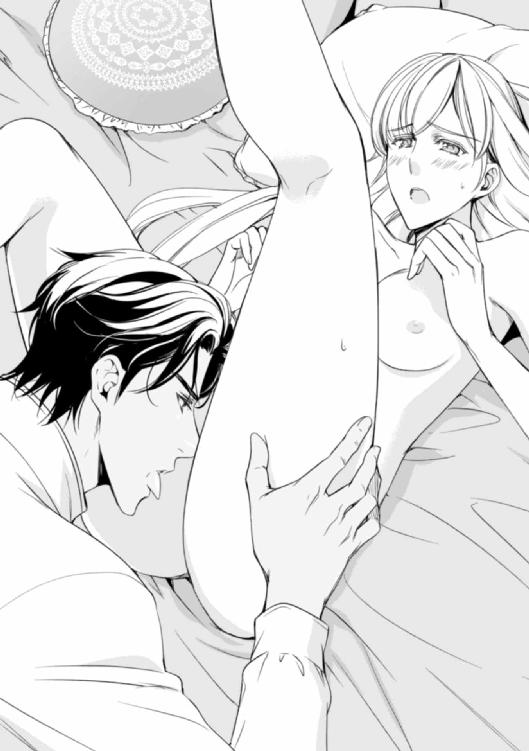
ラシードの舌が淫芯を執拗に攻める間に、忍んできた彼の指が蜜を溢れさせる蜜泉の中に浅く沈んだ。
「あッ！ あ、あ......、ああッ！」
背中が弓の様にしなり、喘ぐ唇の先が切なげに戦慄く。
「君のヴァギナは、花の香りがする。名前のとおり、ジャスミンの香りだ......」
蜜泉に浅く沈む彼の指が、緩やかな円を描きながら更に奥へと沈んでいく。
「ぃ......ぁあ！ んっ......！」
もうすっかり準備ができたそこが、咥えた指をひくひくと締め付けだす。
「もう欲しくて堪らないのか？」
「ち、違っ......、あ、ぁ......ふ......、あ......ッン......」
口先だけの否定だと、きっとラシードもわかっている。
媚薬のせいだろうか？ 初めてだというのに、恐れよりも期待の方が遥かに勝っている。
微笑む唇にキスを焦らされ、瞳は潤み、濡れた舌が拗ねて震えだした。
「ふっ......そう急ぐな。夜は長いし、時間はたっぷりある」
「ぁ......」
濡れそぼった蜜泉に、硬くしなやかな切っ先が押し当てられる。
「怖いか？」
そう問われて、ゆっくりと首を横に振った。長い間夢見てきたことが、やっと現実になるのだから。
回廊の向こうから孔雀の声が聞こえた。それがきっかけだったように、ラシードはジャスミンの唇に口付け、熱くなった蜜茎を彼女の中に深々と沈み込ませた。
◇ ◇ ◇
ジャスミン・バークリーは、途方にくれていた。
それというのも、彼女を取り囲む状況が、あまりにも悲惨すぎるからだ。
彼女には兄妹がおり、上から順に長男パトリック、次男アレックス、長女ジャスミン、次女エレインと全部で四人だ。全員がまだ独身で、同じ邸宅に暮らしている。
彼ら兄妹は、ここイギリス・デヴォン州で長く続くソーンフォード伯爵家の子女として育ち、優しい父母のもと何不自由なく暮らしていた。だがそれも、もう過去の話だ。
五年前に両親が病気で相次いで亡くなり、嫡男であるパトリックが一家の全財産と爵位を継いだ。今思えば、それがソーンフォード家の衰退が始まったきっかけだったように思う。
悲惨な状況その一。
ソーンフォード伯爵となり、一家を取り仕切っていた兄のパトリックが、ひと月前に落馬事故で命を落とした。彼はいつの間にかギャンブルと不動産投資にのめり込んで、そのせいで一家の財産をほとんど失ってしまっており、今住んでいる邸宅を含む土地までも借金の抵当に入っている。
悲惨な状況その二。
そんな状況なのに、探検家の次兄アレックスが、アフリカ大陸で行方不明。彼は、一年前に仲間と遺跡発掘を目指し意気揚々と旅立ったのはいいが、探検の途中、単独で行動したのをきっかけに、仲間との連絡が途絶え、もう二カ月もの間どこでなにをしているのかわからない。
以上の状況下にいるジャスミンは、目下ソーンフォード家の一時的な長であり、パトリックの葬儀を取り仕切り、アレックスの消息を知るために奔走し、すっかり疲れ切ってしまっている。
「アレックスったら、いったいどこにいるの......」
彼が単独で向かった場所は、大陸北東部にある砂漠地帯だという。そこは、昼間の太陽が沈めば寒い夜がやってくる地域だ。
「せめて無事でいてちょうだい。あなたまでいなくなってしまったら、私とエレインはもうなすすべもないわ......」
口に出すと、ますます今の状況が耐え難いものに思えてくる。
額に掛かる髪を指先で払い、ジャスミンは墨色のドレスを着た膝上に視線を落とした。そこにあるのは、パトリックが残した数十枚にもわたる完済済みの借用証書だ。
パトリックは、ギャンブルと投資のためにあちこちから借金をしていた。返済のために、持っていた不動産家屋を手放し、それでも足りず、いつの間にか母親が遺した宝石類にまで手をつける始末。そうまでしてもなお、借金は残っている。
パトリックは、一連の所業を一切弟妹に知らせないまま行い、一家を貧乏貴族に貶めてくれた。
四人いる兄妹のうち、幼少の頃よりソーンフォード家の男児二人はどこか夢見がちで地に足が着いていないと言われてきた。事実、亡くなる三日後に三十二歳の誕生日を迎えるはずだったパトリックは、嫡男なのに領地管理にまるで興味を示さず、大学を出ると長旅に出て、それ以後もなんだかんだと理由をつけて家を空けてばかり。
次男アレックスはといえば、生来の知りたがりが高じたのか、父が勧めた法律家になる道をあっさり踏み外して、探検家として世界中を飛び回っている。それに関しては、曽祖父である第十五代ソーンフォード伯爵ジャックの血を引いているのかもしれない。彼は一家の長でありながら未開の地に行くことを好み、爵位を譲った後は好き放題にあちこちを飛び回っていたらしい。
そして、長女ジャスミン──。
しっとりと柔らかな蜂蜜色の金髪にミルク色の肌、深い海を思わせる藍緑色の瞳。
昔から人一倍好奇心旺盛で、おてんばと言うよりはじゃじゃ馬で男勝り。なにか思いつくとじっとしていられない性質で、両親は彼女にはいつもはらはらさせられっぱなしだった。
『あなたのそういうところは、アレックスそっくり』
そう嘆いていた母はもう亡く、ジャスミンは自ら望んだこととはいえ、社交界デビューもしないまま今年で二十三歳になる。
それでもその美しさゆえに、いくつか結婚の話が持ち上がったりしたが、彼女はそれを頑なに断り、今も独身を通している。なぜかと言えば、ジャスミンは十五歳の頃からある一人の男性に恋い焦がれているから──。
「ジャスミン、ちょっといいかい？ 話したいことがあるんだ」
ふいに後ろから声をかけられ、ジャスミンは声がした方を振り返った。
彼女の胸元を飾るペンダントトップが揺れる。
それは、白金の台に二センチもある真珠をはめ込んだ指輪で、まわりには丸く削られた小さなダイヤモンドが散りばめられている。およそ女性がはめるには大きすぎるその指輪は、ジャスミンが十五歳の夏からずっと肌身離さず身につけている宝物だ。
「ええ、バーニー。あ、そろそろお茶の時間ね。ちょっと待ってね、今用意するわ」
何気なく背を向け、胸の上にある指輪をドレスの中に戻した。普段ドレスの胸元にしまい込んでいるそれは、なにかのきっかけでほんのたまにだけれど今のように外に出てきてしまうことがある。
「ありがとう。じゃあ、先に居間に行って待っているよ」
バーニー・シュルツ──彼は亡きパトリックの学生時代からの友達であり、同じデヴォン州の海沿いに敷地を持つ男爵だ。
兄と同じ三十二歳で、五年ほど前に妻を亡くし、今は広いお屋敷で一人暮らしている。
バーニーはパトリックの生前しょっちゅう誘われてこのお屋敷を訪れていたし、家族全員彼の穏やかで正直な人柄を好ましく思っていた。そんな彼は、パトリックが亡くなって以来ずっとソーンフォード邸に滞在しており、葬儀に関する様々な雑事を手伝い、それが終わりひと段落着いた今でも、姉妹のことを気にかけ、ここに留まってくれているのだ。
いや、留まってくれているというのは実のところ正しい言い方ではない。なぜかといえば、ここはもう実質的に姉妹のものではないから。パトリックが返す当てのない借金をし、その抵当としてこの邸宅を含む土地を受け継ぐ予定なのは、他でもないバーニー・シュルツだからだ。
パトリックは、一家の財産をすっかり手放してしまった後、最後に残ったここを担保に、親友であるバーニーに度重なる借金を申し込んでいた。
そして親友という関係に甘えたのか、はたまた他にお金を借りようにも、もう担保がなかったせいか、パトリックはバーニーから借りたお金だけは一切返さないまま亡くなってしまった。
それがわかったのは、パトリックの葬儀が始まる直前のことだ。
会場にやってきた一家の管財人から、パトリックの借金の内訳を聞かされ、その時にバーニーからの借り入れも含めすべてが明らかになった。借用書の内容を確認すると、借金を全額返済しない限り、今住んでいるお屋敷を含む土地はバーニーのものになると書かれている。パトリックが亡くなり返済の当てもない姉妹は、実質ただの居候でしかない状態なのだ。
そのことを知ったジャスミンは、葬儀の後片付けもそこそこにバーニーを捉まえ、パトリックの所業を心から詫びた。
バーニーは、ジャスミンの謝罪を恐縮しながら受け止め、明らかに憔悴しきっている彼女を落ち着かせて、それまでのいきさつを話した。
「パトリックが僕にした借金は、すべて投資に回すお金だと言っていた。彼は彼なりに失くした財産を取り戻そうとしていたんだ。だが、結果的に失敗して借金だけが残ってしまった。僕は、彼にもっと慎重にやるよう強く言うべきだった。だけど余計な口を挟まないでくれと言われて、それ以降もう口を出さず、ただ見守るだけで注意することもしなくて......」
苦渋の表情をみせる彼に、ジャスミンは何度も首を振り、無理矢理微笑んでみせた。
「あなたにはなんの落ち度もないわ、バーニー。あなたの親切には感謝してるの。だって、本当なら私たちはとっくに追い出されてもいい立場なんだし──」
「ジャスミン、頼むからそんなことを言わないでくれ。僕は、君たちをここから追い出そうなんて思ってない。借金は、元々期限なんか設定していないし、返すのはいつでもかまわないんだ。本当だよ」
バーニーがそこまで言うのには、それなりの理由がある。彼が言うには、まだ自分たちが学生だった頃、バーニーは一度パトリックに命を救われたというのだ。それは、濡れ衣が原因の決闘騒ぎで、それをきっかけに二人の間に友情が芽生え、一番の親友同士になったという経緯があるのだ、と。
「パトリックは、いい奴だった。確かに世間からしたら少々軽はずみで考えの浅い部分もあったけど、一緒にいて彼ほど楽しい男はいなかったよ。少なくとも、僕にとっては一番の親友であり、良き相談相手だった」
確かに二人は仲が良かったし、痩せてひょろ長い風体のパトリックに対して、ずんぐりと丸いバーニーは傍から見ても微笑ましいコンビだった。
「そう言ってもらえると私も嬉しいわ。うちの兄二人とも本当に愉快な人たちだと思う。でも、あなたも知ってのとおり、領地や財産を管理したり、家を守っていくということにはあまり向いてないわね。私たち兄妹四人のうち、一番堅実で落ち着いているのはエレインだわ」
「君だってそうだよ、ジャスミン。これまで二人の兄さんたちに代わって、よくやってきたと思うよ」
「いいえ、私なんか駄目だわ」
ジャスミンは、作り笑顔を浮かべ、ひょいと肩をすくめた。
〝だって、本当はアレックスみたいに外国を飛び回りたいと思っているんですもの。家で大人しくしているのなんて、私の性に合わない〟
彼女の身体にも、曽祖父のジャックや兄アレックスと同じ探検家の血が流れているのだ。
書斎を出たジャスミンは、ハウスメイドのジェーンにお茶の用意を頼み、居間に向かった。
「おまたせ。もう少しでお茶が来るわ。それで、さっき言っていたお話って？」
「ああ、それなんだが──」
バーニーが改めてジャスミンの方を向いて座りなおした時、お茶のトレイを持ったジェーンがちょうど居間に入ってきた。その後ろから、庭に咲いている花を携えてエレインが顔を見せる。
「ジャスミン、ほら見て。秋になってから一番に咲いたポピーよ」
鮮やかな赤い花を挿した花瓶を持ち、エレインがお茶の席に着いた。
「バーニー、あなたのお部屋にも後で持って行くわ」
エレインの申し出に、バーニーは穏やかな顔で頷く。
「ありがとう、エレイン。ちょうどいい、これからジャスミンに話があるんだけど、君も一緒に聞いてくれるかい？ ジェーン、君もいてもらってもいいかな？」
「はい、もちろんですとも」
空になったトレイを持ったジェーンは、ジャスミンが座る椅子の後ろに控えた。彼女は、まだジャスミンが生まれる前からこの家に仕えており、家族同然のハウスメイドだ。
「僕はもう長くパトリックの友達だった。彼が亡くなり、君たち姉妹も表向きは明るくしているけど、いろいろと気苦労が絶えないことと思う」
彼の言葉に、ジェーンがこっそりと頷く。事実、人がいる時はなんとか気丈に振舞えてはいるけど、部屋に戻り一人っきりになった時の姉妹は、やたらとため息ばかりついているのだ。特にジャスミン──彼女の肩にかかっている長女としての重責は、計り知れないものがある。
「今から僕が話すことは、実のところパトリックが亡くなったと聞いて、しばらくして思いついたことなんだが......」
軽く咳払いをした後、バーニーは手にしていた花模様のティーカップをソーサーに戻した。彼のとび色の瞳が、そこにいる人たちの顔を順に巡った。そんな彼を、三人の女性がそれぞれに見つめ返す。
「これはひとつの提案として聞いて欲しい。決して無理強いをするわけではないし、なにより本人の気持ちが最優先だと思う」
ジャスミンの後ろで、ジェーンが息を飲む気配がした。日頃から感のいい彼女は、バーニーが言おうとしていることを多少なりとも予測していたみたいだ。
「ジャスミン」
バーニーが、緊張した面持ちでジャスミンを見る。彼の視線を受け、ジャスミンは訳もわからないままとりあえずしゃんと姿勢を伸ばした。
「なあに、バーニー？」
「僕と結婚してくれないだろうか。この一カ月を共に暮らして、僕の人となりもこれまで以上に理解してくれたことと思う」
彼のふっくらとした頬が、だんだんと赤く染まっていくのがわかる。
一方ジャスミンは、たった今言われたことの意味が理解できずに、ぽかんと口を開けたまま瞬きを繰り返した。
「君は立派なレディだし、一人でもやっていける精神の強さも行動力もある。本来なら、僕なんかが結婚を申し込むにはおこがましいほど美しいし、性格も立派だ。だけど、パトリックがこんな形で亡くなった今、僕との結婚はこれからの君の人生におけるひとつの選択肢になるんじゃないかと思ったんだ」
「まあ！」
ジャスミンは、大きく目を見開いてバーニーを見つめた。
〝バーニーは、私にプロポーズをしている！ まさか、彼がそんなことを言い出すなんて、夢にも思っていなかったわ！〟
「まあ、バーニーったら......。いきなりでびっくりしたわ......。ああ、ジャスミン、でもあなたは......」
ジャスミンの隣に座るエレインが、困ったように二人を交互に眺める。
『パトリックがこんな形で』──それはすなわち、彼が一家の財産を失くし、バーニーに借金を残したまま亡くなったということ。
はっきりとは言わなくても、彼がそのことを理由に今の申し出をしているということは、ほぼ間違いない。バーニーは、いまだ亡き妻であるジャネットを愛している。それは彼の日頃の言動を見ていればわかるし、実際彼は日に何度もジャネットの形見であるカメオの髪飾りを見つめては物思いに耽っているのだ。
「今すぐに返事が欲しいとは言わない。ただ、一度考えてみて欲しい。僕のことを夫として愛してくれとは言わない。実のところ、これはパトリックの近くにいながら、彼の散財を止められなかったことに対する償いの気持ちでもあるんだ」
〝ああ、やっぱりそうなんだわ〟
彼の言葉は、男女の愛情から出たものではなく、パトリックに対する友愛と償いから出た言葉だ。
彼の視線が、ジャスミンから目の前のティーカップに移った。そして、しばらくそこにとどまった後、また彼女の方へと戻ってくる。
「こんな言い方をしてしまってすまない......。もっと上手く言うつもりだったんだが、どうにも僕は昔から口下手らしいよ」
ジャスミンの隣にいるエレインは、励ますような目つきでバーニーを見る。その視線を受け、彼は、ばつが悪そうに微笑んでまた口を開いた。
「ジャスミン、だけどわかって欲しい。正直なところ僕は君のことがとても好きだ。君の家族も、ここに住む人もこのお屋敷も大切に思っている。それだけでも、僕たちはきっとうまくやっていけると思う。どうだろう、君さえ良ければ、この後の人生を僕と共に歩んでくれないかな」
一気にそう言ってのけたバーニーは、視線をエレインの方に移した。
「エレイン。君もジャスミンと一緒に、このことを考えてみてくれるかい？ 君は来年社交界にデビューする予定だし、できることならその時は僕の義理の妹として、皆に紹介したい。そして、ジェーン」
彼の視線が、ジャスミンの背後に移る。
「君には、ずっとここにいて欲しいと思っている。そして、他の使用人二人にもね。彼女たちはどちらも君の姪にあたるそうだね」
ジェーンが驚いたような顔で頷く。正直、ここまで彼がこの家のことを把握しているとは思わなかった。お屋敷にいる使用人は、ジェーンを合わせ三人。ただし、今後この家から姉妹が去ることになれば、ジェーンたちは全員職を失ってしまうだろう。
「誤解して欲しくないんだが、僕は決してここを乗っ取ろうとしているわけじゃないんだ。なんと言っていいのか......ただ、君たちにこれまでどおりの暮らしをして欲しいと思っている。パトリックも、君たちを路頭に迷わせるつもりでここを抵当に入れたわけじゃないしね」
バーニーの言葉に、ジェーンも同調し、そっと洟をすすった。
「そうね、私もそう思うわ。パトリックは彼なりにこのお屋敷も領地も愛していたわ。領主としては落第だったかもしれないけど、兄としてはすごく茶目っ気のある人だった。両親が亡くなった時だって、彼がいるだけでなんとなく場が明るくなったものだわ」
「本当にそうね」
エレインが頷きながらつぶやく。領主としては、借金ばかり繰り返したろくでなしには違いなかった。だけど、家族にとっては憎みきれないほど大切で、大好きな兄だったことに変わりはない。
「そう思う気持ちだけでも、僕らは家族になれないかな。この家や家族を愛する人の仲間に僕も入れてもらえたらこんなに嬉しいことはない。隠しごとはしたくないから言うけど、妻を亡くして五年経った今、一人が身にしみて堪えていたんだ」
バーニーは、また少し顔を赤らめてそっと俯いた。
バーニーには、子供がなかった。元々病気がちだった彼の妻は、医者から子を持つことを止められていたのだ。かつてここに遊びに来た時、そう打ち明けてくれたバーニーは、同時に自分がいかに子供好きであるかを話していた。
無口で物静かなバーニーだけど、きっと彼なりに自分のことを知ってもらおうと努力していた。
そして今もまた、自分がいかにここにいる人たちのことを大切に思っているか伝えようとしてくれている。そう思うと、彼に対する友情がより一層深いものになっていくような気がする。
だからといって、それが彼のプロポーズに対する答えには、今のところなりそうもないのだけど......。
「さっきも言ったけど、すぐに答えを出してくれとは言わないよ。君たちさえ許してくれるなら、もう少しこのままここにいさせて欲しい。そして、じっくり考えた上で答えを出してもらえたらいいと思っている。どちらにしろ、ここにいる人はこのままこの家に住んでもらうつもりだから」
バーニーの控えめすぎるほどの言葉に、ジャスミンたち三人は何度も頷いて、繰り返し感謝の気持ちを伝えた。
そんなジャスミンの胸元には、いつの間にかまた真珠の指輪が煌いている。
その指輪の存在を意識した途端、ジャスミンの心は千々に乱れ、想い出の中に身も心も囚われてしまうというのに──。
「よくわかったわ。ありがとう、バーニー。そんな風に思ってくれるなんて、とても嬉しいわ。あなたの言うとおり、じっくり考えた上で返事をさせてちょうだいね。できるだけ早く......ここにいる二人ともよく相談しながら、ね」
ふと横を向いた先に、エレインの細い顔があった。彼女にそっと笑いかけると、ジャスミンはカップに残るぬるい紅茶を、ため息と共に飲み下した。
◇ ◇ ◇
「無理をしないで。たとえこの家にいられなくなっても、私はあなたに気の進まない結婚なんかして欲しくないわ」
バーニーに結婚を申し込まれた次の日、ジャスミンは午後のひと時をエレインと共に居間で刺繍をして過ごしていた。
昨夜一人ベッドの中であれこれと考えを巡らせ、一度はバーニーとの結婚を前向きに考えようとしてみた。そうすれば、彼が言っていたようにこのままここに住み続けることができる。エレインも新しいドレスで社交界にデビューできるし、ジェーンも彼の姪たちもこのままここで仕事を続けられる。
考えれば考えるほど、彼と結婚することによるメリットが増えていく。だけど、胸元に潜ませた真珠の指輪が、ジャスミンの本当の心を暴いてくる。
なぜ自分が今まで独身でいたのか。それは、彼女が心に想う人を忘れられないでいるから。
もうずっと前に、叶わない恋と諦めてはいるのに、どうしても彼以外の人を愛することができないのだ。
だから、自分はもう一生結婚しない。それが家族の迷惑になるようなら、どこか知らない土地にいって自分一人でどうにか生きていく覚悟すらしていた。だけど──。
以前はそれでよかった。しかし、今はこれまでと事情が違っている。アレックスのことはさておき、家の財産がなくなってしまった今、自分勝手に生きるわけにはいかない。
バーニーの申し出は、本来なら二つ返事で受け入れてもいいような話だ。彼はいい人だし、自分のことを無理に愛そうとしなくてもいいとまで言ってくれている。
「ねぇ、エレイン。あなたが私のことを第一に考えてくれるのは嬉しい。だけど、私だってあなたの将来が心配なの」
ジャスミンは、布に針を刺しながらエレインを見た。
「わかってるわ。もし私がジャスミンの立場でもそう思うでしょうね。だからこそ言うのよ。愛のない結婚なんて賛成できない。自分の心に嘘をついてまで結婚して、その結果あなたが不幸になれば、それは私にとっても不幸だもの」
そう言われてしまうと、強く言い返すことができなくなってしまう。結婚に関しては、姉妹は元々同じような考えを持っていたし、お互いの気持ちは他の誰よりもわかり合っている。
「そうね......もし私があなたの立場なら、同じようなことを言って反対するでしょうね。でも、バーニーは本当にいい人だわ。彼を愛せたら......あぁもう、どうして私ってこうなのかしら」
眉間に皺を寄せてため息をつくジャスミンを見て、エレインは可笑しそうに肩をすくめた。
「だって、こればっかりは仕方ないわよ。バーニーはいい人だけど、あなたの心を揺さぶることはできない。いつか会った砂漠の国の王子様のようには、ね。そうでしょ？」
「まあ！ エレインったら、まだそんなことを覚えていたの？」
妹の言葉に、ジャスミンは心底驚いて、色白の顔を赤く染めた。
「もちろん覚えているわよ。あの時、私はまだ十一歳だったけど、彼がどんなに魅力的だったか、十五歳だったあなたが、どんなに彼に夢中だったかはよーく覚えてるもの！」
「エレインったら、何で今頃？ 今の今までそんなこと話題にも出さなかったじゃない！」
火照る頬に掌をあてがい、ジャスミンは困ったように眉尻を下げる。
「ええそうね。だってそれはもうだいぶ前のことだし、あなたが口にしないでいることをわざわざ話題にするのも気がひけたの。だって、それはジャスミンが大切に胸の奥にしまっている想い出でしょう？ だけど、今の状況を考えると、それを持ち出さないわけにはいかないと思って」
砂漠の国の王子様──。
その人がここにやってきたのは、ジャスミンが十五歳の夏のことだ。その頃は、まだ父母も健在で、長男のパトリックは大学を終えてからの長い旅に出ていて不在だった。
その頃のジャスミンはまだレディとしての自覚がやっと少しだけ芽生えてきたという時期で、母親にしてみれば、まだまだ躾けたりないほどのお転婆であり野生児だった。
「胸元の指輪、彼からもらったものなんでしょう？」
「えっ？ どうして知っているの？」
それは、当人同士しか知り得ないはずの事実だ。
「あら、だってここ何年かであなたの胸はとても大きくなったでしょう？ しょっちゅうドレスの胸元から零れ出ているのを見かけるし、彼がここにいた時にそれを指にはめていたことをちゃんと覚えていたから」
「エレイン！ あなたって、本当は誰よりも探検家に向いているんじゃないの？ 探検家と言うより、推理作家？」
「どっちでもいいわよ。ねぇ、話して？ そして、私の隠していた好奇心を満たしてちょうだい」
妹の言い分に、ジャスミンは仕方なく話すことにした。
「長くなるわよ」
「平気。時間はたっぷりあるでしょ？」
姉妹は、やりかけの刺繍を放り出して二人がけの長いすに座った。テーブルにあったお茶を一口飲むと、ジャスミンは昔の想い出に心を飛ばし、話し始めた──。
◇ ◇ ◇
二頭立ての馬車が邸宅の前に到着して、アレックスのただいまと言う声がホールに響き渡る。
時は十八世紀初頭の七月──当時ロンドンの大学に通っていたアレックスは、寮で同室になった友達を誘い、夏の休暇を過ごすために地元デヴォン州に帰ってきた。
「アレックスだわ！」
先月十五歳になったばかりのジャスミンは、そう言って座っていた揺り椅子から勢いよく立ち上がった。
壁一面が本で埋めつくされた書斎を出て、幅広の階段を一段飛ばしで駆け下りていく。こんな場面をもし母親に見つかろうものなら、また一日中小言を言われるだろう。
だけど、なんといっても今は非常事態だ。大好きな兄であるアレックスが帰って来た！
彼に会うのはクリスマスの休暇以来だし、パトリックも不在の今、あちこちで仕入れてきた面白い話を聞かせてくれるのは彼しかいない。
ジャスミンが階段の踊り場に差しかかったところで、後ろから父母と妹がアレックスを呼ぶ声が聞こえてきた。
一足先に一階にたどり着いたジャスミンは、ホールの真ん中に立つ次兄まで一直線に走っていく。
「アレックス！ おかえりなさい！」
「やあ、ジャスミン。今回もお前が一番に出迎えてくれたね！」
栗色の髪にブラウンの瞳。洒落た濃紺のジャケットを身に着けたアレックスは、胸に飛び込んできた妹をしっかりと受け止めて笑った。
背後から父母たちのおかえりの声が聞こえる。ジャスミンは、兄の顔をよく見ようと彼の腕の中から飛び出て、一歩後ずさった。
すると、開け放したままの玄関から、一人の背の高い男性が入ってくるのが見えた。
「ああ、みんな紹介するよ。僕の友達で、ラシード・カリム・アル・マフムードだ」
顔を上げ、真っ先に目に入ったのは、驚くほど印象的な暗褐色の瞳。名前からして、アラブの国からやってきた人であることがわかった。
艶やかな黒髪にごく薄い飴色をした肌。秀でた眉にくっきりとした目元。高くて整った鼻梁は、彼が高貴な生まれであることを予想させる。
〝目元は、まるで美しい鷹のようだわ。じっと見つめられたら、怖気付いちゃいそう......だけど、とっても優しい瞳をしている〟
ジャスミンは、彼を一目見るなりその姿に心奪われてしまった。
「ようこそ我が家へ。さあ、今日からしばらくはここがあなたのご自宅だと思って」
「そうだよ、アレックスの友達なら、私たちにとっても大切なお客様だからね」
ソーンフォード夫妻は、久々に帰ってきた息子とその友達を温かな笑顔で迎える。夫妻の歓迎の言葉に、ラシードは上品な微笑みを浮かべた。
「どうもありがとうございます。僕のことは、ラシードと呼んでください」
「彼はカビール国の出身でね。二年前からイギリスに来ている留学生......っと、ここまでは手紙に書いて知らせていたよね」
アレックスがラシードの横に並んだ。二人の身長差からして、ラシードの背丈はたぶん百八十五センチくらいだ。肩幅は広く、まるで絵画に描かれているギリシア神話の神々のように優美な立ち姿をしている。
確かに、事前にアレックスが送ってきた手紙にはそのようなことが書いてあった。だけど、彼がこれほどまでに美男子だとは知らされていない。今まで一度も男性に心動かされたことのなかったジャスミンだけど、今回ばかりは初めて胸が熱くなった。
「カビールってアフリカ大陸の上の方にある国でしょう？ 私、地図で調べたのよ。だから、てっきりアラビアン・ナイトに出てくるような髭の男の人がやってくるものだと思い込んでいたわ」
ジャスミンは、好奇心を隠すことができずに、話に割って入った。
後ろで両親が渋い顔をしているのだろうと思ったが、そんな遠い国の人に会うのは初めてだし、なによりもラシードが持つ複雑な色合いの瞳が、彼女を惹きつけてやまなかった。
ジャスミンの質問を受け、ラシードはにっこりと微笑み、彼女に手を差し出して握手を求めた。
「君がジャスミンだね。アレックスから、よく話は聞いているよ。とても好奇心旺盛で、面白い妹だって。確かに、君の言うとおり僕の国の近隣では髭を生やした男性はよく見かける。だけど、アラブも広いからね。住んでいる人々の種族も文化も多種多様なんだ」
真っ直ぐに自分に向けられる視線に、ジャスミンは胸のドキドキを抑えきれなくなる。
〝どうしたのかしら？ 胸が破裂しそうに苦しい......！ なにか喋っていないと鼓動がみんなに聞こえちゃいそうだわ！〟
「そうなの？ すごく面白そう！ ねえ、アラビアン・ナイトの本って、アラブにもあるの？ 挿絵はどんな感じ？ うちの書斎にあるものは、かなり修正が加えられているらしくて──」
「ジャスミン！」
背後から聞こえてきた母の声に、ジャスミンはきゅっと肩を縮こまらせた。
しまった！ どうやら調子に乗って喋りすぎてしまったみたい！ だけど、湧いてくる好奇心には勝てない。ジャスミンは、口は噤んだものの、瞳だけはきらきらと輝かせたままラシードの答えを待った。
「アラブではいろいろな種類のアラビアン・ナイトの本が出ている。挿絵も美しいよ。いつか君に見せてあげられるといいんだけど」
ラシードは優雅に微笑み、ジャスミンとソーンフォード夫人の仲を取り持つように、二人の間に足を進める。
アラビアン・ナイト。
それは、アラブの国で昔から伝わるいくつもの物語を合わせてできた長い長いお話。
書斎にあるアラビアン・ナイトは、ジャスミンが言うとおり、どの世代でもわかりやすく読めるよう多少文章を削ったり変えたりしているものだ。そのことを教えたのは、他ならぬ次兄アレックスで、先ほどのジャスミンの言葉は、その奥に隠された深い意味まで理解しないまま発せられたものに過ぎない。
つまり、本来のアラビアン・ナイトの妖艶で性的な部分は意図的に修正され、子供が読んでも問題ないように改編したものだということ。
「本当？ いつかきっとね！ 約束したわよ？」
「こら、ジャスミン！ 今着いたばかりのお客様に対して、いきなりお願いごとをするのは行儀のいいことじゃないぞ。それに、年上の男性に対して、友達に話しかけるような口調はよくない」
ソーンフォード伯爵は、娘の暴走をたしなめ、一行を居間の方へと促す。
また怒られた！ ラシードの方を見て舌を出したジャスミンに、彼は魅惑的な笑顔を向けて、片目を瞑ることで応えた。
アレックスは、先立って歩きながら、後ろにいるソーンフォード夫人に話しかけた。
「ラシードには、イギリスの田舎暮らしを満喫してもらおうと思ってるんだ。彼もそれを望んでいるしね。だから極力普通の暮らしでお願いするよ。まぁ、くれぐれも彼が一国の王子様だってことは忘れて──」
「え？ なんですって？」
それを聞いた途端、夫人は素っ頓狂な声を上げ、慌てて指先で口を押さえた。
「王子？ 今、王子様と言ったか？ アレックス？」
夫人の隣で、伯爵が大きく目を見開いている。
いくらソーンフォード家が、かなり由緒正しい家柄だとはいえ、外国の王族に会うことなど初めてのことだ。
「あー、ごめん。これはラシードと話し合って、秘密にしておくはずだったのにな。彼が王子だと知ったら、ヘンに気を使うだろうからって......まあ、もう言ってしまったものは仕方がない。悪いな、ラシード。僕のおしゃべりのせいで、君が砂漠の国の王子様であることが早々にばれてしまった！」
すまなさそうにする割には、アレックスは両親の反応を心から面白がっているみたいだ。
「いいさ。ここで休暇を過ごさせていただく以上、正直に話した方がよかったかもしれない。すみません、隠そうとしたりして。王子といっても、ここから遥か遠いごく小さな国ですから」
ラシードの許可をもらうと、アレックスは居間に移動した一同を前に、彼のおおままかな人物紹介を始めた。
ラシードは、現カビール国王であるマジドと王妃ファリーダとの間に生まれた王子だということ。王には他にも子供がいるが、彼等も含め、将来ラシードが王国においてなんらかの重要な地位につくのは確かであること。
「我がカビール国は、まだ歴史の浅い国です。王といっても、元々いる部族の長老──シークたちの同意なくしては、なに一つ独断では決められません」
〝シーク！ 聞いたことがあるわ！ 白い布のような物を身に纏って、頭にも同じような布を乗せている絵を、本で見たことある！〟
ジャスミンにとって、ラシードを取り巻く環境は、まさに本に見るおとぎ話の世界だ。
〝砂漠の国の王子様ですって？ それじゃあ、彼が住むお城は、アラビアン・ナイトに出てくるような魅力的なところに違いないわ！ そして、ハーレムとかいう綺麗な女性たちがたくさん住んでいる場所もあったり！〟
詳しい事はよくわからないけれど、とにかく彼は、今まで会った男性の中で一番美しく、位も高い正真正銘の王子様だ。
しかし、彼が王子であるという事実は、ジャスミンをほんの少しだけ怯えさせた。
〝そんな偉い人だなんて。普通なら、こんなに近くでおしゃべりだってできないんじゃないのかしら？〟
だけど、そんな気持ちも、ラシード個人への好奇心や興味を前に、すぐに跡形もなく消え去ってしまう。
「まあまあまあ......、とりあえずお茶にしましょう。アレックス、あなたったらあいかわらずのおしゃべりだこと！」
夫人の合図と共に、いつもより豪華なお茶とお菓子がテーブルの上に並んだ。
滞在期間は、およそひと月半の予定だ。
最初こそなんとなく堅苦しいそぶりをしていた伯爵夫妻だったけれど、ラシードの気さくで明るい性格のせいか、一週間も経つと息子に対する接し方とさほど変わらないまでになっていった。
それに比べ、恥ずかしがり屋のエレインは、なかなか彼と打ち解けることはできなかった。だけど、ジャスミンと一緒にいろいろな話をするうち、だいぶ慣れて直接話しかけることもできるようになっている。
「ああ、一度君の国にも行ってみたいものだなあ」
七月も終わろうとする週末の午後。書斎で世界地図を広げながら、アレックスがつぶやく。
「いつでも歓迎するよ。大昔は部族間の争いなんかもあったけど、今は至って平和だからね」
二人が向き合って座るテーブルの端で、ジャスミンは東洋の国に関する本を眺めていた。
この一週間で、ラシードに関するいろいろなことがわかってきた。それらは、すべてお茶や食事の席でソーンフォード夫妻が質問し、ラシードが答えたことからわかったものだ。
最初の日におしゃべりが過ぎたせいで、ジャスミンは、夫妻からラシードと必要以上に話すことを控えるよう言われているのだ。
たとえば、彼の国は四人まで妻を持てる一夫多妻制を採用している。これについては、いささか理解できない部分があるけど、なんといっても国が違うのだし、そもそも結婚のことなど、ジャスミンには今一つぴんとこない話題だった。
ラシードには婚約者がいるらしい。それは彼の従妹にあたる人であり、ゆくゆくは他国の姫君がそれに加わる予定なのだという。それらを決めたのは、王やシークたちであり、彼の国ではそれがごく普通の、王族の結婚に関する慣例なのだと。
〝結婚を勝手に決められちゃうとか、イギリスと似ているところがあるのね。従姉のサラがそう言ってた。お母様もそうだったと言っていたし......〟
なんにせよ、結婚というものが、ジャスミンにはまだよくわかっていない。そろそろそういった話もしなければいけないと、母親から言われてはいるけど、それはきっと来年社交界にデビューしてからのことになるのだろう。
〝そもそもなんで愛してもいない人と結婚するの？ しかも一人じゃないですって？ 砂漠の国って、ずいぶん不思議なことをするのね〟
本に描かれた地図をなぞりながら、ジャスミンはぼんやりとそんなことを考えていた。
遠い異国のことなのだから、関係ないといえばそれまでの話だ。だけど、こうも気になって何度も首を捻り考え込んでしまうのは、やはりラシードが関わっているからだろうか。
〝なんだかわけがわからないわ......。ラシードがここに来てから、胸がすごくもやもやする。こういうもやもやした気持ちについて、説明した本ってないのかしら〟
書斎には、父や兄たちだけではなく、歴代の当主が集めた蔵書が山ほどある。小さい頃から書斎には自由に出入りしていたジャスミンだったけれど、彼女が十二歳の頃だったろうか、ある日背表紙に凝った装飾が施されている一冊の分厚い本が目にとまった。
それは、本棚の一番隅の普段カーテンに隠れている一角に置かれていて、ちょっと指を引っ掛けたくらいでは取り出せないほど本が詰まっている場所でもあった。
苦労してそれを引っ張り出し、重いのでそのまま床の上に座りそれを開いてみた。
中には見たこともない文字が書かれており、描かれている挿絵の中には、男女が抱き合ってキスをしているものがあった。
その頃のジャスミンにとって、キスは親子や兄妹の間でされる家族愛の表現の一つだ。それは今も変わらないし、それ以上のことはよくわからない。結局、その本を見ている途中、眠くなってしまったのか、気がつけばベッドの上に寝かされていた。
それきりその時のことは忘れていたけど、今思えば、その本に描かれている男女は、家族にしては必要以上にべったりと抱き合い、身体をおかしな方向に捻じ曲げていた。しかも、二人とも何一つ身に着けていなかったように思う。つまり二人の男女が、裸で抱き合ってキスをしていたということ。
そんなことを急に思い出して、ジャスミンは見ていた本をいきなりバン、と音を立てて閉じてしまう。
「どうかした？」
こちらに顔を向けたアレックスが、眠そうな声で話しかけてきた。
「う、ううん、なんでもない！」
ぶるぶると首を横に振って、また本を開いて目の前にある活字を追う。
〝ああ、なんとなくわかってきたような気がする──。従姉のサラが言っていたこと、お母様からちょっとだけ聞かされた男女の身体についてのお話、昔見たあの本、アラビアン・ナイトの削られた部分──〟
なんだか、下腹の辺りがむずむずしてきた。そして、なぜか胸がドキドキする。アレックスの正面に座るラシードを盗み見ると、それが更に高まり、呼吸までが苦しくなってしまう。
〝サラが言ってた......。恋をすると、訳もわからずどきどきしたり、息が苦しくなるって。もしかして、これがそうなの？ 私、彼に──ラシードに恋をしてるの？〟
そう思ったとたん、全身の血が逆流し、体温が一気に上昇したような気がした。
〝熱い！ 顔も身体も、なんだかすごく熱いわ！ なんだか、ヘン......。私ったら、どうしちゃったの？ お腹の奥や、胸の先が......なんだかちくちくする〟
ジャスミンは、そんな状態に陥っていることを誰に言うでもなく一人で抱え込んで、密かに悩んでいた。
だけど、本当は悩むまでもなく、彼女はラシードに恋をしていた。まだ恋という存在がよくわからないままに、ジャスミンは、ラシードにすっかり魅入られてしまっていたのだ。
八月に入り、降り注ぐ日差しもどんどん強いものになっている。それと並行して、ジャスミンは、自分を悩ませている状態が、間違いなく恋だと、徐々に理解していった。
そんなある日の午後、彼女は、いつものように書斎に入り浸って過ごしていた。
書斎には、ラシードとアレックスも来ていて、部屋の真ん中にあるテーブルを挟んで、本を読んだり話をしたりしている。
「旅行といえば、君のお兄さんのパトリックは、今どこの国にいるんだ？」
「たぶんまだイタリアにいるよ。一度ローマから手紙をよこしたけど、いろいろと面白くて離れがたいと言っていたから」
長男のパトリックが今回の旅行に出かけてから、もうかれこれ半年にもなる。
「イタリアか。うちの父はまだ若い頃、イタリアに留学していたんだ。そこで気に入った美術品や装飾品を買い込んでね。今でも大切に宮殿のあちこちに飾ってある」
ラシードが、自国を懐かしむような表情を浮かべる。彼が話す英語は、いつもながらまるで母国語であるかのように発音が綺麗だ。
「僕はむしろ君の国のような場所に興味があるね。それと、まだあまり知られていない未開の地にも心惹かれるよ」
アレックスは以前もそんなことを言っていたような気がする。そんな兄たちの話を聞くたび、ジャスミンは彼等がうらやましくて仕方がなくなってしまう。
パトリックは大学を出て以来旅行三昧だし、アレックスだって大学に通いながらあちこち旅行して回っている。
彼らと違って、ジャスミンはまだ一度も外国に行ったことがなかった。その代わり、暇さえあれば今のように書斎にこもって、いろいろな本を読んで外国の知識を得たり、その国に思いをはせたりして自分を慰めているのだ。
でも、だからといって妹のエレインのように外で遊ぶよりも家の中にいる方を好むというわけではない。むしろ外にいる方が好きだし、できることなら兄たちのように大学に通って、いろいろな国を見て回りたいと思っている。
母から刺繍を習うよりも、父が語る遠い異国の国の話を聞く方が楽しいし、わくわくする。
『あの子は、生まれてくる性別を間違えたようね』
母がため息をつきながらそう言うのを、何度耳にしただろうか。
『お前が男の子なら、兄さんたちのように学校に通わせてやりたかったが......』
彼女が読書好きで好奇心旺盛なのを十分承知していた父は、一度そんな風に言いながらジャスミンの頭をなでたことがあった。
ジャスミン自身、自分が男性ならどんなによかっただろうと思っている。様々な知識を頭に詰め込み、いろいろな国を訪れることはどんなに素晴らしいだろう！
ここイギリスの南西部にあるデヴォン州は、年間を通して温暖だし、邸宅がある内陸部は起伏に富む田園が延々と広がっている。ジャスミンが知る全世界は、この邸宅の周りと、ロンドンにある家族所有のタウンハウスがある一角のみ。
地図を持ち羅針盤を覗き込んで、遠い国に船で出かけて行く機会が、果たして自分には訪れるだろうか──。
「ここは田舎だからね。うちの裏側はぼうぼうの草地だし、その向こうには川があって、少し行けば小さな森だってあるぞ」
いつの間にか、ラシードとアレックスの話題は、邸宅の裏手にある土地のことに移っている。
兄たちのそんな会話を聞いた途端、その場に居合わせたジャスミンは思わず口を挟んだ。
「邸宅の裏は私のテリトリーよ。毎日散歩がてらあちこちを歩き回っているんだから。この間なんか、アレックスがまだ行ったことのない小さな池だって見つけたのよ」
裏庭から続く土地は広く見晴らしもいいけど、ところどころに石や岩があって、散歩以外何をするにも不向きな土地だ。
「ほう。前に帰った時に見せてくれた地図はまだ描いているのかい？」
「ええ、もうずいぶん範囲も広がってきているのよ。東の森があるでしょ？ あの向こうで野うさぎの巣をたくさん見つけたのよ」
地図というのは、彼女が大判の紙に描いているもので、家の周りの歩いて行ける範囲を探検して調べ上げたものだ。母は、そんな訳のわからない遊びはやめるように言ってきたけれど、ジャスミンは至って真面目にやっているし、遊びじゃなくれっきとした探検だと思っている。
「それはすごい」
ラシードのよく響く声に誘われ、ジャスミンは彼の顔を見上げた。最近では、両親に言われなくても必要以上にラシードに話しかけていない。
〝だって、彼に話しかけると、やたらと息があがっちゃうんだもの！〟
ラシードと目が合うと、なぜか口元が勝手に緩んでくる。目の周りが熱く火照るし、一番困るのが、身体にあるあちこちの先端部分が、やけにちくちくと敏感になってしまうことだ。
「よかったら、少し案内してもらえないかな？ せっかく緑いっぱいの地に来たんだし、ちょっとばかり歩き回りたい気分なんだ。アレックス、ジャスミンを借りてもいいかな？」
「ああ、問題ないよ。昨日は両親に散々付き合ってもらったんだ。今日はゆっくり羽を伸ばしてくれ。ジャスミン、ラシードをお願いできるかい？ 僕はもう少しこの本を読み進めておきたいから」
ラシードの艶やかな瞳が、ジャスミンの視線を捉えた。昨日ラシードとアレックスを連れて近隣の街へ繰り出した夫妻は、今日は朝から近くの友達を訪問しに出かけてしまっている。
「え......ええ、もちろん喜んで案内してあげ......いえ、ご案内させていだだきますわ」
ぞんざいになりそうな口調を慌てて修正すると、ジャスミンはラシードの方を向いて、ぎこちなく笑った。そんな彼女の様子を見たラシードもまた、口元に柔らかな笑みを浮かべる。
〝笑った......！ ラシードが私に向かって笑いかけたわ！〟
思いがけない展開に、胸が弾みますます頬が火照ってくる。
〝これが恋ね？ 心臓が喉のところまでせり上がっている！〟
「おや？ ジャスミン、君はいったいなにを気取っているんだ？ 父上も母上もいないんだから、いつもどおりのお転婆を思う存分発揮したらいいのに」
「まあ！ アレックスったら、私のどこがお転婆なのよ！」
アレックスが仕掛けてきたからかいの言葉に、ジャスミンはついうっかり大声を出してしまった。
「以前言ってただろ？ 家でちまちまとつまらない刺繍なんかしてないで、もっと広い世界を見てみたい。探検の旅に出てみたいって」
突然の暴露話に、ジャスミンは思い切りしかめっ面をしてアレックスを睨みつけた。
「なによ！ それは誰にも言わない約束だったのに！」
アレックスは、しまったとばかりに掌で口を押さえて、すぐさま、またしれっと話し始める。
「あ、でも誤解しないでくれよ、ラシード。ジャスミンは、こう見えてレディなところもあるんだ。鞍なしで馬を乗りこなすし、蛇やトカゲを見ても大声をあげるどころか、興味津々で観察を始めたりね」
「アレックス！」
ラシードは、そんな二人のやりとりを見て、今にも吹き出しそうな顔をしている。それを見たジャスミンは、一層そわそわと落ち着かない気分になってしまう。
〝ラシードったら、なんて素敵に笑うの......。ますます胸が苦しくなる......〟
今や、ジャスミンは自分が彼に恋をしているとはっきり自覚していた。そして、恋というものを徐々に理解し始めている。だけど、そうはいっても、彼女はまだ社交界にも出ていない、うぶな少女だ。書斎にある本や年上の知り合いから聞きかじる知識は、ジャスミンを却って混乱させ、想像しては首を捻ることを繰り返させるばかり。
〝男の人って、よくわからないわ。身体つきも、声の高さも、なにもかも違うんですもの......〟
「よし、ジャスミン。そうと決まったら早速出かけようか。アレックス、妹さんをお借りするよ」
「どうぞどうぞ。ジャスミンは僕と性格が似ているから、きっと君とも気が合うと思うよ。ここ最近静かにしているのは、たぶん母に言われて猫を被っているせいだ」
「アレーックス！」
「おお、怖い！」
またしても、道化のような兄妹のやりとり。ラシードは、また可笑しそうにこちらを眺めいている。いったいアレックスは、ラシードに自分のなにを伝えようとしているのか。
〝これ以上ここにいたら、なにを言われるかわかったもんじゃないわ！〟
ジャスミンは、そばに置いていたお手製の地図を手に取り、読みかけの本を閉じて椅子から立ち上がった。
「さあ、さっさと行きましょう。多分兄は昨日飲み過ぎたせいで、今から居眠りをしようって魂胆でいるんです」
「あたり」
アレックスの声が、ジャスミンの細い肩越しに聞こえてくる。彼女は先に部屋の外に出て、ラシードが出てくるのを待った。
「君たちは本当に仲のいい兄妹だね。実にうらやましい」
薄いグレイのジャケットを羽織った彼が、ドアの外に出てくる。中に着ているのは淡黄色のベスト。どちらにも目を見張るほど丁寧な刺繍が施されている。
〝もっといいドレスを着ればよかった！ といっても、私が持っているものは、どれもお屋敷の裏を歩き回るせいで、ほとんどの裾が傷んじゃっているけど〟
その日ジャスミンが身につけていたのは、ミモザ色のドレスだ。注意して歩けば、裾がちょっと破れているのは、ばれずに済むだろう。
「兄は小さい頃から、私ばかりからかってくるんです。アレックスのことは大好きだし、仲もいいんですけど、たまには冗談を交えないで真面目に話して欲しいわ」
それを聞いて、ラシードは軽やかな笑い声を上げた。
「僕の兄妹は、逆に冗談の一つも言い合えない間柄の人ばかりだ。それはそうと、アレックスは家でもああなんだね。いつだって愉快だし、人を笑わせたり和ませてくれる」
「ということは、学校でも？」
「ああ、彼はとても愉快でユーモアに溢れているよ。だから、みんなに好かれている。おまけに好奇心旺盛だし、すごく勉強熱心だね。そういうところが君と似ているのかな」
ラシードの視線が、ジャスミンのものとぶつかる。
「えっ......、どうかしら......。自分のことはよくわからないわ」
確かに、同じ兄でもパトリックよりもアレックスの方が気が合う。どちらも明るく楽しい人だけど、パトリックは、どちらかといえば街中を好んで、アレックスはただの草原や行ったこともない森の奥の方が好きみたいだ。
それはそうと、ふと気がつけばいつもより少しばかり声のトーンが高くなっている。やはりアレックスの言うとおり、知らない間に気取ってしまっていたのかと、急に気恥ずかしくなり、唇を噛んで下を向いた。
「どうかした？」
横にいたラシードが、一歩前に出てジャスミンの顔を覗き込んだ。
「あ......、いいえ！ なんでもないです」
やっぱり！ 自分でもわかるくらい、明らかに声が上ずっている。
〝どうしよう......。なんだか、普段の自分じゃないみたい。思ったように話せないし、声も震えちゃうし......〟
さっきから頬が熱く、瞬きもやたら多くなった。思えば、こんな風に男性と二人きりで歩くなんて今までにしたことがない。そのことに気が付いた途端、胸の鼓動がみるみる早くなり、なにか言おうと焦る唇が乾いてくる。
「読書の途中なのに悪かったね」
ラシードが、こちらを見て、後ろ向きに歩きながら口を開いた。
「いえ、あれはもう何度も読んだ物を読み返しているだけですから」
「ふぅん、何度も？ 君は読書家なんだね」
「だって、本を読むと、知らないことがたくさん書いてあるから──。それに、兄たちがいない間は、本を読むくらいしか外の世界を知る手段がないんですもの」
表向きはごく自然に会話しながら、中庭を突っ切り、夏の日差しが降り注ぐ裏庭に出る。
「どこを案内しましょうか？ 左へ行けば森があるし、右だとでこぼこの草原の向こうに小さな湖があります」
手にしていた地図を両手いっぱいに広げて、ジャスミンはいつの間にか後ろに回っていたラシードを振り返った。すると、思いがけず彼の瞳が自分の方をまっすぐに見つめている。ジャスミンはそれに気付き、驚いた拍子に足元にあった石につまずいてしまった。
「あっ！」
よろめいた彼女の身体を、咄嗟に伸びてきたラシードの手が救った。
「あ、ありがとうございます！」
ことなきを得たのはいいけど、お陰で胸のドキドキが最高潮を迎えてしまう。
「大丈夫だった？」
彼の声が、ごく間近で聞こえる。
すぐ目の前にある彼の瞳は、明るい陽の光を浴びて、いつも以上に魅力的で艶めいて見える。
その中心は吸い込まれそうなほど深い漆黒で、周りを囲む艶やかな虹彩部分は、まるで一つの天体のように複雑で美しい色をしている。
アラブの人の睫が長いことは、以前本で読んだから知っていたけど、ラシードのものはただ長いだけでなくびっしりと濃い。だけど、それでもなお彼がいかにも男らしい顔立ちでいるのは、それだけラシードの目力に王子たる風格と強さがあるからだろう。
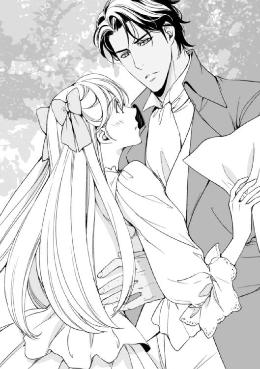
「どこか痛めたんじゃないか？」
ジャスミンを腕に抱えたまま、ラシードが心配そうな声を上げる。
「い、いいえ、どこも！」
急いで体勢を立て直し、頬にかかっていた髪の毛を掌で払った。背中に感じた彼の腕は、思いのほか逞しくて、心臓が止まりそうになってしまう。
「僕といると気詰まりかな？ だとしたら、申し訳ない」
「い、いいえっ！ そんなことないです！ ただ、ちょっと......その、男性とか、異国の人に慣れていないだけです。それに、ラシードさんは一国の王子様だし──」
「ラシードって呼び捨てで呼んでくれていいよ。敬語じゃなくていいし、君のお兄さんたちに話すように喋ってくれたらいい。アレックスの妹は、僕にとっても妹のようなものだからね」
相変わらず流暢で美しい英語が、ジャスミンの耳に心地よく響く。
「あ......じゃあ、えーっと、ラシード......」
森の方へ向かいながら、二人は少しずつ会話を重ねていく。そして、だんだんと打ち解けていき、最初会った時のようにざっくばらんな話し方ができるようになっていった。
そして、途中見つけた野うさぎの巣に近づき、そこに二人してそっとしゃがみ込んだ。
「実は、朝からここに来るつもりで、野うさぎのために少しパンを持ってきているんだ」
どこにしまい込んでいたのか、ラシードはでこぼこと膨らんだハンカチを取り出して、いたずらっぽく笑った。
〝ああ、彼の笑顔はなんて素敵なんだろう！ 彼こそ本当の王子様だわ！ 世界中のどんな王子様よりも、一番王子様らしい王子様よ！〟
彼といると、心が有頂天になってしまう。だけど、だからといっていつものようにドレスの裾を持ち上げて走り回るわけにはいかない──。
「さあ、ちょっと急ごう。せっかく出かけるんだ。早く目的地に着いた方がいいだろう？」
見ると、ラシードはブーツを脱ぎ、裸足になってズボンの裾をたくし上げている。
「まあ......！」
驚くジャスミンを不思議そうな顔で見つめながら、ラシードはおどけたように両手を広げた。
「だってこの方が早く走れるだろう？ それに、ここだけの話だけど、昨日君が一人で森に向かうのを見たんだ」
「え？」
ラシードは、にっこりと笑いながら肩をすくめた。
たしかに、昨日ジャスミンは森に探検に行った。そしてその時、誰も見ていないと思って、靴を脱ぎドレスの裾を膝の高さまで持ち上げて駆け回ったのだ。
「みっ、見てたのっ？」
「ああ、でも盗み見るつもりはなかったんだ。ただ、部屋で手紙を書いていたら、まるでうさぎみたいに飛び跳ねている君の姿が目に入って......。あまりに気持ちよさそうだったから、どうにも目が離せなくなってね」
彼が滞在している部屋は、ちょうど窓が裏庭に面している。
まさか彼が見ていたなんて！ ああ、もう！ きっとお転婆で品のない娘だと思われたに決まっている。ばつの悪そうな顔をする彼女を見て、ラシードは朗らかに笑い声を上げる。
「心配しないで。誰にも言ってないし、告げ口をする気もないよ。それに、僕はすまし顔の女性よりも君のような元気いっぱいの人の方が好きだな。さぁ、遠慮はいらない。いつもどおり靴を脱ぐかい？ それとも、僕がいたらやりにくいかな？」
「いいえ！」
ジャスミンは、早速靴を脱いで、ラシードの靴と一緒に草が生い茂った木の陰に隠した。
「じゃ、行こうか。草の上で裸足になるのは、実に気持ちいいね。僕の国では、めったにできないことだ」
どちらからともなく競うように森に向かって走り、ときおり立ち止まっては休み、いろいろと話をしながらまた走った。野うさぎにえさを投げたり、見かけない花を摘んだり。いつも一人でしていることをやっているだけなのに、ラシードが一緒というだけでなんて楽しいんだろう──！
「ジャスミン、どうかしたの？ なんだか顔が真っ赤！ まるでりんごみたいよ」
部屋の入り口から、エレインの甲高い声が聞こえてきた。
ジャスミンは、ラシードと森へ出かけて、さっきくたくたになって帰ってきたばかりだ。
「熱があるの？ なんだかぼうっとしているみたいよ？」
「な、なんでもないわ！ ちょっと遠くまで散歩に行って疲れただけ」
「ほんとに？ なんだか変だわ！ まるで恋をしているみたい！ ジャスミンったら、もしかしてラシードに恋をしてるの？ ね、どうなの？ もしそうなら素敵なのに！」
エレインが、歌うように囃し立てる。今年十一歳になったばかりの彼女は、普段は大人しいのに、時折とんでもなく詮索好きで知りたがりになるのだ。
「えっ？ ま、まさか！ エレインったら急になにを言うの？ きっと、うたた寝をしていてなにかおかしな夢でも見たんでしょう！ そんなわけのわからないことを言うなら、もう一緒に遊ばないわ！」
「あら、どうして？ そんなに慌てるなんて、おかしいわよ。やっぱりそうなんだわ！ そうに決まってるわ！ ジャースミンが、恋をしたー！ ジャースミンが、恋をしたー！ ジャース......むぐっ！」
エレインの調子っぱずれの歌声が、居間の中に鳴り響いた。
「エレイン！ あなたが昨日作った花の首飾りを池に放り込んであげるわ！」
「きゃあっ！ それだけはやめて！」
ジェーンが呆気にとられ見守る中、姉妹はばたばたとテラスの方に走っていく。
ジャスミンは、生まれて初めての恋をしていた。その恋は、まだ誰の忠告も教えも受けていない、無垢な心で始まった純白の恋心だ。
ラシードと徐々に親しくなっていくにつれて、ジャスミンはそれまで以上によく笑い、朗らかになった。仲はいい半面、常に一触即発だったアレックスとのやりとりも、見違えるほど穏やかで微笑ましいものに変わっている。
「ラシードのお陰で、ジャスミンがちょっとだけレディになった。それに、なんだか前と雰囲気が違ってきてるぞ」
妙に思わせぶりな兄の言葉を、ジャスミンはすまし顔で受け流した。
彼女自身、そんな自分に戸惑いもしているけど、ラシードが同じ屋根の下にいると思うと、自然にそうなってしまうから仕方がない。
あの日以来、ラシードはジャスミンを誘って毎日のように邸宅の裏手を散歩するようになったし、廊下ですれ違いざまに短い手紙をくれることもあった。
彼は、この頃では常にジャスミンをレディとして扱い、目が合えば優しく微笑んで、自分が女性であることを自覚させてくれる。
そんなある日、ジャスミンは一人で裏庭を散歩していた。ラシードは、朝からアレックスと共に馬で遠乗りに行ったし、エレインは午後のお茶の時間までピアノの練習。両親は、以前から行くと決めていたオペラを観に昨日から泊りがけでロンドンまで出かけている。
空はうっすらとした雲がかかっていて、歩き回るにはちょうどいい気候だ。
「久しぶりに、探検に行こうかな......」
そう独り言を言って、ジャスミンは草原の方へと歩き出した。ジェーンに行き先を告げずに来てしまったけど、そう遠くまで行かなければ問題はないだろう。
吹く風に少し湿気を感じるけど、心はもう草原の向こうにある池のほとりに向かっていた。池には小さな魚が住み着いているし、すぐそばに大きな陰を作る木もあって一人でゆっくり考えごとをするにはうってつけの場所だ。
ここのところ、気がつけばラシードのことばかり考えている。
夜寝る前に彼のことを考えると、いてもたってもいられないような気分になる。両親はまだ気付いていないけれど、エレインはもちろん、アレックスにもなんとなくこんな気持ちでいることがばれているような気がする。
手に持っているのは、ラシードが書いてくれた手紙の束。どれも短くて、他愛のない内容ばかりだけど、たまに彼の母国語であるアラビア語で書いてある文があった。毎回書いてある文字は同じみたいだけど、まったく意味がわからない。
「これ、なんて読むの？」
何度かそう聞いたことがあったけれど、ラシードは「そのうち教えてあげる」と言うばかりで一向に教えてはくれない。今度、アレックスに頼んでアラビア語の教本を買ってきてもらおう。そして、独学で勉強するのだ。そうすれば、いつかラシードと彼の国の言葉で会話する日がくるかもしれない。
池に着くと、いつもの木陰に座り、彼からの手紙を日付順に並べてみる。
最初にくれた手紙は、薄い紫色の紙に書かれていた。
『昨日はどうもありがとう。お陰で楽しい時を過ごすことができたよ』
それは、二人で初めて散歩に行った次の日にもらったもの。
『今日のドレスはとても似合っているよ』
これをもらったのは、ジャスミンが新しく作った空色のドレスを着た時。
『君の瞳は、故郷の海を思い出させてくれる』
ラシードは、ジャスミンの瞳の色を褒めてくれた。そう言う彼の瞳こそ、神秘的で美しいのに。
手紙は回を重ねるにつれ、親しみを込めたものに変わっている。彼がここへ来て、もうじきひと月になる。休暇が終わるまでまだ少しあるけど、それまでに彼ともっと親しくなりたい。
「......ラシード......あ！」
膝の上いっぱいに広げた手紙が、何枚か風にあおられて池の方に飛んでいってしまった。
急いで追いかけ、拾い上げてふと空を見ると、さっきまでの薄い雲が、いつの間にか分厚い灰色の雲に変わっている。気がつけば、目の前の池に細かな雨粒が降り注ぎ始めて、慌てて手紙を拾い、立ち上がった時にはもうずいぶんと風も出てきていた。
「大変。早く帰らなくちゃ！」
そう思い、急いで駆け出そうとしたその時、遠くの空で雷が鳴る音が聞こえてきた。
「ひっ......！」
思わず立ちすくみ、空いている方の手で片方の耳を押さえた。水面を打つ雨粒が徐々に大きさを増す。
ジャスミンは雷が大の苦手だ。まだ幼い時、庭にあったイチョウの木に雷が落ちて、彼女の目の前で真っ二つに割れたことがあった。それ以来、ジャスミンは微かに聞こえてくる雷鳴にも敏感になり、それがまだ遠いうちから耳を塞ぎ、ベッドにもぐりこむようになってしまっている。
「どうしよう......雷が......嵐がくるんだわ」
恐怖に足がすくむ。
だけど、そのままじっとしているわけにもいかずに、ジャスミンは、半ば目を閉じたままやみくもに走り出した。ぼとぼとと大粒の雨が容赦なく降り注ぐ中、懸命に足を前に進める。せめて誰かいてくれたらと思うけれど、こんな何もない場所に人が通りかかるはずもなかった。
濡れたドレスの裾が身体に張り付き、思うように脚を動かすことができない。額から流れ落ちる雨に、視界が遮られる。さっきから聞こえている雷の音が、徐々に近づいてきているみたいだ。
〝早く......早く帰らなきゃ、雷に追いつかれてしまう......！〟
そう思った途端、空が白く光って、頭上の空が割れんばかりの音が鳴り響いた。
「きゃああっ！」
大声で叫ぶ自分の声が、雷の音にかき消される。
目を固く閉じたせいで、走る足元が全く見えなくなり、よろめいたと同時につま先を固い石に引っ掛けてしまった。
「きゃ......！」
身体が傾いたと思った次の瞬間、雨に濡れた草の上に両膝をしたたかに打ち付けてしまった。
目蓋の裏にちかちかとした光が舞い、咄嗟についた右の掌が痛んだ。手紙を持っている左手は無事だったけれど、雨のせいで書かれた文字がだいぶにじんでしまっているのがわかった。
大切なラシードからの手紙が、もう二度と読み返せなくなってしまう──。
思い切ってそれをドレスの胸元に指し込み、自由になった両手でドレスの裾を引っ張り上げた。
雷は怖い。でも、ラシードからの手紙を大事に思う気持ちが、痛む足を家路へと急がせてくれる。
「ラシード......！」
走りながら、何度も彼の名を呼んで、胸に隠した手紙がこれ以上駄目になってしまわないことを祈った。
走れ！ 走れ！ 走れ！
必死で走り続けるジャスミンの背中に、大岩が転がるような雷鳴が迫ってくる。
〝もう追いつかれる！ きっとどこか近いところに、雷が落ちる──！〟
そんな恐怖に捕らわれ、走りながら思い切りきつく目を閉じた途端に、つま先が岩の端にひっかかった。
〝倒れる！〟
そう思い、痛みを覚悟した瞬間、身体がふわりと宙に浮かぶのを感じた。
「ジャスミン！ 大丈夫か？」
背中と膝裏に感じる逞しい腕。どうやら、誰かに身体をすくわれ、横抱きにされているみたいだ。驚いて目を開けた先に、ラシードの微笑んだ顔が見えた。
「ラシード！」
「もう大丈夫だ。しばらくそこの岩陰で休もう。西の空が明るくなってきているから、待っていれば、そのうち嵐も通り過ぎる」
彼が羽織る黒い外套の中に包み込まれて、そのまま少し先にあった大きな岩の下に二人して身を隠した。そこは、以前からジャスミンが秘密の休憩所として使っている場所で、ちょうど小さな洞穴のような形をしている。
ひさしのような岩の下に、人ひとり入り込める狭いスペースがある。そこにジャスミンを下ろすと、ラシードは震えている彼女の肩にしっかりと腕を回した。
「狭いけど、少し我慢してくれ。......びしょ濡れだね。ほら、これで顔を拭いて」
乾いたハンカチをポケットから取り出し、彼女を気遣ってくれるラシードに、ジャスミンの張りつめていた感情の糸が切れた。
「こ......怖かった......！ 怖かったわ、ラシード......！」
彼にしがみつくジャスミンの瞳から、ぽろぽろと涙が零れ落ちる。
「もう大丈夫だ。もう怖くないよ」
ラシードの掌が、ジャスミンの濡れた髪を撫でた。岩陰の中は乾いていて、幸い雨風も吹き込んでこない。
「さっき外出先から帰り着いて、お土産を渡そうと君を探し回ったんだ。だけど君はいなくて......アレックスは、君もご両親たちと一緒に出かけたんじゃないかって言ったけど、どうにも胸騒ぎがしてね。裏庭に出てみたら、なぜだか草原の方に君がいるような気がして......。とりあえず君を探してみた。そして、嵐の中を走ってくる君を見つけた」
ラシードは、ジャスミンを腕の中に抱き込み、背中を掌で優しくなでた。彼の唇がなにかつぶやいたような気がして、ジャスミンは顔を上げてラシードの瞳を真っ直ぐに見つめる。
暗がりで見る彼の瞳は、夜空に輝く星のように、より一層神秘的だ。
「寒くないかい？」
「いいえ、大丈夫よ。本当にありがとう......。あなたが探しに来てくれなかったら、私きっと途中で動けなくなっていたと思う。私、雷が怖いの。誰だってそうだとは思うけど、私は特にそうで──きゃあっ！」
話している途中で、カッと稲妻が光った。続いて空を割るような雷鳴が響いて、地面をビリビリと震えさせる。
「僕がいる。大丈夫......大丈夫だからね」
縮こまるジャスミンの身体をしっかりと胸に抱きしめ、ラシードは彼女のこめかみにそっと唇をつけた。彼の心臓の音が聞こえる。それを聞いているうち、ジャスミンは自分を捕らえていた恐怖が、徐々に去っていくのを感じた。
相変わらず外は横殴りの雨が降っているけど、雨雲は少しずつ遠のいているみたいで、聞こえてくる雷鳴もだんだんと遠くなっていくようだった。
ジャスミンは、ラシードの胸に身体を預け、ほうっと深いため息をついた。なんだかおかしな気分だ。ドキドキしているのに、すごく安心するし、とても居心地がいい。
〝さっき、こめかみに彼の唇が触れたような気がしたけど、気のせい？ 聞いてみたいけど、そんなこと、恥ずかしくて聞けやしないわ......〟
雨音が少しだけ静かになり、話す声がどうにかお互いの耳に聞こえるほどになった。
「そう言えば、ずっと前、お父様たちが家にいなかった時、今みたいに雷が鳴って、こんな風にアレックスの腕にしがみついたことがあったわ」
「さっき、雷が怖いって言ったね。自分は特にそうだと。続きを聞かせてくれるかい？」
ジャスミンは頷き、ずっと昔裏庭にあったイチョウに雷が落ちた時の話をした。
「ちょうど五つになったばかりの時よ。私は、ジェーンと一緒に居間で遊んでいたの。外は雨が降っていて、遠くで雷の音が聞こえていた。その音と、遠くに見える稲光が珍しくて......私、それをじっと眺めていたの。そのうち、ジェーンはお母様に呼ばれて部屋を出て行ったわ。私は、その隙に一人で行っちゃ駄目って言われていた裏庭に出てしまったのよ」
その時のことを思い出して、ジャスミンはほんの少し身震いをした。
「小さい頃から好奇心旺盛だったんだね。その頃の君が、目に浮かぶようだ」
ラシードの右手が、彼女の腕を緩く撫で始める。
「そうよ。興味を引かれると、じっとしていられなくなるの。空がゴロゴロ言っていたから、耳を手で塞いだまま、外に出たの。雨が降ってたけど、気にならなかった。私、ずーっと雷が近づいてくるのを見てたの。そうしたら、突然目の前にあったイチョウの木に雷が落ちて......。気がついたら、ベッドに寝かされていたわ。それ以来、人一倍雷が怖くなったの──」
「そうか、話してくれてありがとう──すごく怖かったろうね」
ラシードの唇が、ジャスミンの頬に触れた。それは、兄が妹にするような優しいキス。だけど、彼の唇はいつまでたってもジャスミンの頬を離れようとしない。
〝ラシードの唇が、頬に触れてる！ 彼がキスしてくれてる！ いったいどうしたらいいの？ 胸が......心臓が張り裂けそう！〟
耳たぶの先まで胸の高鳴りが伝わっているような気がする。いつの間にか呼吸がひどく乱れている。少しでも息を楽にしようと、そっと顔を上げた拍子に、ジャスミンの唇がラシードの左の口角に触れた。
「あ......っ」
慌てて唇を離したけど、ラシードがジャスミンの方を向いたせいで逆に一層唇が触れ合う形になってしまう。
「ぁ、あ......」
驚きのあまり、ジャスミンは目を見開いたまま固まってしまった。唇はうっすらと開いている。
そのごく狭い隙間に、ラシードの温かな舌先が触れた。
「......っ......」
優しいキス。知らず知らず目を閉じ、ジャスミンは、そのまま唇が触れ合う感触だけに意識を集中させた。彼の唇が、ジャスミンの唇を徐々に塞いで、彼の濡れた舌先が、ほんの少し唇の中に入ってくる。
頭のてっぺんがじぃんと痺れてくるのは、ちゃんと息ができていないせい？
〝なんだか気が遠くなりそう......。夢の中にいるみたい。身体がふわふわする......〟
ラシードの身体は、エキゾチックで魅惑的な香りがする。ドレスの生地を通して、彼のぬくもりが伝わってきている。
〝私、ラシードに抱き締められてる。彼とキスをしているんだわ......。初めてのキスを......〟
閉じた目蓋の裏に、いつか書斎で見た裸の男女の挿絵が浮かんできた。思い出してみれば、その他のページには広々とした砂漠や列をなして進むラクダや月夜に浮かぶオアシスの風景も描かれていた。
そうだ──。今こそあの本の正体がわかった。きっとあれは、アラビア語で書かれた子供用に改編されていない本来のアラビアン・ナイトの本だ。
「......ふ......」
ジャスミンが喘ぐように息を吸うと、彼女を抱いていたラシードの腕から、ふっと力が抜けた。
自然と唇が離れて一気に呼吸が楽になった。それと同時に、キスが終わったことに気付き、思わず彼の唇を追ってしまう自分に気付く。
「あ......」
目を開けた途端、自分を見つめるラシードの瞳が目に入った。そして、また唇が触れる。見つめ合いながらキスをしていると、また呼吸が乱れ息ができなくなってしまう。
「ジャスミン......君はまだほんの子供だ......」
ラシードは唇を離し、ジャスミンの顔を微笑みながら見つめた。
「君がもし、将来僕の元に来るようなことがあれば、僕が君を全力で守ってあげるよ。君が恐怖に捕らわれたら、それを粉々に蹴散らしてあげよう。そして、今みたいに抱き締めてキスして......あぁ、ジャスミン......これから先の話をするには、君はあまりにも若すぎるよ」
彼の掌が、ジャスミンの頬をそっと包み込んだ。
右手に嵌められた指輪が、彼女の頬に触れる。繰り返し重なってくる熱い唇の感触。そうするうちに、今までにないほど下腹のあたりがジンと熱く火照り始める。
と、その時、どこからか飛び出てきた小さな蛙が、抱き合った二人の腕を伝って、ジャスミンの胸元にすとんと入り込んだ。
「きゃっ！ つ、冷たいッ！ くすぐったい！」
お転婆のジャスミンは、カエルなんか怖くはない。だけど、その冷たさに驚き、ついばたばたと暴れ、襟元を指ではだけてしまった。
「び、びっくりした......！ カエル......、もう、どこかに逃げちゃったかしら？」
「ああ、もう外へ逃げた。大丈夫かい？ 暴れた拍子に、どこかぶつけなかった？」
「ええ、平気よ。......ぁっ！」
ふと胸元を見下ろしてみると、ドレスの胸を閉じていたはずのリボンがすっかりほどけ、中に着ていた薄いシュミーズが破けている。
「あ、あの......」
どうしていいかわからず、そのまま口を噤んでいた。すると、下から伸びてきたラシードの手が、ジャスミンの細い顎を捕らえ、ゆっくりと唇にキスを落としてくる。
「ん......ッ？ ん......」
今度こそ偶然じゃない。はっきりと、唇を重ねることを意識したキスだ。
「息を止めなくてもいい。キスの合間に、息を吸うんだ。そして、吐く。......そう、上手だ」
ラシードが言うとおりに息を吸って吐くうち、ぎこちないながらもなんとかキスに応えることができるようになった。そんな矢先、丘の上の方から二人を呼ぶ声が聞こえてきた。
「ジャスミン！ ラシード！ どこだ？ いたら返事をしてくれ！」
〝アレックス？〟
甘い夢のような時間が、突然終わりを迎えた。
「アレックスだ。彼も君を探しに来たようだね」
そうつぶやいたラシードは、一瞬ジャスミンをじっと見つめたかと思うと、彼女をきつく抱き締めて、また深く唇を重ねてくる。
「んっ......」
それまでの軽いキスとは違って、彼の舌がジャスミンの舌に絡んでくる。舌裏にある小さな襞や口蓋の凹凸まで、彼の舌先が丁寧になぞり始めた。
「ぁ......、ふ、ぅ......」
身体がびくびくと震えて、抱き寄せられた腰が宙に浮いた。
喘ぎながら目の前にあるラシードを見た。その眉根には浅い皺が刻まれ、まるでなにか困っているような表情を浮かべている。
「ラシード......」
胸元が大きく上下し、ドレスの中に入れた手紙が小さな音を立てる。ラシードの視線が、ジャスミンの胸元を捉らえた。
「これは......？ 僕が書いた手紙かい？」
「......ええ。私の、一番大事なもの......宝物なの」
「あぁ、ジャスミン、君って人は──」
ラシードの掌が、ジャスミンの胸の膨らみに置かれる。彼の唇が彼女の首筋に触れ、そこから徐々に胸元へと下がってくる。その刺激に身を震わせている間に、彼の指先がシュミーズの中に入ってきた。
「ラシ──」
名前を呼ぼうとするジャスミンの口元を、ラシードの掌が緩く塞いだ。ジャスミンの唇が掌の下できつく閉じられると同時に、ラシードの唇が彼女の右の胸の先を軽く食んだ。
「......ッ......！ ふ......」
まるでクリームを舐めとるような舌の動きに、ジャスミンの呼吸が止まる。
下腹に宿っていた熱が胸元に到達して、乳首にあった不可思議なくすぐったさが、えもいわれぬ快感へと変化していく。
「ぁ、んッ......、あ、ぁ......！」
唇から、信じられないような声が零れた。それに驚いたジャスミンは、口元にあるラシードの掌を、自分の左手で上から押さえつけた。
「ん、ッ......、ん、ン......！」
ミルク色の乳暈を、ラシードの真っ白な歯列が軽く引っ掻く。ジャスミンの細い腰を、ラシードの腕がしっかりと抱きこみ、上に逃げそうになる乳房を甘い愛撫の下に留めた。
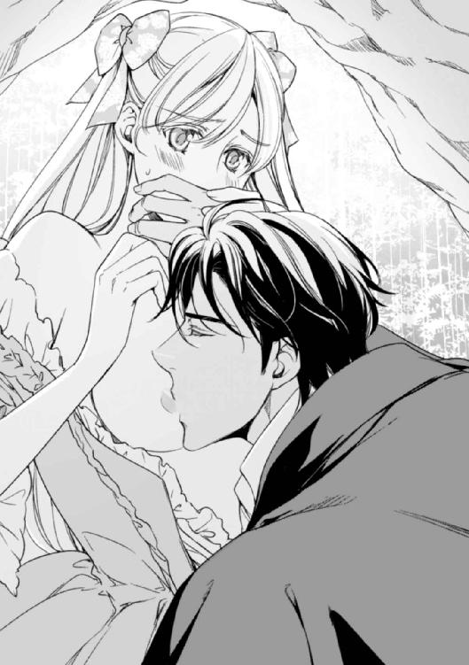
「ラシード！ ジャスミン！」
アレックスの声が、徐々に二人がいる岩の方へ近づいてくる。
ジャスミンの右の乳房は、もうすっかりラシードの愛撫に蕩けて、まだ柔らかかった乳首は、彼の口の中で快楽を知って固く実を結んだ。
まるで夢のようなひとときが、岩陰の中で繰り広げられている。だけど、それも長くは続かなかった。
「ジャスミン！ ラシード！ どこだ？」
アレックスの声が岩の上まで来た時、ラシードはジャスミンのドレスを素早く整え、もう一度唇にキスを落としてから、叫ぶアレックスの声に応えた。
ずぶ濡れになって帰りついたジャスミンの部屋には、熱いお湯を張った容器が待ち構えていた。
手伝うと言ってくれたジェーンを部屋から追い出し、ジャスミンは、一人でお湯に浸かりながら視線の先にある指輪を見つめている。
それは、いつもラシードの右の薬指にはめられていたもので、白金を台におよそ二センチもある真珠がはめ込んであるものだ。周りにはダイヤの粒が均一にちりばめられ、いかにも品がよく厳かな歴史を感じさせる。
その指輪は、ジャスミンがびしょびしょになったドレスを脱ぐ時に彼女自身が見つけた。ふと胸に違和感を感じて、ドレスの胸元をくつろげてみると、あろうことか右の胸の先に、ラシードの真珠の指輪がきっちりとはめられていたのだ。
〝いったいどうして？ 彼の指輪がこんなところに......〟
まさか指輪が勝手にドレスの中に入るはずもないから、ラシードが故意にそうしたとしか考えられない。きっと、胸に愛撫を受けた時に嵌めてくれたものに違いなかった。
〝それにしても、なぜ......？〟
彼がここへ来てしばらくして、ソーンフォード夫人が、彼の指輪に気付いた。彼女から質問を受けたラシードは、それが父王から賜った先祖代々受け継いだ大切な指輪だと言っていたのに。
「んッ......！」
戸惑いながら指輪を指先でつまむと、思わず引きつったような声が零れた。それは、柔らかな乳暈にぴったりとはまって、まるでラシードがくれたキスのように執拗にジャスミンの胸の先に吸い付いているみたいだ。
軽く捻り、ようやく指輪が外れる。その拍子に、甘えた子猫のような声が零れて、慌てて掌で口元を押さえた。すっかり敏感になってしまっている身体に、わざと冷たい水を浴びせかけて落ち着きを取り戻そうと躍起になる。
だけど、どうやっても胸の鼓動は収まらないし、鏡を見れば頬を赤くしてやたら瞬きをしている自分がいる。
「どうしよう......、こんな顔じゃみんなの前に出られないわ」
それ以前に、恥ずかしくてラシードと顔を合わせるどころではない。できることなら逃げ出してしまいたいくらい！ あんなことが、自分の身に起きるなんて。
頭の中に、また裸で抱き合ってキスをする男女の挿絵が思い浮かんだ。
〝ううん、びしょ濡れだったけど、裸じゃなかった。だけど、胸の先にキスをされた......。あれはどういうこと？〟
唇へのキスはわかる。でも、胸の先へのキスは？ 母親のお乳を飲む赤ん坊みたいに、男の人が、女の人の胸を吸うことがあるの？ そして、それは許されることなの？
わからない......。こんなの、本に書いてなかった......。だけど、決して嫌じゃなかった。それどころか、もっとして欲しいって......あぁ、いったいどうしたらいいの？
誰かに聞きたいけど、まさか両親に聞くわけにもいかない。以前、従姉のサラがちょっとだけ教えると言って説明してくれた〝男女の愛の行為〟は、手を繋ぐことから始まり、キスをして、いきなり結婚、出産に繋がると言っていた。でも、どうやら重要なものがすっかり抜け落ちているみたいだ......。
きっと、裸で抱き合う男女の挿絵がそのヒントだ。だけど誰にも確認できない。
結局その日の夜は、頭が痛いといって夕食を部屋でとり、心配してやってくるエレインやアレックスにそっとしておいてくれと言って、ことごとく追い返してしまった。
「おお怖い！ わが妹殿は、なぜだろう！ えらくお怒りであらせられる！」
アレックスが、大袈裟に言うのが聞こえてくる。それで、余計部屋の外に出にくくなり、結局そのまま一歩も外へ出ることなく夜を迎えてしまった。
そして、今──。
もう誰もが寝静まっているであろう夜中に、ジャスミンの部屋のドアを軽くノックする音が聞こえてきた。眠れずにいた彼女は、すぐにそれに気がついて、音を立てないようにドアの前に走っていく。
「ジャスミン？」
〝ラシード......！〟
ドアにそっと耳を寄せて、部屋の外の様子を伺ってみる。分厚いドアの向こうで、ラシードはどんな顔をしているのだろう？ 彼に会いたい。もう一度キスをして、胸の先に嵌めてあった指輪のことを尋ねたい──。
「ジャスミン......」
また彼の声が聞こえてくる。
〝どうしよう？ ドアを開ける？ でも、もう夜中だし、こんな時間に部屋の前で男性と話したなんてわかったら、お母様にしかられてしまうわ。そうしたら、ますますラシードと話しにくくなるかも......。それに、そろそろジェーンが水を飲みに起きてくる頃だわ〟
汗っかきの彼女は、いつもこの時間になると目を覚まし、のどが渇くといって水を求め、キッチンに向かう。
「ジャスミン、僕だ──」
もう一度呼ばれた。
こんなことをしていたら、絶対にジェーンに見つかる。そう思ったジャスミンは、ドアの隙間に向かってごく小さな声で話しかけた。
「ラシード。部屋に戻って。お願いだから行ってちょうだい......、今は話せないわ。無理なの」
ちょっとそっけなさ過ぎるとも思ったけど、毎晩のようにジャスミンの部屋の前を通るジェーンに見咎められるのは、避けた方がいいに決まっている。
「行って！ お願いだから......！」
もう一度言うと、ジャスミンは急いできびすを返しベッドまで走った。
ぱたぱたという足音が、部屋の外にまで聞こえたかもしれない。
〝明日話そう......。どのみち、今夜はだめだわ。だって、髪の毛も梳いてないし、寝乱れてとてもじゃないけどラシードの前に出られるような状態じゃないわ！〟
それからしばらくの間息を潜めていると、ドアの下から一通の手紙が差し込まれるのが見えた。
慌ててドアに駆け寄り、その手紙を拾い上げる。急いで封を開け、中に入っている便箋の文字に目を通した。
それは、思ったとおりジャスミンに宛てたラシードからの手紙だった。
そこには、昼間岩の下で自分がした所業を詫びる言葉と、よければ指輪はそのまま持っていて欲しいという旨の文章が書いてあった。
「指輪を私に......」
ジャスミンは、掌に乗せた指輪に、そっと唇をつけた。
〝彼の大切な指輪......。それを、私に？ ああ、ラシード......。できることなら、今すぐにでもあなたと話したい！〟
そんな気持ちを、指輪を愛でることでなんとか落ち着かせて、ジャスミンは幸せな心持ちでようやくベッドに入り横になった。
窓の外には、ちょうど半分の月がぽっかり浮かんでいる。その時の彼女は、二人の間に起きたできごとには、まだ続きがあると信じて疑わなかった。
明日になれば、また自分とラシードの関係が続いていく。そう思いながら眠りについた。彼女は、たった今起きているすれ違いが、この先の二人の人生を大きく左右するものだとは、気付いてもいなかったのだ。
次の日の朝、ジャスミンはようやく部屋から出る勇気を得た。顔を洗い、丁寧に髪の毛を梳いて、いざ朝食の席についてみてみると、ラシードがいない。
「アレックス、ラシードは？ まだ起きてこないの？」
「彼なら世が明ける前にここを出て国に向けて出発した。昨夜遅く、急を知らせる手紙が届いたんだ」
すでに席に着いていたアレックスは、部屋に飛び込んできたジャスミンを見て神妙な面持ちで口を開いた。
「彼の父上が倒れたらしい。以前から少し体調に不安はあったようだけど、それが急に悪化したみたいだ。なんとも急なことで......お前にくれぐれもよろしくと言っていたよ。ジャスミン、昨日嵐にあった時、彼となにかあったのか？」
「えっ？ ......いいえ、なにも。なにもないわ。どうして？」
「いや、それならいいんだ。別に、なんとなく聞いてみただけだよ」
「そう......」
アレックスは、少し首を傾げたものの、それ以上なにも言わず黙っている。
なにもない──そう口にしてしまったことで、ジャスミンは、自分とラシードとの間に起こったできごとを、なかったものにしてしまったような気がした。
そして、その時に感じた不安は、すぐに現実のものとなって彼女を打ちのめした。
それ以来、ラシードからはなんの連絡も来ない。アレックスに何気なく聞いてみても、彼が大学を辞めて正式に国に帰ってしまったこと以外、なにも情報は得られなかった。
ジャスミンの元に残されたのは、彼がくれた真珠の指輪と、二人だけが知るキスと愛撫の想い出。そして、募っていくばかりのラシードへの想い。
──それ以来、ラシードとは会っていない。
あの時、彼はなぜ黙って行ってしまったのか。突然の手紙に、急いで国に帰らなければならなくなり、そのままイギリスを去ってしまうとは、夢にも思わなかった。
なぜ彼は、あの時のことを手紙で謝ったりしたのだろう？
どうしてあれから一度も連絡をくれようとしなかったのだろう？
アレックス宛に何度か手紙が来ていたのは知っているけど、アレックスが特になにも言ってこなかったのは、手紙に自分に伝えるようなことがなにも書かれていなかったからだろうか。
我慢できず、アレックスに思い切ってラシードのことを聞こうとも思ったけど、逆に詮索されかねないと思い、結局聞かずに終わってしまった。
いずれにしろ、今となってはもう遠い昔のこと。
だけど、ジャスミンの心の底には、いまだラシードへの想いが澱となってはっきりと残っている。そしてそれは、いつまで経ってもそこにあり、消えようとしない。彼女のドレスの胸元にある真珠の指輪同様、普段外に出ることはないけど、常にそこにありジャスミンに忘れさせないでいるのだ。
◇ ◇ ◇
「なんですって？ ジャスミンったら、本気でそんなことを言っているの？」
エレインが、午後のお茶の席でめずらしく素っ頓狂な声を上げた。
「ええ、本気よ。いろいろと話さなきゃならないことも山積みだし、なによりアレックスのことが心配なの。彼が無事かどうか知りたいのよ。アレックスがどこでなにをしているのか知りたい。もういてもたってもいられないの」
ジャスミンがバーニーから結婚の申し込みをされた一週間後。三人は、居間で焼きたてのスコーンを食べながら今後について話し合いをしていた。
そこで、ジャスミンは前から考えていた計画を二人に話した。
彼女の計画というのは、砂漠の砂が吹き荒れる大陸にたった一人でアレックスを探しに行くというもの。
「平気よ。馬車を乗り継ぎながらスペインの港に着くでしょ、そうしたら船に乗ってアフリカ大陸へ渡ればいいのよ」
「ジャスミンったら......。簡単に言うけど、それがどんなに大変かわかっているでしょう？」
アレックスたちの今回の探検の目的地は、アフリカ大陸北部にあるアジャスタ国だ。
その国の砂漠には、いまだ発掘されていない遺跡があるといわれ、アレックスたちはその発見を目標にしていた。およそ１年にわたる探検も終盤を迎え、幾多の収穫を携えてそろそろ帰国しようという時に、アレックスは二日間だけ単独行動すると言い出し、仲間はその間宿で休息を取って待つことになった。だが、二日経ち、三日過ぎてもアレックスは帰ってこず、とうとう捜索隊を出したが、それでも彼は見つからない。
アジャスタ国はイギリスとは国交はないものの、その隣国であるカビール国を通れば入国することができる。
「行き先は、カビール国──つまり、アレックスの友達のラシードがいる国よ。私、行く前にラシードに手紙を書くわ。そして、アレックスがいなくなった経緯を説明して、彼に捜索の協力をお願いできないか聞いてみようと思っているの」
「まあ......！ もうそこまで考えているのね」
エレインは、姉のありあまる行動力と好奇心の強さには、日頃から感心している。だけど、今回ばかりは──。普通に男性が渡航するのだって一騒動なのに、まだ若い独身女性が遠いアフリカの地まで無事に辿り着ける保障がどこにあるというのだろうか。
「アレックスのことは私だって心配だわ。できれば探しに行きたいとも思う。でも、あんな遠い国にあなた一人で行くだなんて......！」
一度言い出したら、ジャスミンは納得の行く譲歩案が出ない限り、考えを引っ込めることはしない。それを知っているエレインは、心配のあまり瞳を潤ませつつも、言葉少なになってしまう。
ジャスミンは、視線をバーニーに移すと、思い切ったように口を開いた。
「バーニー、あなたとの結婚のことだけど、返事はもう少し待ってもらってもかまわないかしら。せめて、アレックスのことが解決するまで......。正直、彼が無事見つかるまで、その他のことは落ち着いて考えられそうもないのよ。それじゃあ駄目かしら......」
ジャスミンはすまなさそうな顔でバーニーを見た。彼は、温かな微笑みを浮かべながら頷き、彼女の気持ちに理解を示した。
「もちろん、いいよ。この件に関しては、じっくり考えた上で返事をくれればいい。だけど、今の君の話を聞いて一つ提案があるんだ。旅に出ると言うのなら、僕もそれに同行させて欲しい。行き先に知り合いがいるとはいえ、やはり遠い異国の地に女性一人で向かうのは危険すぎる」
彼の言葉に、エレインはほっとしたような表情を浮かべた。
「あぁ、ジャスミン、それがいいわ。男性がいればなにかと心強いし、一人よりずっと安全だわ」
それはそうだ。結婚のことはさておき、移動や捜索をするに当たって、男性が一人いればなにかと心強い。エレインも、バーニーが同行するなら、ジャスミンの計画にも賛成できるという。
「ありがとう、バーニー。あなたって本当にいい人だわ......でも、本当にいいの？」
「もちろん。言ったろう？ パトリックの家族である君たちは、僕にとっても大切な人だ」
「バーニー......。どうお礼を言ったらいいかわからないわ。本当にありがとう。あなたがいてくれて本当によかったと思うわ。それじゃあ、バーニー。改めてお願いするわ。私と一緒にアレックスを捜すためにアフリカに行ってくださる？」
「むろん、そうさせてもらうよ。だが、結婚前の男女が二人きりで旅をするというのも世間体が悪い。ここは一応婚約者として、いろいろな旅の手配をしようと思うけどどうだろう？」
「そうね、その方がいいかも」
エレインもそれに同意し、ジャスミンも異論はなかった。
それに、今回の旅で、ジャスミンがもう一つの目的としていることのためにも、それはきっと都合のいいことになるはず──。
お茶が終わり、姉妹二人だけになった居間で、ジャスミンはエレインの手を握り、妹の瞳を見つめた。
「ごめんなさい。いろいろと一人で決めてしまって」
「いいの。それがジャスミンでしょ。あなたの行動力と決断力にはいつも感心してたんだもの。でも、バーニーとの結婚の件は、くれぐれもよく考えてちょうだい。お願い......」
エレインは、思いつめたような瞳でジャスミンを見つめた。
「わかってるわ。旅の途中でも、よく考えてみるわ。どうしたら一番いいのか、どんな選択をすればいいのか──」
エレインが、なにを言いたいのか十分わかっている。彼女の優しい気持ちがわかるからこそ、余計迷ってしまっているのだ。
〝バーニーはいい人だもの。あんな人と結婚すれば、きっと穏やかで幸せな結婚生活が待っているに違いないわ。だけど......〟
「とにかく、まずはアレックスをここに連れ帰ることよ。大丈夫。行くからには、なんとしてでもアレックスを見つけて連れて帰るわ」
「ええ、信じて待っているわ。ここのことは心配しないで。ジェーンもいるし、なにかあればすぐに駆けつけられるよう準備しておくから」
その後の話し合いで、ジャスミンが個人的にラシードに宛てて書くつもりだった手紙は、アレックスの捜索の協力を要請する正式な外交文書を添えて、国王としてのラシードに男爵であるバーニーが出すことになった。
七年前、彼が帰国して一年経った頃に、王である彼の父親が亡くなり、今はもうラシードがカビール国の王になっているのだ。
「お願いするわね、バーニー。くれぐれもよろしく、と......。ラシード陛下に書き添えてちょうだい」
「ああ、そうしよう。ラシード陛下も、君の名前を見て懐かしんでくれることだろう」
二人のいきさつをまるで知らない彼は、丸い顔に人のよさそうな微笑を浮かべる。
ラシード──いまだジャスミンの心に残り、名前を聞いただけで胸が高鳴り、身体が火照ってくる人。
初めて会ってから、もう八年も経っているのに、どうしてこうも心を揺さぶられるのだろう。
彼と会う前も会えなくなってからも、ジャスミンの前にはラシード以上に心揺さぶられる人は現れていない。
彼だけが、ジャスミンの胸の奥に潜んでいる。彼だけしかいない──。
だけど、もうそれも終わりにした方がいい。いや、終わりにするのだ。
アレックスを探しに行くにあたって、彼女がもう一つの目的にしているのは、ラシードに対する想いとの決別だった。
このままだと、いつまでたってもラシードのことが忘れられない。今回の大陸行きは、ちょうどいい機会だ。
もう一度ラシードに会い、気持ちのけりをつけてきっぱりと忘れてしまおう。
ラシードと過ごした日々は、今もジャスミンの記憶の中にはっきりと残っている。あの日胸に忍ばせていた彼からの手紙は、雨に濡れてぼろぼろになり、結局すべてだめになってしまっていた。
今ジャスミンの手元にあるのは、彼が残していった指輪と、ドアの下から差し込まれていた一通の手紙だけ。
それを、もう八年も大切に持ち続けていた。
いい加減、過去に囚われているのはやめにしよう。これだけの決心をしたのだから、なんとしてでも気持ちにけりをつけてイギリスに帰ってこよう。
バーニーがカビール国に手紙を出してからというもの、ジャスミンはラシードからの返事を一日千秋の思いで待ち続けた。
そして、およそ半月経ったある日、普段見掛けることのない黒塗りの馬車がお屋敷の前に到着して、ラシードからの返事と共にいくつかの荷物が届けられた。
ジャスミンとバーニーに宛てた手紙には、彼の国に行くまでに必要な準備はすべて手配済みであること、到着してからも彼が全面的に面倒をみることなどが書いてあった。
そして、ありがたいことに、もうすでにラシードの方で独自にアレックスの捜索を始めてくれているという。ジャスミンは知らなかったが、アレックスは、アフリカに行く前と、そこで単独行動に出る前、ラシードに連絡をとっていたみたいだ。
手紙に見入るジャスミンの肩を、エレインの掌が優しく包んだ。
「よかったわね、ジャスミン！ なんにせよ、ラシードが後ろ盾になってくれれば、こんなに心強いことはないわね」
「ええ、そうね。ラシードが協力をしてくれるんですもの。きっと大丈夫。必ずアレックスを見つけて連れて帰るわ」
彼の名を口にした途端に、ジャスミンの右胸の先がちくんと疼いた。それは、八年前の嵐の日以来、彼を思うたびに感じる甘く切ない痛みだった。
それから三日ほど経ち、準備を整えいざ出発しようという朝、バーニーがちょっとした不注意で階段を踏み外して腰を痛めてしまった。
結果、バーニーの同行は叶わなくなり、ジャスミンはたった一人で砂漠の国に向けて旅立つことになった。むろん二人とも大反対だったけれど、そんなことで渡航を諦めるような彼女ではない。
旅券はあるし、あとは出発するだけ。ジャスミンはどうにか二人を説得して、たった一人でアフリカに行く段取りを押し進めた。
「わかったわ。あなたが一度言い出したことを素直に引っ込めるとは思えないもの。でも約束して。必ず帰ってきて......！ これだけは約束して！ 手紙も書いてちょうだい。きっとよ。そうでなきゃ私、心配で倒れちゃうわ」
エレインの言葉にジャスミンはこくりと頷いて妹の身体にきつく腕を回した。
「ジャスミン、こんなことになってしまって本当に申し訳ない。せめて、これを持って行ってくれ。旅のお守りだよ。僕の代わりに、きっと君を守ってくれるだろう」
それはピンク色のコンク貝でできたカメオの髪飾りで、白とピンクの美しいグラデーションを利用して表面に女神アフロディーテの横顔が彫られている。
「実は、これは亡くなった妻の形見なんだ。生前、僕が彼女に贈った物でね。以前これを持っていたおかげで、大怪我を免れたことがあったんだ。その後も似たようなことがあって、それ以来これはお守りとして大事に持ち歩いてた。それを君に託すよ。どうか受け取ってくれ。僕が持っているより、よっぽど似合っているしね」
「ありがとう、バーニー。大切にするわね。きっとこれを持って無事に帰って来るわ」
ジャスミンは、バーニーと目を合わせ、力強く頷いて見せた。
「じゃあ、行くわね。エレイン、ジェーン、家のことはよろしくね。アレックスを連れて帰って来る、約束するわ。大丈夫、きっとなにもかも上手くいくわ」
そうだ。行くからには、絶対に目的を達成してやろう。
見送ってくれた三人に向けた言葉は、自分に課した目的を達成することへの誓いの言葉でもある。
イギリスを出て、フランスからスペインへと馬車で南下し、そこからアフリカ行きの船が出る港に到着して海峡を渡り、カビール国へと近づいていく。
出発してから、今日でもう一週間になる。目的の地まであともう一日。明日には、ラシードが生まれ育った砂漠の国に到着する。
〝目的は、第一にアレックスを見つけること。そして、第二に自分の中に残っているラシードへの想いをきちんと断ち切ること〟
もう一度、旅の目的をおさらいして、決意を新たにする。
〝断ち切ることが目的なのに、なんでこんなに胸が躍るの......。おかしいわよ、ジャスミン。この旅は、私にとって始まりではなく終わらせるための旅だということを忘れちゃ駄目だわ！〟
船は、まるで引き寄せられるように砂漠の国へと近づいていく。
〝断ち切るため。そして、忘れるため！〟
そうやって何度となく確認するのに、ジャスミンは、八年ぶりになるラシードとの再会に我知らず胸を躍らせてしまうのだった。
◇ ◇ ◇
デヴォン州からフランスに渡り、スペインの南端にある港から船に乗り込み、ようやく砂漠の国カビールに到着する。途中、驚くほど乗り心地のいい馬車や、最高のもてなしをしてくれる宿を利用することができたのは、きっとすべてを手配してくれたラシードのお陰だ。
徐々に近づいてくる灼熱の大陸を前にし、ジャスミンは船の上でえもいわれぬ高揚感を味わう。
見知らぬ人々に、まるで知らない土地。生まれてこの方、こんなにも長い間一人になったことはなかった。
船から下りた途端、熱く乾いたアフリカの大地の匂いがした。到着した港町は、思っていたよりもずっと拓けており、船を降りた正面には、レンガでできたいくつかの平屋建てと、馬やラクダが集まっている広い水場がある。
ラシードの手紙には、迎えの者をよこすと書いてあったけれど、今のところそれらしき人は見当たらない。待ち合わせ場所は、水場の左側にある建物の前。
カンドゥーラという白く長い民族衣装を着た男性たちが、港町を席巻している。頭には同じく白いゴトラという布を被り、黒く太い紐で固定している。
本の中でしか知らなかった民族衣装や、アラビア語を話す人々。
なにもかも目新しくて、ジャスミンは、初めて見る異文化にすっかり圧倒されてしまっている。
彼女自身も、既にアバヤという黒く全身を覆う女性用の民族衣装を身につけ、頭にも黒のニカブというヴェールを被り、目元以外の頭部全体を隠している。
初めての地に、ジャスミンはおそるおそる辺りに視線を巡らせ、思ったよりも緑が多いことに驚く。
背の高い椰子の木が立ち並ぶ道沿いには、ラクダが列をなして歩いている。空が、信じられないほど青くて、建物の端に何匹か猫が佇んでいる。
時折吹いてくる砂交じりの風に、ここが異国の地であることを改めて感じていた。
あいかわらず迎えの者は来ない。それに、この格好ではあちらから探してもらおうにも、誰が誰だか見分けがつかないんじゃないだろうか。肌の露出を極限まで隠すアラブの女性たちは、いったいどこを見て個人を識別するのだろう？
「どうしよう。このままここで待っていればいいのかしら。それとも......」
不安からあたりをきょろきょろと見回していると、彼女の瞳の色と少しだけ見える肌の白さに気付いたのか、何人かの男が興味深そうにこちらを伺っている。だけど、目が合う寸前にそっぽを向いてしまい、誰一人近づいてくる気配すらない。それも当然のこと。
この国では、男女が親しく話したりしないし、むやみに視線すら交わすことはないのだ。
『君の国とは文化がまるで違う』
ラシードからの手紙にもあったけれど、ジャスミン自身砂漠の国については、書斎にあった本を読んで多少は理解しているつもりだ。
それでなくても、探検家であるアレックスから繰り返し聞かされたことがある──文化が違う国に乗り込んで行くなら、その国に関する知識を始め、それ相応の準備をしなければ無謀だし、失礼にあたると。
「だけど、目を合わさないで、いったいどうやって迎えの人を見つけろっていうの？」
顔を覆うヴェールを少しずらして、できるだけ控えめにあたりを伺ってみる。だけど、周りに見える男性はすべて同じ格好をしているし、誰一人異国から来た女性を探しているような人は見当たらない。
仕方なく少し辺りをうろついてみようと歩き出すと、すぐに被っていたヴェールの端がなにかに引っかかってしまって、隠していた金色の髪がすっかりあらわになってしまった。
振り返ると、そこには一人の下卑た男性の顔。彼の手には、ジャスミンのヴェールの端が握られている。
「あっ！」
思わず上げてしまった叫び声に、近くにいた人々が一斉に振り返った。向けられる視線は、どれも驚きの色を浮かべており、すぐに知らん顔を決め込む人がほとんどだったが、中にはあからさまに見つめてくる男性もいる。
急いでその場を離れ、少し高い位置にある岩場を目指し歩き出した。
それを追うように、何人かの男たちがジャスミンの後に続く。それ以外の男たちも、彼女の方を興味津々といった目で伺っている様子だ。アバヤの裾が足元に絡むし、見知らぬ国のことでどうしていいかわからず、頭が混乱してしまう。
〝とにかく、どこか人のいないところまで逃げた方がいいわ！〟
そんな不安げな様子が外に漏れてしまっていたのか、気がつけば、カンドゥーラではない色鮮やかな衣装を着た男性たちに取り囲まれてしまっていた。急いで逃げようと背を向けた途端に、髭面の大男に痛いほどの力で腕を掴まれ、大声で叫んだ。
「助けて！ ナジュダ（助けて）！ 誰か！」
英語とアラビア語で叫びながら、アバヤの裾を膝下の位置にまで持ち上げて走り出した。
すぐ後ろを、何人かの男たちがなにかしらわめきながら追いかけてくる。なにを言っているのかわからないし、振り返ってしまえば、それだけ逃げるのが遅くなってしまう。
そう思い、ただ必死になって走った。息が苦しくて、もう叫ぶこともできない。
埃っぽい空気が、喉の奥にとどまって咳き込みそう。
〝せっかくここまで来たのに......！ もう駄目かも......！〟
そんな考えが頭をかすめて、走る足元からついに力が抜けてしまう。
立ち止まった途端、さっきヴェールを取られた時に弛んでしまったのか、前髪を留めていたカメオの髪飾りが外れ、目の前をずり落ちていくのが目に入った。
「あっ！」
声を上げ、急いでそれを受け止めたその時、少し先の頭上から風を切るような、男の澄んだ叫び声が聞こえてきた。
「ジャスミン！ 伏せるんだ！」
突然聞こえてきたその声に、咄嗟に反応する。
頭を抱え、その場にしゃがみ込むと、今まで迫ってきていた足音が消え去り、代わりになにか重いものが地面に叩きつけられるような音が聞こえてきた。男たちの怒声と、それからすぐ後に訪れた静寂。
〝なにが起こったの？ それに、さっき聞こえた声って......〟
そのまま動かずにじっとしていると、背後から砂を踏む重々しい足音が近づいてきた。おそるおそる顔を上げると、そこには逃げていく男たちの後姿、そしてすぐ近くまで迫っている白く長い四本足。
「ラクダ......。白い、ラクダ......」
呆けたように、目に入ったものの名を口にすると、ラクダの上の方から、綺麗なイギリス英語が聞こえてきた。
「ようこそわが国へ。来た早々災難だったな」
よく通る、はりのある声。
「えっ？」
記憶に間違いがなければ、それは八年ぶりに聞くラシードの声だ！
咄嗟に上を向くと、自分を見る真っ直ぐな視線とぶつかる。
それは、八年前の夏以来、幾度となく夢に見た暗褐色の瞳。
「ラシード！」
まぎれもなく彼だ！ 以前より格段に逞しくなっているけど、ラシードに間違いない。肌の色が深くなったような気がするのは、この国の焼けるような太陽のせいだろうか。
ジャスミンの瞳は、瞬きをすることも忘れたように、ただ彼をじっと見つめている。
「今日は港に寄港する船がいつもより多いようだ。すまなかった、迎えの者が上手く君を見つけられなかったようだな」
懐かしさに胸がつまり、目の奥がジンと熱くなって涙が零れそうになった。
〝あぁ......、ラシード！ 間違いなく、彼だ！〟
見つめ合う二人の視線が交錯して、ジャスミンの耳にはもう彼の声以外聞こえなくなる。
まばゆいほど白い民族の衣装を身につけ、まるで太陽を背負うようにラクダの上からジャスミンを見つめている。
その圧倒的な存在感は、少なくとも八年前にはなかったもの。
王であるという事実が、彼をここまで自信に満ちた物腰にさせているのか。それとも、彼のもともとの資質なのか。どちらにせよ、彼がすでに王としての品格を兼ね備えていることは確かだ。
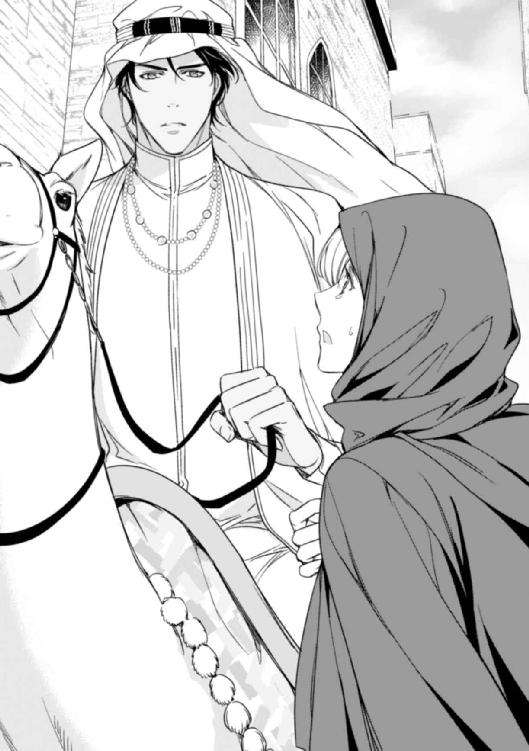
「怪我はないか？」
そう問われてジャスミンは、はっと我に返り声を上げた。
「平気よ！ ......ありがとう。ラシード......その......手紙の返事をありがとう。アレックスのことも、なんとお礼を言っていいか......」
ゆっくりと脚を折ったラクダから下りると、ラシードは背後にいた従者らしい男性になにか合図をした。
「アレックスは僕の大切な友達だ。当然のことをしているまで。さて、そんなことより、君の婚約者はどこにいるんだ？」
落ち着いた、淡々とした彼の声音。かつて知っていた彼の声に違いないけど、まるでそこから感情を取り除いてしまったように平坦に聞こえる。
「婚約者？ ......あぁ、バーニーは、ここに来る直前に腰を痛めちゃったの。起き上がるのも人の手を借りないとできないほど。だから、ここへは私一人で来たのよ」
「なんだって？」
それを聞いた途端、ラシードはあからさまに眉を顰めた。
「一人で？ 女性一人で、ここまで旅をしてきたと言うのか？ 馬鹿な！ 無謀にもほどがある」
怒声とまではいかないが、ラシードはそれに近いほど声を荒げた。
「そんな事情があるなら、大人しく国で待っていればいいだろう？ アレックスの捜索ならもう始めていると書き送ったはずだ。仕方なく必要なものを一式送ったが、まさか一人でやってくるとは！ なぜそうなったと連絡を寄越さなかった？」
八年ぶりに会ったというのに、いきなり叱責を食らっている。いくらなんでもカチンときて、つい反論の言葉を口にしてしまった。
「だって、いてもたってもいられなくなったんですもの！」
まるで子供みたいな言い訳。少しも理論的じゃない上に、幼稚で感情的。まるで、昔アレックスと言い合いをしていた頃の自分みたいだとジャスミンは思った。
「それはわかるが、君がここに来てなんになるんだ？ 土地勘もない、現地の言葉も話せない。正直まったく役に立たないと思うが」
ラシードの辛らつな言葉に、ジャスミンは少なからず面食らってしまった。
八年前、あんなに朗らかで優しかった彼は、いったいどこにいったのだろう？ 八年の歳月が、彼を変えてしまったとでもいうのだろうか。今の彼は、ジャスミンが知るラシードとはあまりにもかけ離れている。
「アレックスとは、ずっと連絡を取り合っていたの？」
質問に答えないまま、逆に質問を投げかけてみる。
「ごくたまに。お互い機会があれば会いたいと思っていたんだが、なかなかスケジュールが合わなくてね。今回の探検を機に、今度こそ会えると思っていたんだが──」
アレックスは、探検の途中一度単独で行動して、彼はその間にラシードに会うつもりだったらしい。だが、結局彼は約束した場所に来ず、その後誰とも連絡が取れないまま行方不明になってしまった。
今も捜索は続けているものの、残念ながら今のところ目新しい情報は入ってきていない様子だ。
話がアレックスのことに移ると、ジャスミンは途端に顔を曇らせ、唇を噛んで黙り込んだ。
「アレックスは強い男だ。僕は、彼が無事でいると信じている」
ラシードの落ち着いた低い声は、なぜかジャスミンを安心させる作用があるみたいだ。それまでやたらと突っかかっていた彼女だったけれど、彼の力強い言葉のおかげで、急に気持ちが楽になったような気がした。
「ええ。私も信じているわ」
短くそう答える彼女に、ラシードは初めて満足げに頷き、持っていた手綱をぐっと握りなおした。
「だからこそ、君はそれを信じてイギリスで待っているべきだった。まぁ来てしまったものは仕方がない。準備ができ次第、宮殿に向けて出発する。なにもなければ、明日の夜には到着する予定だ」
「あ、はいっ」
ふいを突かれたからか、自分でも意外なほど素直な返事が唇から飛び出した。それを見て、ラシードが鷹揚に顔を背け、馬を前に進め始めた。
相手に有無を言わさぬ威厳が、ラシードの全身から感じられる。彼は、もうジャスミンが知るかつての彼ではない。カビール国王であり、今回ジャスミンを迎えたのは、あくまでも彼女が大切な友の身内だから。
〝いいわ。こうなったら、間違っても彼に迷惑を掛けないよう気をつけよう。ここは彼の国よ。本来の目的を達成するためにも、大人しくしたがっていた方がよさそう......〟
たとえ八年ぶりの再会に対して、にべもない態度をとられても、だ。
それきりなにか従者たちと話していた彼は、連れてこられた見事な白と栗毛の二頭の馬のうち、栗毛馬の方をジャスミンに指し示した。
「これに乗るといい。途中の砂漠にキャンプを用意してある。夜までにそこに行き、砂漠で一晩を過ごそう。さあ、乗って」
促されるまま馬に跨り、白馬に乗るラシードの方を振り返った。だけど、彼はもうすでにジャスミンとは反対の方を向いて、さっきとは違う従者と話している。
呆れるほどの冷たい態度だ。きっと彼は、嵐の日にあったことなんか綺麗さっぱり忘れているのだろう──。
〝この分だと、すぐにでもラシードへの想いなんか吹っ切れてしまうかもしれない。冷たいくらいが丁度いいわ。そもそも彼は王であり、シークなのよ。あまりなれなれしく話さないほうがいいかも......従者たちが見ているし、兄の友達とはいえ元々身分が違いすぎる人なんだもの〟
たとえ、かつて彼からのキスと愛撫を受けた仲であっても──。
そんな考えが頭に思い浮かんで、慌てて自分を諌める。
〝余計なことを考えないことね、ジャスミン！ 彼は忘れているわ......。万が一覚えているとしても、今の彼の態度からして、忘れたいと思っているに違いないわ〟
嵐の日のことは、若かりし頃のちょっとした戯れ。そう考えるのが一番自然だし、そうだとすれば、再会してからの彼のよそよそしさも理解できる。
なんにせよ、彼は手紙一枚を受け取っただけで旅の準備をすべてやってくれたし、文句をいいながらもこうしてちゃんと迎えにも来てくれているのだ。
〝それにしても綺麗な馬......とても大人しいし、被毛が絹のように柔らかいわ〟
気を取り直して栗色の首を撫でると、馬は嬉しそうに軽くいなないて彼女の掌に鼻面を擦り付けて応えた。
「いい子ね。今日はよろしく。えっと、名前は......」
「ザハラだ」
聞こえてきたラシードの声に振り向いてみると、彼は目元から下をゴトラと同じ白い布ですっかり覆ってしまっていた。
「──ザハラ。いい名前だわ。アラビア語で〝花〟という意味ね」
それを聞いたラシードが、少し驚いたような表情を浮かべた。
「アラビア語がわかるのか？」
「アレックスが買い込んでいた本で勉強したの。一応話すこともできるけど、実際に使い物になるかどうかは、これから試してみなければわからないわ」
ラシードの顔に、一瞬面白がっているような表情が浮かんだのが布越しでもわかった。だけど、すぐに視線を前に向け、そっけなくつぶやく。
「それは評価に値する行為だ。今後いくらでも機会はあるだろうから、存分に試してみるといい。では、出発しよう」
周りに合図すると、ラシードは馬を前に進めた。
見れば、アシムと呼ばれた従者の他、二人の男だけが馬に乗り、その他十数人いる男たちはみなそれぞれラクダの背に乗り込むようだ。
「ラクダより馬の方が速いの？」
「いや、砂漠では、むしろラクダの方が速い。だが、ああ見えてラクダは気性が荒い。慣れた者でないと乗りこなすことが難しいんだ」
「そうなの」
何気ない会話に、ふとかつてのラシードの面影が垣間見えて、そう言えば彼は動物好きだったことを思い出した。
「私ではラクダは乗りこなせない？」
「そんなことはない、慣れれば大丈夫だろう。要は、ラクダとのコミュニケーションが上手くいくかどうかだ」
〝やっぱり、動物のこととなると話し方が違うわ〟
ラシードの反応を見て、ジャスミンは何気なく顔を背けて、口元に笑みを浮かべた。
八年前の夏、彼はソーンフォード邸の馬小屋にしょっちゅう顔を出していたし、野ウサギに至っては撒き散らしたパンくずのせいもあってか、最終的にひどく懐かれて邸宅まで追って来られたくらいだ。
港の喧騒を避け、少し馬を走らせると、目の前に一面の砂漠が広がる。思い描いていたよりも赤い色合いの砂が遥か遠くまで続いて、まだところどころに草が生えている場所も見受けられる。
「これが砂漠......。すごい......素晴らしく綺麗ね。そして、とても怖いわ......」
あたり一面に広がる風紋と、その向こうに見える果てしない砂山。アレックスから聞いたり、本で読んだ知識から想像するしかなかった風景が目の前に広がっている。
「ああ、確かに」
乗っている馬の背を通して、砂の上を歩く独特の感触が伝わってくる。
「僕たちは、砂漠と共に生き日々暮らしている。君たちが大地を慕うのと同じように、僕たちは砂漠を愛している。見てのとおりとても美しい面もあるが、敵に回すと恐ろしく過酷だ」
彼の低く響く声が、砂漠の奥深さを物語っている。
一国の王である彼は、きっとこの国や土地、人々に対して、並々ならぬ愛情を持っている。
その愛は、彼の命ある限り涸れることはないのだろう。彼にとって、愛とはなんだろう？
以前聞いたように、決められた人と結婚して、子をなすことも王としての役割であり義務なのだろうか。
いろいろと質問を投げかけてみたいと思うけれど、結局は口にすることなく黙って馬を前に進ませる。
真っ白な馬に乗り、ゴトラを風になびかせながら前を行くラシードを見ていると、思わずうっとりと見惚れてしまいそうだ。
〝駄目よ、ジャスミン。やっぱり彼とはこちらからも距離を置いていた方がいいわ。そうでなきゃ、また彼に惹かれてしまうかも知れない......〟
彼は、カビール国の王であり、シークだ。彼の心は、この地にある。いくら努力しても、イギリスに持ち帰ることはできない。決して実ることのない想いは、砂漠の砂の上に捨て去ってしまうのが一番いい。
「風が出てきた。砂が入らないよう、口元はしっかりと覆っておいた方がいい」
それだけ言うと、ラシードは早々に砂漠に向けて馬を走らせ、ジャスミンをその場に置いていってしまう。
「あ、待って......！」
慌てて手綱を引き、前を行くラシードの後を追った。
少し前を行くラシードを追う形で、もうかれこれ一時間近く馬を走らせている。ふと後ろを見ると、後に続いていたはずの従者たちは、そう遠くではないけれど、少し離れた後方を走っている。
〝二人きりにしようと、気を使ってくれているのかしら？ ......それにしてもすごい風だわ〟
馬は無理のない程度に緩く走っている。風向きの具合で、ラシードの馬が上げる砂は被らなくてすんでいるけど、なにせ熱い。喉も渇いてきたし、着いたばかりなのにいろいろありすぎて混乱する。
〝少しくらい話しかけてくれてもいいのに......。これじゃあ、いくらなんでも気詰まりだわ〟
そんなジャスミンの気持ちも伝わらないまま、馬は砂の地を走り続ける。いつの間にか、点々とあった草地もなくなり、あたりは赤茶けた砂と見たこともないほど青い空しか見えなくなっている。
さすがにもう限界。
ジャスミンがそう思ったとき、突然前を行くラシードの馬が速度を緩めた。
「馬を休めよう。水筒は馬の鞍についているから、それを飲むといい。キャンプは、あと一時間も走れば見えてくるはずだ」
「ありがとう......」
やっと休める！ ふと後方を見ると、さっきまで見えていたラクダたちは砂の丘の向こうに消えてしまっていた。一国の王なのに、警備は？ そう思ったけれど、前方は見渡す限りの平らな砂漠で、見えるものといったら乾いた砂しかない。
思えば、港からの道のりはただ夢中で馬を走らせ、周りをゆっくりと眺める余裕なんかなかった。
改めて辺りの風景に目を向けると、目の前に広がる砂漠の風景に圧倒されてしまう。
〝ここが砂漠の国。ラシードが生まれ育った場所なんだわ〟
馬から砂の上に降り立ってみると、動く砂に足元がふらふらした。馬に寄りかかって体勢を整えていると、栗毛馬のザハラが、長い首を折ってこちらを向く。
「ごくろうさま。お水が欲しいのね。待ってて、今あげるわ」
なにかの革でできた水筒を開け、掌で水を受けて馬の口につけてやった。
「なにをしている？ 水は貴重だ。馬の水は別に用意してあるから、水筒の水は君が飲むんだ」
ひらりと白馬から降り立ったラシードは、大きな革製の袋を取り出し、木彫りの椀に水を入れて馬に与え始めた。
水筒で喉を潤しながら見ていると、彼はなにかしら白馬に話しかけ、長い鼻面を掌で撫でさすっている。
その顔が、思わず見入ってしまうほど優しい。目の前にいる彼は、かつてジャスミンにも見せてくれたような、暖かで心が浮き立ってしまうような笑顔を浮かべている。
〝ラシード......。なんて素敵な顔で笑うの〟
再会してからの素っ気なさは、八年前の彼とはまるで別人のようだ。だけど、こうして柔らかな表情をしている彼の顔は、ジャスミンが知っているかつてのラシードとなんら変わりはない。
思い切って、話しかけてみたい気もする。
だけど、実のところ再会してからというもの、胸がどきどきして仕方がないのだ。
対面して早々にちょっとした言い合いをしてしまったのは、そうでもしなければ再会の嬉しさが溢れそうになってしまったせいでもある。
表向きは平静を装っているけど、ややもすれば心の動揺が顔に出てしまいそうになる。
冷たくされたほうがいいだの、こちらからも距離を置いた方がいいだのと、慌しく考えをめぐらせているのは、彼に対する気持ちがまだたっぷりと残っている証拠に他ならない。
余計なことを考えずにさっさとけりをつけてしまえばいいのはわかっている。でも、どうやって──？
ザハラに水をやりにきたラシードを、横目でそっと伺ってみる。
ラシードは乾いた風に真っ白なゴトラをはためかせて、じっと馬が水を飲む様を見つめている。
以前よりずっと逞しさが増した体躯は、ゆったりとしたカンドゥーラを身に着けていても、筋肉の盛り上がりがはっきりとわかるほどだ。
想像していた以上に魅力的になっているし、見つめているだけでなぜか身体の奥がむずむずしてくる。
〝馬鹿ね！ こんな砂漠の真ん中でいったいなにを考えているの......！〟
嵐の日に刻まれた記憶が、右胸の先に蘇った。あれ以来キスはもちろんのこと、男性に肌を許したことなど一度もない。
ラシードの視線が、ふいにジャスミンの瞳を捉らえた。
彼の目に射抜かれたようになった彼女は、でくの坊のように身動きが取れなくなる。
〝なんて強い目をしてるの......まるで鷹。以前はただ精悍で美しい鷹だったけど、今は獲物を狙う獰猛な鷹だわ......〟
見つめられたことで動転したのか、ジャスミンは流れ込んでくるぬるい水にむせて、激しく咳き込んでしまった。
「ごほっ！ ぐ......ごほごほっ......！」
すぐそばにいる馬たちが軽くいななく。ラシードは、彼女の前に清潔なハンカチを差し出してくれた。
「焦らないでゆっくり飲むんだ。──さっきは、着いた早々急がせてしまって悪かった。あの場を少しでも早く離れたかったんだ。さもなければ、先ほどの男たちが罰を受けるのを目の当たりにすることになるから」
「どういうこと......？」
思いがけない謝罪の言葉。それに続く言葉の意味が今一つ理解できずに、ジャスミンはハンカチで唇を押さえながら尋ねた。
「君は僕の客人──いわば種族全体のお客でもある。つまり国賓にあたる人だ。そんな人物に対して、彼等は罪を犯した。傷害および誘拐未遂。それは重罪であり、彼等は自分のしたことのために自身の血を流さなければならない」
馬に水を飲ませ終えた彼は、ようやく自分の水筒を開けて少しの水を口に含んだ。
「血......ですって？ 彼等はなにをされるの？ 私を追いかけたくらいで、いったいどんなひどいことをされるっていうの？」
既にジャスミンに背を向けているラシードは、彼女を振り返ることもしないまま淡々と答える。
「詳しくは聞かないほうがいいだろう。ここはイギリスではない。彼等が受けるのは、この地に住まう者の裁きだ」
犯した罪に対する贖いの仕方は多種多様で、国や文化によって違いがある。そのことは理解しているけど、王の逆鱗に触れたというのであれば、さっきの男たちはそれ相当の罰が下されるに違いない。もしかして、命までも？ それではあまりにもことを大袈裟にしすぎだ。
「駄目よ！ 彼らを許してあげて。あなた方のすることに口を出す立場にないとわかってはいるけど、血を流すなんて──」
ふと振り返ったラシードの眉根が顰められて、はっきりとした不快を表している。
「君は、自分がなにをされかけていたかわかっているのか？ 彼等は奴隷商人だ。君を捕まえ、どこかの国に連れて行って売ろうとしていたんだ。そうなれば、君はとても生きてはいられないだろう......待っている屈辱を受け入れる前に、死を選ぶしかなくなるだろうからね」
「ど......奴隷？ 私が、売られるですって？」
彼の口調はあくまでも静かだ。だけど、彼女を見る瞳の奥には、燃えるような怒りが宿っている。
「そうだ。君のような女性はさぞかし高く売れるだろう。扱う者に多少の脳みそがあれば、身体が傷つかないよう丁寧に扱ってくれるかもしれない。だが、あんな奴等にそんな分別はないだろうから、君は捕まるが早いか、間違いなく丸裸にされて男たちの恰好の餌食になる」
「え......そ、それって......」
あまりのことに衝撃を受けたジャスミンは、馬の身体に寄りかかって絶句してしまう。
「レディである君が、そんな仕打ちをされたらどうなる？ 彼等は、それを君にしようとした。それでも彼等を許せと？ ここではそんななまぬるい対応こそ許されない！」
吐き捨てるようにそう言ってのけたラシードは、白馬の手綱を引き、出発の準備を始めた。
「それに、十分な知識もないまま、あんな場所で不用意にうろついたりするべきじゃなかった。不可抗力にしろ、女性が目元以外の場所を晒すなど、ここでは考えられない異常事態だ」
そう言われてしまえば、もう黙るしかない。今思えば、確かに軽はずみなことをしたと思うし、他国の文化というものをもっと重んじるべきだったと反省する。
「今回のことについては、確かに君にも責任がある。それを踏まえて彼等の刑を軽くすることもできるが、多分洗い出せば、他にもっと罪深いことを犯していることは間違いない」
「ごめんなさい......私......」
今更ながら、自分のしでかしたことに罪の意識を感じる。やはり、一人で来るべきではなかった。でも、アレックスのことを思えば──そして、自分の心に従えばこうするしかなかったのだ。
「あっ......！」
突然の風のせいで、無防備だったジャスミンの目と口が砂にまみれた。
「痛......っ、ごほっ、ぅぐっ......」
またしても咳き込み、同時に目も開けられなって、軽くパニックに陥ってしまう。
慌てて目を瞬かせ口を拭くけど、細かな砂は容易に取り除くことができない。口の中はともかく、閉じた目の中がとんでもなくざらついて、じゃりじゃりする上に目を動かすたびに激痛が走る。
「じっとして。ちょっと上を向いて、身体の力を抜くんだ」
聞こえてくるラシードの声に従い、顎を上向けると、背中を支えられながら膝の裏をすくわれてしまった。
「まずは目だ。水をかけるから、瞬きをして」
そう言うと同時に、閉じた目蓋の上に水を注がれるのを感じた。
「きゃっ！ うっぷ......」
言われたとおり瞬きをするけど、流れ落ちる水が、そのまま口の中に入ってくる。
「ついでに口もゆすぐといい」
忙しく動く目蓋の向こうに、ラシードの顔が見える。それがやけに近くに思えたけど、きっと太陽の光を遮ってくれようとしているのだろう。心なしか、声音が少し優しくなったような気がする。
こんな状態で、はしたないなどと言っていられるわけもなくて、素直に水を口に含み、なるべく顔を見られないようにして砂の上に吐き出すと口の中がさっぱりした。
「あ、ありがとう。もう平気よ」
顔を元の位置に戻すと、ラシードとまともに視線が合ってしまった。そして、自分が今彼の立てた片膝の上に腰掛け、彼の腕に背中を預けた状態でいることに気付く。
ラシードの逞しい腕の感触──それは、ジャスミンに嵐の中の岩陰で起きたできごとを思い出させた。彼の瞳は、あの時と同じで彼女の目をじっと見つめている。
「あっ、あの......」
自分では起き上がることもできずに、ジャスミンはただ瞬きだけを繰り返した。
ラシードの視線が、彼女の頬を辿り、唇の方に下りようとしている。
〝もしかして、このままキスをされるの？〟
まさかと思いながらも、ついうっとりと目蓋を閉じようとしたところを、いきなり背中を起こされ、立ち上がるまで上体を引っ張られた。
「さあ、出発しよう。ちょうど後の者も追いついてきたようだ」
彼は、もうジャスミンではなく今来た方向を見ている。
「えっ？ あ、そ、そうね」
見れば、姿が見えなかったラクダたちが、従者を乗せてこちらに迫ってきている。さっきまで感じられた優しさは、もう声の中にも態度にも感じられない。乱れていたヴェールをすばやく被りなおすと、ジャスミンはそれまで以上にきっちりと口元と目の周りを覆った。
それを見たラシードは、一時ジャスミンを見つめてから、白馬に乗り彼女を横に、やってきた従者たちを後ろに、再び砂漠を走り始める。
〝なにをしてるの？ ジャスミン。馬鹿みたいに、まだなにか期待してるの？〟
ここへ来た目的をもう一度頭の中に思い浮かべて、わざと前だけを向いて走っていく。それからの時間、馬を並走させながらも一言も話さないまま砂漠の真ん中に設置されたキャンプに到着する。その場所は、オアシスのすぐ近くで、いくつか張られているテントのうち、一番水に近い位置にあるものをあてがってもらった。
辺りはもう夕日に照らされ、浮かび上がる風紋が美しい線を描いている。空から地上へと、そして辺り一面に広がる色彩のグラデーションが、言葉に尽くせないほどの感動をジャスミンの心に生じさせる。
「なんて素晴らしいの......。これが砂漠！ ああ......やはり怖いわ！ 怖いくらい美しい......」
ここまで圧倒的な自然に、これまで接したことがなかった。故郷デヴォン州の緑も素晴らしいものだけど、今目の前にある光景には、神々しいとしか言いようのない神秘的な力がある。
砂漠だけではなく、頭上に広がる夕日から夜空へと変わりゆこうとしている空も！
「あ、そうだわ──」
ジャスミンは、ふと思い立って、ドレスのポケットに入れていたカメオの髪飾りを取り出した。
「もしかして、これがお守りの役目をはたしてくれたのかしら......」
さっき男たちに追いかけられた時に、これを手に握った途端、ラシードが助けに来てくれた。
バーニーも、以前これを持っていた時、難を逃れた。やはり、このカメオにはなんらかの力が宿っているのかもしれない。
もしかして、あの時助けてくれたのがラシードだったことも、カメオが力を発揮してくれたおかげだったのかも？
「あら......？」
よく見ると、カメオの裏に文字が彫られている。ジャスミンは、目を凝らし、それを読んだ。
「〝二人の永遠の愛を誓って。愛をこめて。バーニー〟......」
その文面からは、亡くなった妻へのバーニーの想いが込められている。
ジャスミンは、それを持って想い出に耽っている彼の姿を思い浮かべた。そして、しばらくじっと考えたのち、ほうっと長い溜息をつく。
〝バーニーったら、心の底から奥様のことを愛していたのね。いえ、愛していたんじゃない。今も、変わらずに愛しているんだわ。そして、これからもずっと......〟
もう一度深い溜息をつくと、ジャスミンはぐいと頭をあげて空を仰いだ。そして、しばらくの間じっと自分の胸の内を探り、ようやく自分の本当の気持ちと折り合いをつけ、結論を出した。
やはり、バーニーとは結婚できない。たとえお互いに納得した上のことだとは言え、心に相手とは別の人を想ったまま、結婚などすべきではない。
少なくとも、今のところ自分に彼と結婚する資格があるとは思えない──。
〝これは、イギリスに戻ったらバーニーに返そう。そう......その方がいいわ〟
空は、徐々に夕暮れ時の様相を見せ始める。
あたりがまだ暗くならないうちに食事が出された。持ってきたのはさっきいたアシムという少年で、いくらか英語が話せるという。彼は、同時に焚き火を据えてくれながら、いくつかジャスミンの質問に答えてくれた。
「ラシード陛下は？」
「陛下は馬の世話をしておられます」
「動物がお好きなのね」
「はい、陛下はたくさんの動物を飼っていらっしゃいます。中でも、白い色をした動物たちは、陛下のお気に入りです」
「白い動物？」
「はい、宮殿には、さまざまな白い動物が住んでいます」
なるほど。彼の動物好きは、どうやら筋金入りだ。
「他の人は食事しないの？」
「あなた様以外は、皆あちらで食事をします」
「この国では、家族以外の男女は席を同じくしない、直接話さないというのは本当なのね」
そういった話は、八年前ラシードもしていたし、そういった文化があることは本を読んで理解していた。
「はい。女性は守られるべき存在ですから」
そういう彼は、自分は去勢した宦官なのだと、ジャスミンに言う。
彼がいてくれたことで、一人きりの食事は避けられたが、スプーンもフォークも添えられていない皿を前に、しばらく食べ物を口に入れるのを躊躇してしまった。
それでも、異文化を知るいい機会だとばかりにどうにか出されたものを食べ終え、一人になってふと外を見るとあたりはもう真っ暗で、満天の星が空を飾っている。それは、今にも降ってきそうなほど近くにあり、見つめていると身体ごと空に吸い込まれるような気がした。
夜空に浮かぶ極細の三日月が、美しい刀剣のように見える。
ジャスミンは、そのあまりの美しさに見とれて、時を忘れたように空を見上げていた。
「なにをしている？ そんな格好でいるとじきに凍えてしまうぞ」
驚いて声をした方を振り向いてみると、そこには一抱えの毛皮と松明を持ったラシードが彼女を見据えていた。
「ラシード......！ やっと会えたわ！」
思わず思ったままの言葉を口にし、すぐさま後悔する。すると、ラシードは驚いたようにほんの少し口元を緩め申し訳程度の微笑をみせた。
そんな顔をされたら、また心が揺れてしまいそうになるというのに。
「夜は冷える。追加の火を持ってきたから、もう休むといい」
その場に屈み込んだラシードは、持っていた枯れ木を焚き火にくべ始める。言葉の端に感じられる、ほんの少しの優しさに心が揺れた。これ以上感傷的になるまいと、急いで彼から目を逸らし焚き火を見つめる。
「みんなは？」
「見張りのもの以外は、もう休んでいる」
「見張り？」
「ああ、なにがあっても対処できるよう、常にそうしている。遊牧民の中には、物騒な奴らもいるし、このあたりには狼も出るから」
「まあ、狼まで？ 砂漠にも狼が出るとは知らなかったわ。こんな厳しい環境に耐えられるのは、ラクダぐらいだと思っていたのに」
好奇心を刺激されて、ジャスミンは思わず身を乗り出して尋ねた。
「よく知られる蠍や蛇以外にも、猫や狐のたぐいもいる。それぞれが生きる糧を求めて強く生きているんだ」
「彼らはどうやって砂漠で生きながらえているの？ それに私たちが乗ってきた馬は、アラブの馬じゃないわね？」
ラシードは、一瞬話すのを躊躇する様子を見せたが、結局はジャスミンの隣に腰を下ろし、話し始めた。昔のように饒舌でもないし、親しみを感じさせてくれるようでもなかったけれど、久しぶりにじっくり聞く彼の声はジャスミンの耳に懐かしい心地よさを感じさせる。
焚き火は暖かいし、なにより疲れていた。心地よさに身を任せ、まどろんでいく──。
いつの間に眠ってしまったのか、気がつけばテントに用意された布を敷いただけの寝床に横になっている。すごく安らいだ気分で、うっかりここが砂漠の国であることを忘れそうになる。
「ぅん......？」
伸びをしようと腕を動かそうとして、ふと自分の身体の上になにかが乗っていることに気付いた。
「え？」
横を見ると、そこにあるのはラシードの顔。身体の上にあるのは彼の左腕で、ジャスミンの体を抱え込むようにして眠っている。
〝ラシード？ えっ？ いったいどういうこと？〟
身体に掛けてある分厚い毛皮から飛び出て、なにが起こったのか理解しようとする。でも、身に着けているのはアバヤと薄い下着だけ。たちまちぶるぶると身体が震えだした。
幸い彼はまだ目を覚ます様子はない。ジャスミンは、できる限りゆっくりと時間を掛け、もう一度ラシードの隣に身体をもぐり込ませた。
〝でも、どうして？ なんで二人で寝てるの？ 確か、星を見ながら話していて......。寒くなってきたから、ラシードが毛皮を肩に掛けるよう言ってくれて......〟
耳の奥に心臓の音を響かせながら、ジャスミンは懸命に今起きているできごとについて分析をしてみた。
きっと、旅の疲れとラシードに会えた安心感から、うっかり話しながら寝入ってしまったんだと思う。
掛けていたものが、いつの間にか少しずれてしまっていることに気付く。それをそっと元に戻そうとしたその時、ラシードの腕がジャスミンの背中をぐっと抱き寄せてきた。
驚いて顔を上げると、ラシードは相変わらず目を閉じたままだ。砂漠の国に生まれた者が持つ長く濃い睫が、彼の顔に美しい影を落としている。
〝まだ眠ってるの？ なぜ私を抱き寄せたの？ もしかして、誰かと間違えているのかも......〟
そう言えば、彼に関する知識は、八年前とたいして変わっていない。王になったことはアレックスから聞かされていたけど、それ以上詳しくは知らない。
昔聞いていた婚約者とはどうなったのだろう？ 一国の王である彼だ。もうとっくに結婚しているのかもしれない。むろん、子供だっていてもおかしくない。
〝そうよ、ジャスミン。彼はもう八年前の彼じゃないし、あなたはここに来た目的を忘れちゃいけないのよ！〟
アレックスを探し出し、この地を去る時には、彼への想いもさっぱり消え去っていなければならない。なのに──。
こんな風に近くで彼の体温を感じて、他愛もなくまた彼に恋をしてしまいそうになっている。
〝ラシード......。どうして私の心を揺らすようなことをするの......〟
恋心とは、なんて厄介なんだろう！ あれほど固く心に決めてきたのに、風に揺れる炎のようにゆらゆらと決心が揺らいでいる。
かつてキスをした唇が、すぐそばにある。あの日ジャスミンをきつく抱き締めてくれた彼の腕が、今も同じように彼女の腰に回っている。
「ラシード......」
自分にしか聞こえないほど小さな声で、彼の名を呼ぶ。
その声に応えるように、彼の顔がほんの少しジャスミンの方に傾いだ。彼の息が、唇に触れる。
あと少しで、キスができる。ぼんやりとそう思った時には、ジャスミンはもう顎を上向けてラシードの唇にキスをしていた。
ごく軽く唇を触れ合わせているだけなのに、一瞬にして心が過去の自分へと戻っていく。
〝ラシード......あなたが大好きだったわ！ 離れてみて、それが愛だとわかったの。愛していたわ、ラシード......。そして、今も......！〟
彼の胸のぬくもりが、ジャスミンの身体に染み込んでいく。懐かしいラシードの香り、逞しい身体。あの日から、何度夢に見ただろうか。
もう一度抱き締めてキスして欲しい──幾度となくそんな風に思って、いいかげん諦めるよう繰り返し自分に言い聞かせて。
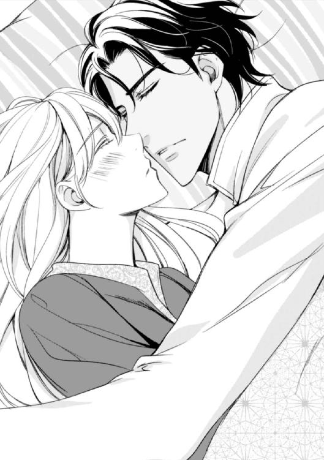
いつまでもそこに残りたがる唇を離して、ジャスミンは眠っているラシードを見つめた。
彼が与えてくれる温もりと共に、また安らぎと眠気が襲ってくる。
「今夜だけ......。今夜だけこうしていさせて......」
ジャスミンは、もう一度ラシードの腕の中に潜り込んで、彼という存在に身を委ね、また眠りの中に落ちていった。
◇ ◇ ◇
次の朝、目が覚めると、ジャスミンはテントの中で一人眠っていた。
「ラシード......」
思わずそうつぶやいて辺りを見回すけど、すでに空は青く澄み渡り、足元にある砂はもう熱を帯びてきている。
起き上がり、昨夜彼がいたはずの場所を掌でなぞってみた。寝床の中にあるのは、自分が残したぬくもりだけ。隣に誰かがいたという気配など残っていない。
眠っている間にいくつか夢を見たような気がする。八年前、ラシードと共に過ごした日々や、思い出せば今でも全身が熱くなる嵐の中で交わしたキスを。
「もしかして、昨夜彼が来てくれたのも、夢だったの？」
そう思っても不思議ではないほど、記憶が曖昧で途切れ途切れだった。だけど、テントの外にある焚き火の跡だけが、昨夜彼がここに来たことが夢ではないと語っている。
いずれにしろ、昨夜のキスを最後にラシードをきっぱり忘れると自分に誓った。唇に残るキスの記憶は、もう過去のものとして胸の底にしまい込んでしまったのだ。
昨日同様、アシムが持ってきてくれた朝食を食べ終え、しばらくすると遠くから皆に出発を知らせるラシードの声が聞こえてきた。
出発の準備を整えた後、迎えに来てくれたのはアシムで、それ以降の道のりも彼と共にラシードの背中を追いながら馬を走らせることになる。
夕方になり、ようやく民が住まう街に入ると、先を行くラシードの馬が速度を落とした。
街は活気に溢れていて、彼が通りすがると、その場に居合わせた人々は彼の馬を追いながら口々になにか言葉を投げかけている。
「みんな、なんて言っているの？」
ジャスミンは後ろを振り返ると、アシムに尋ねた。ある程度の言葉はわかるとはいえ、やはり聞き取れない言葉は多々あるのだ。
「無事の帰還を喜んでいるのです。〝おかえりなさいませ、シークであり、王である方に神の祝福があらんことを〟と」
「ラシード陛下は、皆に慕われているのね」
「ええ、とても。先王同様、陛下は常に民のことを思い、民も同じように陛下のことを思っておりますから」
見れば、小さな子供まで嬉しそうにラシードの後をついて歩いている。それを見る彼の顔は、とても穏やかで優しい。
彼は一族の長たるシークであり、国を治める王だ。ジャスミンは、改めてそう思った。そして、それにふさわしい風格を身につけている彼を、改めてまぶしく見つめた。
宮殿に近づくにつれ、その大きさと規模に圧倒され、ジャスミンはすっかり言葉を失ってしまう。外観の色合いこそ薄い土色をしているけど、壁に施された彫刻は目を見張るほど精密でいて壮大。宮殿の中に入ると、そこはまた別世界だ。一転して鮮やかな色が溢れて、ここが砂漠であることを忘れさせるほど緑に溢れている。
壁から天井にかけて美しく繊細なアラベスクの紋様が刻まれ、美しいアーチを潜り抜けた先にある中庭には、豊かな水を湛える人口の泉もある。飾りタイルが美しい回廊を進んでいくと、その先に同じ様な窓が並ぶ細長い建物があった。
一歩進むごとに立ち止まって見惚れてしまうほどの高い芸術性。絢爛豪華ではあるけど、同時に落ち着いた荘厳をも感じさせる。
案内してくれていたアシムが、突き当たりにある大きな扉の前で足を止めた。
「こちらが後宮です。中には、先王の愛妾であるルクサーナ様が住んでおられます。ここから先は、王以外の男性は入れません。私は宦官ですから必要とあらば入ることはできますが、中に侍女がおりますので、なにかございましたらその者に遠慮なくお申し付けください」
アシムが扉の取っ手を持ち、ゆっくりとそれを引っ張る。
「後宮？ それって、ハーレムってことよね？」
「左様でございます。では、私はこれにて......」
慇懃に礼をしたアシムは、そのまま後ずさりジャスミンが中に入るのを見届けるつもりみたいだ。
「え？ 待って......ハーレム......、私はここに滞在するの？」
ハーレムとは、王が妃や寵姫たちを住まわせる場所だ。そこに自分が？ うろたえるジャスミンの背後から、女性の軽やかな声が聞こえてきた。
「あなたがジャスミンね？」
振り返ると、そこには黒い髪をした美しい女性がにこやかに微笑んでいる。
「はじめまして。私がルクサーナよ。ハーレムへようこそ」
エメラルド色のドレスに身を包んで、優雅に笑っている。ヒスパニック系の女性を思わせるゴージャスな顔立ちと、セピア色の瞳。肌は綺麗な小麦色で、話す言葉は綺麗な英語だ。
「はじめまして。私はジャスミン・バークリーです。あ、あの......」
戸惑うジャスミンの手を引き、ルクサーナはハーレムの中庭にある噴水へと案内した。とうとうと迸る水はきらきらとした飛沫を上げ、少し離れた場所の水面には真っ白な白鳥が優雅に泳いでいる。
〝ああ、これがラシードの白い動物のうちの一羽なのね──〟
「さぁ、ここではもうそんなものを着ている必要はないわ」
彼女の手が、ジャスミンの着るアバヤに触れた。下に着ていたのは、ごく薄い布でできた白いドレスだ。シンプルなデザインながら、縁には金糸をふんだんに使った刺繍が施してある。
「このドレス、ラシードがイギリスに送ったものでしょう？ これを作らせたのは私よ。いくらセンスのいいラシードといえども、女性のドレスについてはあまりよく知らなかったから、助言を頼まれたの」
一歩下がった彼女は、ジャスミンを上から下まで眺めて、嬉しそうににっこりと笑った。
「あなたの容姿を聞きながらどんなドレスがいいか考えたの。よかった！ とてもよく似合うわ。ここで着るドレスもちゃんと用意してあるから、安心してね」
大理石でできた縁に腰掛け、辺りを見回す。だけど、不思議なことに部屋には侍女らしき人の他にはジャスミンとルクサーナしか見当たらない。
「ふふ、ハーレムと聞いて驚いているんでしょう？ でも安心して。ここはあなたが思っているような場所ではないのよ。ラシードは、ここに足を踏み入れたことすらないの。彼の興味は、つねに外に向けられているようだわ」
ルクサーナは、軽やかに笑った。人懐っこい笑顔が、ジャスミンの落ち着かない気持ちを和ませてくれる。
「あなたのことはラシードからいろいろと聞いているわ。さあ、どうぞここに座って。遠慮なくくつろいでね」
ルクサーナは、侍女が用意したお茶の席を掌で示した。彼女が侍女を下がらせたので、辺りには誰もいなくなり、二人きりになる。
〝ラシードからいろいろと聞いているですって？ いったいどんなことを？〟
そう聞きたい気持ちを抑えて、とりあえず彼女のおしゃべりに耳を傾け続ける。
ルクサーナは様々なことを話してくれた。
自分はラシードよりも四つ上の三十二歳、先代の王マジドの寵姫でありながら、子を生せなかったため正式な妻になれなかった。ラシードとは、ハーレムに来て以来不思議と友達のような関係になり、先王であるマジド陛下が亡くなってからというもの、姉弟のように親しく話すようになっていること。
「私は、元々宮殿で働いていた下女だったの。十五歳の時に偶然通りかかったマジド陛下に見初められて、ハーレムに入ったのよ」
彼女は、自分がどこで生まれたのか知らないのだという。それというのも、彼女がまだ幼い頃、乗っていた船が海賊に襲われ、成長した後に奴隷として売られたという経緯があるから。
「断片的に覚えているの。恐ろしい男たちと、泣き叫ぶ女の人......たぶん、それが母親だったんだと思うわ。父親については記憶がまったくないの」
「海賊に？ まさかそんな恐ろしいことが......」
あまりのことに涙目になっているジャスミンを見て、ルクサーナはふっと顔を綻ばせた。
「私のために涙を浮かべてくれているの？ ありがとう。でもね、海賊に連れ去られた時、私はまだ幼かったし、それ以降の記憶はあまりないの。でも、縁あってここへ来てマジド陛下に出会って......。本当に幸せだったわ。陛下は、私に学ぶ喜びの他に、心からの愛も教えてくれたの」
ルクサーナの頬が、ほんのりと赤く染まった。その表情だけでも、彼女が先王を今でも深く愛していることがわかる。八つの歳から宮殿にいる彼女は、元々利発で社交術にも長けており、そのため誰よりもここで起きたあらゆるできごとに通じているみたいだ。
「マジド陛下には、四人の妻と私を含め三人の寵姫がいたの。彼はとても愛情に溢れていて、たくさんの子を持ち、国がより繁栄することを望んでいたわ。だけど、いわゆる国のための政治的な結婚だけはしなかったわ。その代わり、愛を感じたら部族や国、身分など関係なく自分のそばにおいたの。妃になれるかどうかは、身分や何人の子を生したかを鑑みて周りの長老たちが決めていたわ......だけど、結果的にそれが一連の争いのきっかけになってしまったのよ」
マジドは妃や寵姫たちを同じハーレムに住まわせ、それぞれに部屋を割り当てて自由に行き来していた。
女たちは、最初こそ平和に暮らしていたが、子供の有無や長老たちとの関わり方から、徐々に序列や確執が生じ始めた。そしてそれは将来の跡継ぎを巡る諍いに繋がり、マジドが病に倒れた途端、内紛にまで発展してしまったのだという。
「そういったことの心労のせいで、マジド陛下は病に倒れてしまった。そして、ラシードが帰国するまでの間に、恐ろしい陰謀がなされたのよ。人がたくさん死んだわ......ラシードの婚約者も、そんな争いの中の犠牲者の一人になってしまったの」
それはつまり、王位継承権を持つ子の母たちが、王座を望むあまり水面下で陰湿な殺し合いをしたということ。それぞれには、権力を狙う長老たちも加担しており、誰も止める者がいない状態になった。結果、ラシードが帰国した時には、王の子として残ったのは彼だけ。怒り狂った彼は、病床の父の正当な血筋を楯に摂政となり、国を率い悪事に手を染めた者たちを排除することに成功したのだ。
「そうだったんですか......」
「ええ、そして最終的に残ったのは第二王妃、第四王妃。彼女たちは、それぞれの宮殿に蟄居を命ぜられたし、加担した長老たちは追い詰められて自害したわ。争った者たちは今じゃ誰もここに残ってない。結果的にはただの殺し合いになっただけで終わったのよ。狂ってるわ......」
なんという悲劇だろうか。ラシードは、あの日国に帰ってから、いきなりそんな国の大事に立ち向かわなければならなかったのだ。
「実際、彼が無事でいられたのも、彼の母親である第三王妃のファリーダ様がだいぶ前に亡くなっていることと、イギリスに留学中だったから直接の攻撃を受けなかったせいでしょうね......そして、私の場合は、子を持たないただの妾だったからだわ」
穏やかな微笑を浮かべるルクサーナを見て、ジャスミンはかけるべき言葉を見つけることができなかった。
「ラシードのお母様は、どんな方だったんでしょうか」
以前彼から聞かされていたのは、ずいぶん前に病気で亡くなったということだけだった。
「彼女は、同じ砂漠の国ではあるけど、ここから遠く離れた他国の姫君だったわ。たいそう美しい方だったけれど、元々身体があまり丈夫ではなかったから、ラシードがまだ小さい時に亡くなってしまって」
その後、彼はイギリスの学校に入り、以後ずっと寄宿舎生活を送っていたのだという。
「ラシードは、休みになると帰国してマジド陛下とよい親子関係を結んでいたわ。本当に仲がよかった。二人は、結婚に対する考え方も似ていた。国の繁栄を望み、結婚して多くの子を生すべきだ、って」
それはジャスミンにも理解できるし、王として生きるならば、なるべく多くの子孫を残すことが望ましいのだろう。
ルクサーナは続ける。
「マジド陛下は言ったわ。王たるもの、俗に言う政略結婚を持ち込まれるのは仕方がない。ただし、そこにも愛がなければいけないって。もちろん、お互いにね。陛下は自分の信念に従って、行動なさった。だけど、結局は内乱が起こり、残ったのはラシードだけになってしまって──」
その時の彼の気持は、どんなに辛いものだったろうか。それを思うと、ジャスミンの胸は潰れそうに痛んだ。
「それからラシードは変わってしまったわ。あまり笑わなくなったし、自分の感情を外に出さなくなってしまった。以前の彼を知るあなたならわかるかしら？」
ジャスミンは、憂いを帯びたルクサーナの視線を受け、僅かに首を縦に振った。
「ええ、昔の彼はもっと朗らかで雰囲気も柔らかだったわ。だけど、久しぶりに会った彼は、なんというか、すごく......遠く感じて......」
口ごもるジャスミンの後を受けて、ルクサーナは少し声の調子を下げてまた話し始める。
「ええ、言いたいことはわかるわ。今の彼は、王としてはこの上なく立派な人。政治家としても、一人の人間としてもね。国内は安定しているし、民も安心して暮らしている。彼はみんなに愛されているわ。だけど、彼自身の愛はどこにあるの？」
ラシード自身？ 八年ぶりに再会した彼は、以前にも増して魅力的な風貌になっているし、従者にも尊敬され、道行く人々は彼を見て口々に祝福の言葉を投げかけていた。彼は間違いなく人々に愛されている。
「ラシードも人々を愛し、国を愛している。だけど、過去に起こった争いは、彼の心に大きな傷を残してしまったのよ。彼の結婚に関する考え方は、政治的な観点からみれば、ずいぶんと柔軟になったわ」
そう話すルクサーナの口調には、強い憤りの気持ちがこもっている。
「彼は、私に話してくれたことがあるの。国が繁栄するのも大事だけど、平和であることが最も大切だと──。結婚については、先王と同じで、政略結婚自体は否定しない。ただ、ラシードはそこに愛がなくてもいいと言うの。むしろ、愛など邪魔だ、必要ないなんて言い出したのよ」
「愛など、必要ない......」
ジャスミンは、無意識にその言葉を反芻した。彼女の故郷であるイギリスでも、そういった考えは珍しくないし、身分が高ければ高いほどそういった傾向が見られる。
やはり、そういうものなのだ。身分が高ければ高いほど、結婚において愛は重要視されなくなる。そんなものより、身分や財産といった、愛と正反対に位置するものが大事になる。
ジャスミンがラシードと別れてから、何度か連絡を取ろうとして結局はやめてしまったのも、彼が一国の王子であり、自分との身分差を感じたことも一つの理由だった。
自分の思惑だけ考えていた時は、そうではなかった。だけど成長するにつれ、男女間のことは愛だけで括れないということを学んだのだ。
彼がジャスミンに愛を感じていても、彼が一国の王子である以上、超えられない壁がある。いくらそれが真実の愛であり、彼女の方もそれに応える準備があっても──。ジャスミンの方で、愛を貫こうと思っていても、どうしようもない。
「彼は、結婚してたくさんの子を生すことが王としての義務だと認識してるわ。彼によって選ばれた長老たちも、今の彼の考えに賛成しているの。だけど、どう考えても彼の言っていることと、やっていることが矛盾してるの。だからこそ、私にはラシードが本当の気持ちを偽っているようにしか思えないのよ」
「......それって、どういうことですか？」
「だって、ラシードときたら、持ち込まれる結婚の話を、なんだかんだ言って断り続けているのよ。それも、かなりの国益に繋がるいわゆる政略結婚でも。どんな形の結婚であろうが、愛など必要ないって言ったのによ。ただ結婚して子を生すことが目的なら、なぜいまだ独身を通しているの？ それって本当は、彼が心からの愛を求めているからじゃないのかしら......」
「心からの、愛......」
「ええ。絶対にそう。そうとしか思えないわ」
ジャスミンは、それを聞いて、しばらくの間じっと黙り込んでしまった。
〝愛、ですって？ 彼の愛──。そばで彼を見ている彼女がそういうのなら、そうなのかもしれない。だけど、それも私には関係のないことだわ......。私という存在は、彼にとって国益にならないのはもちろん、愛してもいない存在なんだもの......〟
「どうかして？」
「えっ？」
「だって、今、すごく大きなため息をついていたから」
心配顔のルクサーナの言葉に、ジャスミンは慌てて首を横に振った。
「いいえ、なんでもないんです。すみません、私ったら......」
いつの間にため息なんかついていたんだろう？
〝未練たらしいわよ、ジャスミン！ あなたはやるべきことをやって、さっさとイギリスに帰らなければ！〟
神妙な面持ちで唇を噛むジャスミンを見て、ルクサーナは、口元に柔らかな微笑を浮かべた。
「ううん、いいのよ。ここに来るまで、大変だったでしょう。さあ、お茶と甘いものをどうぞ。お兄様のことは心配でしょうけど、ラシードがきっと探し出してくれるわ。彼を信じてここで待っていましょう」
ルクサーナは、それからもジャスミンのことをなにかと気に掛けてくれ、ジャスミンの方も彼女を頼り、徐々にハーレムでの生活にも慣れていった。
ラシードはといえば、ルクサーナの言うとおりハーレムには全く姿を見せないし、王としての職務やアレックスの捜索にと忙しいのか、宮殿で見かけても挨拶程度しかできないほどの忙しさだ。
カビール国に来て、五日目の午後。
ジャスミンは、ハーレムの中に住んでいる白猫の背を撫でながら、ルクサーナと話していた。
その日身につけていたのは、脇腹が大胆にカットされたアラビア風ドレスで、胸元を隠すひし形の布には紫と金の糸でびっしりと刺繍が施されている。腰の下の生地は、花びらのように薄い生地を寄せたもので、歩くたびに太腿から下が丸見えになる。
ルクサーナが用意してくれた衣装は、どれもセクシーで肌の露出が多いものばかりだ。
「ジャスミン、とってもよく似合うわ。女の私でもうっとりしちゃう」
最初こそ気恥ずかしくて着るのを躊躇していたけど、ハーレムの中にいるのは自分たちだけということもあり、すぐに慣れてしまった。砂漠の国とはいえ、敷き詰められたタイルのお陰で床には幾分ひんやりとした冷たさがある。
「綺麗な猫だわ。この子もラシードの飼い猫なの？」
もうすっかり打ち解けている彼女たち同様、この猫もジャスミンの掌の下でゴロゴロと喉を鳴らしている。
「元々は、ラシードが婚約者であるサフィ王女にプレゼントしたものなの。名前はラビよ」
サフィ王女とは、ラシードの母方の従妹にあたる人で、八年前に聞いた婚約者とは彼女を指していたようだ。
「彼女は、幼い頃からラシードの婚約者ということもあって、よくここの宮殿に遊びに来ていたのよ。来る時は、必ずこの子も一緒だったし、王女はラシードが大好きだった。もちろん、この子も。だから、彼女が亡くなった時に、この子を引き取らせてもらったそうよ」
ジャスミンの胸が、またちくりと痛んだ。
「そうなの......」
まるでため息のようなジャスミンのつぶやき。ルクサーナは、そのまま黙り込んだジャスミンの横顔を微笑んで見つめている。
「ラシードとサフィ王女は、とても仲が良かったのよ。王女が亡くなったのは彼女が十五の歳だった。長い黒髪がとても綺麗で、従兄妹同士ということもあって、ラシードと顔つきも似ていたわ。とくに、目元なんかそっくりだったの」
ラシードと同じ目をしているなら、絶世の美女に違いない。そんな美しさを持ち、なおかつごく親しい間柄の婚約者であったサフィ王女。きっとラシードは彼女のことを、心から愛していたのだろう。たとえ親同士が決めた婚約であっても、そこに愛があればそれこそなんの問題もないのだから。
「あ、でも誤解しないで。ラシードは、サフィ王女を女性としてではなく、妹として愛していたのよ」
「え......？ 妹として？」
「そうよ。ラシード自身がそう言っていたの。無理もないわ。だって彼は、サフィ王女が赤ちゃんの時から知っているんですもの。王女も、ラシードのことを兄として慕ってたわ。二人は、まるで本当の兄妹のようだったの」
「あ、あぁ......、そうなの......。妹として......」
それを聞いて、苦しかった胸が一気に楽になった気がした。だからといって、なにがどうなるわけじゃないのに、自然と頬が緩んでくる。
ジャスミンは、自分でも気付かないうちに、深い安堵のため息を吐いた。それを見るルクサーナは、彼女に気付かれないよう、顔を背けくすくすと笑っている。
「ねぇ、あなたここに着いた日、私が言ったことを覚えている？ ここはあなたが思っているような場所ではない。ラシードは、ここに足を踏み入れたことがないって。王の中には、息子たちとハーレムの一部を共有したり、王の死後はハーレムをそのまま次の王に引き継いだりする場合もあるけど、ラシードはそうじゃない。ラシードは、私が知る限り不思議なくらいストイックなの。下女に手を出している風でもないし、自分から妃を求める様子もないわ」
それを聞いたジャスミンの顔が、ぱっと明るくなる。その様子を見て、ルクサーナもまた嬉しそうににっこりする。
「あ、ラビ！」
それまで大人しく床に寝そべっていたラビが、急に立ち上がって回廊の向こうへと走っていく。
「ジャスミン、ちょっと散歩しない？ 面白いところに案内してあげるわ」
「ええ、いいわ。いきましょう」
立ち上がり、二人してラビが駆けていった方へと歩いていくと、つきあたりの左手に小さな小部屋があった。その窓辺にラビが座っていて、どこか人待ち顔で外の景色を眺めている。
「ここは？」
「ここは、ハーレムと裏庭を繋ぐ小部屋よ。庭の向こうには、ラシードが特別に飼っている動物たちの厩舎があるの。彼はよくこの庭を横切って、動物たちの世話をしにいくのよ──あ、ほら。ラシードだわ」
ルクサーナが示した方向を見ると、白馬に乗ったラシードがちょうど庭の入り口に現れたところだった。ジャスミンを迎えに来た時と違って、今日の彼は薄い空色のカンドゥーラを身にまとっている。
「いつも白を着ているわけではないの？」
「ええ、彼は割りと自由に色を使い分けているみたいよ。あの様子だと、きっと遠乗りにでも行ってたんだわ。さあ、もう少し先に行ってみましょう」
部屋の反対側にある扉を開けると、そこは庭を囲むように続く回廊が続いており、行き着いた先の部屋はさっきよりも広く、壁には花模様の透かし彫りがびっしりと施されている。いつの間にか先回りしていたらしいラビが、ジャスミンの足元にまとわり着く。
「ふふ、抱っこして欲しいの？」
かがみ込んで手を差し伸べると、ラビは嬉しそうに喉を鳴らし、彼女の胸に飛び込んできた。
「窓の外が見たいの？ ほら......あ、ちょうどご主人様が出ていらしたところよ」
ラビを抱いて窓に近づいてみると、庭の一角にある岩陰から、ラシードが駆けてくるのが見えた。回廊に囲まれた広大な庭は、いくつかの区画に分かれていて、種類ごとに分けられた動物たちが放し飼いにされている。
「あっ......！」
見れば、そこにはライオンやチーター、虎といった猛獣がゆったりと寝そべっている。そして、それら動物たちは、どれも白く美しい毛並みをしているものばかりだ。
「すごいわ......」
感嘆の声を上げるジャスミンの腕の中で、ラビが得意げな泣き声を上げる。
そのまま外を見守っていると、ラシードは一頭のライオンを伴い、ジャスミンたちがいる部屋のそばを通り過ぎて、屋根がせり出した日陰で連れて来たライオンとじゃれあい始める。
「わ、あっ、あ、危なくないの？」
はらはらしながらそれを見守っているジャスミンだったけれど、ラシードが猛獣と接する様子は、まるで犬や猫を相手にしているような気軽さがある。
「平気よ。あの子たちは赤ちゃんの頃からここにいるんですもの。みんな、ラシードの子供みたいなものだわ」
なるほど、見ていると動物たちがいかにラシードを慕っているかわかってきた。彼は彼で、昨日見た冷徹な顔つきとはまるで違う穏やかな表情を浮かべている。
〝八年前と同じだわ。昔のラシードは、いつもあんな優しい顔をしていた......〟
彼と初めて会った時の衝撃、森に探検に出かけたこと、嵐の中でのキス、そして昨夜抱き合って眠った時のことが、次々に頭の中に思い浮かんだ。
部屋の窓には鉄でできた紋様が描かれており、たぶん外からは部屋の中を見ることはできない。
ライオンと遊び続けるラシードは、ジャスミンたちにまったく気付かず、まるで少年のように大声を上げて笑っている。
「ラシード......」
無防備な笑い顔を見ていると、どうしようもなく胸がときめいてしまう。
〝どうして？ さっき諦められるって思ったばかりなのに。なぜこんなにも彼に心惹かれてしまうの？〟
この八年間というものどんな男性を見てもまるで心を動かされることはなかった。それどころか、無意識にラシードと比べていた。
彼が去って以来、気がつけばそうしていた。瞳の色、話し方や立ち振る舞い。すべてラシードを基準にし、彼と比べていた。だからこうしていつまでも一人でいるのだ。
〝彼に敵うような人は、誰一人いやしない......そんなこと、わかりきっていたんだもの。だけど、もういい加減おしまいにしなきゃ。そのために、ここにいるんだってことを忘れないで、ジャスミン〟
複雑な表情でラシードを見つめ続けるジャスミンの肩を、ルクサーナの掌がそっと触れる。
「さあ、そろそろ行きましょう。少しお腹が空いたわ」
ルクサーナに促されてハーレムに戻ると、ちょうど侍女がお茶とお菓子を持ってきてくれたところだった。途中まで二人と一緒にいたラビは、またふらりとどこかへ行ってしまった。
「ねえ、ジャスミン。率直に言うわね。あなた、ラシードのことが好きね？」
「えっ？」
突然そう言われて、ジャスミンは持っていた菓子を落としそうになった。
「なっ......、そんなこと......」
突然しどろもどろになるジャスミンの顔を、ルクサーナは可笑しそうに眺める。
「だって、ラシードの話をする時のあなたの反応といい、さっき彼を見た時のあなたの視線といい......。そうね、好きというのはちょっとふさわしくないかも知れない。どちらかといえば、愛している。あの熱っぽい視線は、それで間違いないと思うんだけど、どう？」
まだほんの四日しか共にいないけれど、彼女が気持ちいいほど率直な人間だということはわかった。今いるのは、アラビアン・ナイトの本で見た挿絵そのものの世界。
目の前にいるのは、瑠璃色の薄いドレスを着た美しい女性。彼女の瞳は、彼女の内面を表すように、美しく澄んでいる。
ここで心を偽るのは、なんだかひどく悪いことのように思える──。
「ええ、そうね......。どうしてか、あなたに嘘はつけないわ、ルクサーナ」
ジャスミンは、下を向いたまま消え入るような声で答えた。
「ということは、やっぱり？ ああ、なんて素敵なんでしょう！」
ルクサーナは、ジャスミンの手を取り、嬉しそうに微笑んでいる。
「あなたが彼に会ったのは、八年も前よね？ もしかして初恋だったの？ そして、今の今まで彼のことを忘れられずにいたのね！」
矢継ぎ早に質問され、ジャスミンはもう観念してルクサーナになにもかも正直に話してしまおうと思った。
「ルクサーナ、聞いてくれる？ 私、どうしたらいいかわからなくなっているの......」
八年前にあったできごともかいつまんで話して、彼のことを諦めようと決心してここに来たのに、それが失敗したどころか、逆に彼のことを改めて強く想うようになってしまっていることを話す。
そして、砂漠で眠った夜、こっそり彼の唇にキスをしたことまで。
「ああ、ジャスミン！ 私、嬉しいわ！ 今のラシードは昔とは別人みたいになってしまったけど、きっと大丈夫よ。彼はまた人を愛せるようになるわ！」
今まで誰にも言えなかった秘密を、初めて人に聞いてもらった。そのせいで、ジャスミンの胸は騒いでいたけど、洗いざらい話してしまったせいか、心はずっとすっきりとしている。
「ラシードは誠実な人だわ。そんな彼が、たんなる遊びであなたにキスをしたとは思えない。そして、胸の先に......ああ、あなたたちったら！」
嵐の中でキスをした日のことを持ち出し、ルクサーナはひとしきりそのロマンティックで官能的な情景を一人思い浮かべてははしゃいでいる。
「でも、もう彼は愛など必要ないって言っているんでしょう？」
「そうね。でも、さっき言ったように、きっとそれは彼の本心じゃないと思うわ。百歩譲って、彼が実際に愛を必要としていなくても、愛を信じていないわけじゃないもの。だから......あら？ それは......」
ルクサーナは、ジャスミンの胸元にある真珠の指輪を見つけ、驚いた表情を浮かべた。
「あ......」
どうやら、ラビを胸に抱いている時に、じゃれて指輪を引っ張り出してしまったようだ。
「実は、これがそうなの──これが、ラシードが私にくれた指輪なのよ」
「まぁ......驚いたわ！ ねえ、あなただったの？ ラシードが彼の母親であるファリーダ王妃の形見の指輪を捧げたのは！」
「ええっ？ ラシードのお母様の形見？」
ジャスミンは、ルクサーナの言葉を聞いて仰天した。
彼が父王から受け継いだものだとは聞いていたけど、まさかそこまで大事な指輪だったなんて思いもよらなかった──。
「そうよ、間違いないわ。それは、彼がマジド陛下から亡きファリーダ王妃の形見として賜ったものだわ。元々は真珠のペンダントトップだった物を、王がラシードのために指輪に作り直したのよ」
「ラシードは、そんな大切なものを私に......？」
ジャスミンの疑問に、ルクサーナはわけ知り顔で答える。
「ええ、そういうことになるわね。王妃が亡くなってからというもの、ラシードは指輪を肌身離さず身に付けていたわ。なのに、彼がイギリスから帰った時、それが彼の指からなくなっていたの。だから私、彼に聞いてみたのよ、どこにやったのって。そうしたら彼は言ったわ。指輪は、自分が心から大切に想う人に残してきた、って」
〝心から大切に想う人......！〟
ジャスミンの心が、喜びに震えた。まさか──彼が、そんな想いを込めて指輪を残してくれていたなんて。
〝ラシードは、自分を大切に想ってくれていた！〟
そのことを知って、ジャスミンはしばらくの間幸せな気分でいっぱいになった。頬は紅潮し、藍緑色の瞳がきらきらと輝きだす。
「話を聞いただけでも、あなたたちふたりの間にはただならぬ縁があると思うわ」
ルクサーナは、感じ入ったように掌を胸に当てて頷いてみせる。
「でも、もう八年も前の話よ。私はまだ子供だったし、ラシードも今よりはずっと自由な立場だったし......」
「年月がなに？ あなたは現にここにいるし、ラシードだってあなたをまだ想っているのかもしれないじゃない。もちろん国や民は大事よ。でも、王家に生まれたからといって真の愛を求めてはいけないわけじゃないでしょ？ 私はそう思うわ。少なくとも、私とマジドはそうだったもの」
うっかり先王のことを呼び捨てで呼んでしまって、ルクサーナは可笑しそうに笑い声を上げて片目を瞑った。
「私とマジド陛下は、とても愛し合っていたわ。立場上、いろいろと制約はあったけど、本当に心から想い合っていたの。それは素晴らしく幸せな時間だった。私は、ラシードにもそれを味わって欲しいと思っているの」
真珠の指輪が、ジャスミンの上下する胸の上を転がり、谷間にするりと滑り込んだ。すると、かつてラシードに含まれた右の乳首がきゅんと疼いた。
思わず声が漏れそうになり、慌てて唇を噛んで身を縮こまらせる。
「いいことを思いついた──ちょっと待ってて、今いいものを持ってきてあげるわ」
ルクサーナの裸足の足裏が、大理石の床を歩いていく。
一人になったジャスミンは、手持ち無沙汰にドレスの裾を指先で摘んだ。ふと、イギリスにいる妹のエレインのことが思い浮かんだ。
「私がこんな恰好をしていると知ったら、きっと驚いて腰を抜かしちゃうわね」
アレックスの行方は依然わからないままだけど、徐々に捜索の範囲も広がり、今はラシードに任せておくのが一番の得策のように思える。
「腰といえば、バーニーは大丈夫かしら。エレインが上手に看病してくれているとは思うけれど」
ジャスミンのひとり言に、近づいてきていた池の白鳥が首を傾げる。
「ふふっ、人懐っこいのね。きっとラシードに愛されているのね」
「お待たせ」
そこへ戻ってきたルクサーナの手元には、小さな箱とともに金色の鍵が握られている。ルクサーナに促されて、奥に続く回廊を二人して歩き出した。
「今、ちょうどアシムが私の部屋を尋ねてきて、ラシードからの預かりものを手渡してくれたの」
ルクサーナは、手の中の鍵を軽く振ってみせる。
「どこかのお部屋の鍵？」
「そうよ。私、今すごくうきうきしているの。なにもかも神様の思し召しだわ。さあ、入って。アシムがお掃除を済ませてくれているわ」
突き当たり手前の、入り口に百合の花の彫刻があしらってある部屋。そこは、陽の光が差し込む広々とした一室。壁には、真珠貝のかけらが無数にはめ込まれ、それぞれが美しい虹色に輝いている。
「ここは、以前ファリーダ王妃が使っていたお部屋よ。彼女が亡くなってからは、ずっと使われていなかったの。ずっと鍵がかかったままだったんだけど、今朝ラシードからだって、アシムがここの鍵を持ってきたの。今日からこの部屋をあなたに使ってもらうようにって」
「ラシードが、私に？」
窓を開けると、部屋の中に光が射し、真珠貝が作る虹のかけらがきらきらと踊った。
「ええそうよ。ラシードは、これまで誰にも使わせなかった部屋を、あなたに使ってもらいたいと思ったのね。どう？ それだけでも、彼があなたをどんなに大事に思っているかわかるわ」
部屋の一角には天蓋付きのベッドがあり、床には柔らかで涼しげな絨毯が敷かれている。ルクサーナは、ジャスミンと共にそこに座って、持っていた箱の蓋を開けた。
「これは？」
箱の中には、壺型の瓶が入っており、蓋を開けると、中からはなんともいえない芳しい香りが漂ってくる。
「香油よ。私が自分で調合したの。とてもいい香りでしょう？ 内緒だけど、これは特別な媚薬にもなるのよ。マジド陛下もお気に入りだったわ」
ルクサーナは、金の杯に香油を取り分けると、それをジャスミンに手渡し、耳元にそっと囁く。
「媚薬って、その......催淫の働きがあるお薬ってこと？」
〝媚薬〟という言葉だけは、以前読んだ本に出てきていたから、意味だけはなんとなく理解している。
「そう。この香油に、あなたの蜜を混ぜるの」
手の中の杯が体温で温まると、それだけでもうエキゾチックな香りが部屋中に広がっていく。
渡された杯を覗きこむと、中にある香油がとろりとした蜜色に輝いて見えた。
「私の......蜜？ それってどういうこと？」
人間である自分の、どこに蜜を分泌する機能があるというのだろう。戸惑うジャスミンを前に、ルクサーナはにっこりと微笑んで見せた。
「ジャスミン、あなたはまだなにも知らず、清らかなままなのね。いいわ、今からやり方を教えるからよく聞いてね」
彼女の手が、ふっくらと膨らんだ自身の胸の上に置かれた。
「こうやって、心に愛しい人のことを想うの。私なら、マジド陛下ね。リラックスして、頭の中でその人とキスしたり抱き合ったりする情景を思い浮かべて......そうすると、自然と脚の間から蜜が溢れてくるわ」
「あ、脚の間？」
ジャスミンが、思わず頓狂な声を上げると、ルクサーナは可笑しそうにくすりと笑う。
「そうよ。それを指ですくって、香油に混ぜて乳房に塗るのよ。そうすれば、胸の鼓動が高まるに連れて、あなただけの媚薬が香り立って力を発揮するわ」
「えっ......、そ、そんなの無理よ......、きっと私にはできないと思うわ」
そんな話は、聞くだけで全身が赤くなってしまう。上品ぶるわけではないけど、それほどあからさまに性的な話は、今まで誰ともしたことがなかったのだ。
「大丈夫よ。ラシードを想う気持ちが本当なら、きっとできるわ」
ルクサーナは、ジャスミンの背後に回ると、彼女の蜂蜜色の金髪に触った。
「綺麗な髪ね。さあ、こめかみに祝福のお化粧をしてあげるわ」
「お祝い？」
「ええ、私からあなたへの祝福のお化粧。恋をする者たちの想いが、お互いに上手く伝わりますようにって。もう少し髪をあげてもらってもいい？」
ジャスミンは頷き、カメオでできた髪留めを外し、ルクサーナに託した。彼女は、ジャスミンの耳にかかる後れ毛をそっとなでつけ、こめかみが出るようにすっきりと髪を留めなおした。
そして、箱から細い筆を取り出して、ジャスミンの目尻に美しい線を巧みに描いていく。
「ふふっ。なんだかくすぐったいわ。これ、なにか葉っぱのような香りがするのね」
動かないよう注意しながら、漂ってくる香りをゆっくりと吸い込んでみる。
「これは、ヘナの葉でできた染料なの。放っておくと十日ほどで消えてしまうわ」
手馴れた様子でルクサーナが描いたのは、百合の花を模した紋様だった。目尻からこめかみにかけて、美しい百合の絵が細い線で描かれている。
「さあ、できたわ。今までで一番上手く描けたし、これで間違いなく素敵なことが起きるでしょうね。これはおまじないでもあり、大切なメッセージでもあるのよ」
「メッセージ？ これを描いてもらうと、いったいなにが起きるの？」
わけのわからないことを言われて、ジャスミンは小首を傾げルクサーナの答えを待つ。
「その時がきたらきっとわかるわ......。さあ、私はお昼寝をしに部屋に戻るわね。あなたも少し横になるといいわ。よかったら、香油を試してみて。きっといい夢が見られると思うわ」
魅惑的な微笑を残して、ルクサーナは自室へと戻っていく。途端に部屋はシンと静まり返って、聞こえてくる音は噴水の水音と白鳥の羽ばたきだけになってしまった。
ジャスミンは、言われたとおりベッドに行き、横になってゆったりと手足を伸ばした。窓の外にある木立が揺れるたびに、部屋の中を小さな虹のかけらが飛び交う。
イギリスを出て、もうかれこれ二週間になる。心配事はあるといっても、初めての異国の地は刺激的かつ魅力に溢れている。
「アレックス......、あなたが探検家になった気持ちが改めてわかった気がする」
行く先々で違う環境の中で、常に神経を高ぶらせ、目の前にある未知のものに向かっていく。
それは、どんなに胸が躍る瞬間だろう。ジャスミンの中には、レディとしての自分と、男勝りの探究心が混在している。
ジャスミンは、ゆっくりと息を吸い込みながら目を瞑った。徐々に身体から力が抜け、心までもゆったりとした気分になる。
目蓋の向こうに、光が揺れているのが感じられる。どうやら身体を倒した時に、手に持っていた杯が傾いで、胸元に少しだけ香油が零れてしまったみたいだ。目を閉じて更に深呼吸をすると、匂い立つ香りが身体の中に広がっていくような気がする。
「ラシード......」
自然とその名が唇から零れた。緊張が解け緩くなった心が、記憶の中にいる彼の元へと引き寄せられていく。ラシードへの想いを断ち切ろうとしているのに、こんな風に心を解き放っていると、本当の気持ちが抑えきれなくなってしまう。
唇に、彼とのキスの感触が蘇ってくる。彼のぬくもりが全身に感じられる。
呼吸が徐々に乱れていき、つま先がベッドに広げられた布の上を泳ぎ始める。
「ラシード......、ぁあ......」
彼の名を呼ぶたび、じんわりと身体が熱くなっていくのがわかった。
こんな風になるのは、初めてのことだ。彼を想い、胸を熱くすることはあっても、そんな感覚に身を任せることはなかった。欲望に身を任せるなんてはしたないし、ましてや結婚前のレディが異性を思い浮かべながらなにかをするだなんて......。
「んっ......」
顎がクンと上向き、持ち上げた両膝が左右に分かれた。胸元にある真珠の指輪は、デコルテを滑り首の後ろに回っている。気がつけば、指先が身体の上を滑って、ずり上がったドレスの裾を握っていた。脚の間に、なにか熱いものが滲んでくる。
これも、媚薬のせい──？
「ラシード......」
何度彼の名を呼んだだろうか。知らない間に、開いた脚の間に掌を滑り込ませて、溢れ出る蜜を右手の指先ですくっていた。指が触れた場所が、とんでもなく敏感になっている。
「ぁ、んっ！」
左手の指が、ドレスの肩ひもを外した。あらわになった胸の先を、蜜に濡れた指で摘んでみる。
目の奥に小さな火花が散り、喉の奥から恥ずかしい声が零れ落ちる。
「ぃあ、あ......、ラ......ラシ......ド......！」
身体はより強い刺激を求めているのに、これ以上なにをどうすればいいのか、ジャスミンにはわからなかった。彼女が見る本の中には、性愛に関する詳細は記されていなかったから。
身をよじり、吐息をつくジャスミンの頭上から、突然凛とした低い声が聞こえてきた。
「僕を呼んだか？」
ラシードの声に、ジャスミンの全身が震えた。
「ラ、ラシードッ......！」
慌てて身を起こしながら、ずり落ちていたドレスの胸元を直した。見つめてくる彼の瞳を、まともに見ることができない。
「どうした？ いったいなにをしていたんだ」
驚いたような彼の視線に晒され、ジャスミンはベッドの上で後ずさった。
「ど......どうしてここへ？」
「どうして？ それは僕の方が聞きたい。ルクサーナに、君の具合が悪くなったから至急見てやってくれと言われたんだが」
「で、でも、あなたはハーレムには足を踏み入れたことがないと聞いたわ」
「だからなんだ？ ここは僕の宮殿だ。いつどこに行こうが、誰にもとやかく言われる筋合いはない。......それで、君はどんな症状がでているんだ？ 僕で治療できるものなら、させてもらう用意はあるが」
ラシードは、イギリスの大学で医学を学んでいた。途中で帰国してしまったけれど、自国に帰った後も学び続けているとアレックスから聞いていた。
「いいえ、なんでもないの......、ただ......ちょっと疲れて、横になっていただけなの」
ラシードは、目を細めジャスミンの寝乱れた姿をじっと見つめた。
「そうかな？ 見たところ、疲れたというより、燃え上がった欲望を持て余して困り果てているように見えるが？」
「ち、違うわ！ そんなッ......」
はだけたドレスの裾を直そうとした途端、かがみ込んできたラシードに身体を押さえ込まれた。
「目尻にある化粧はどうした？ 君は、これが何を意味するかわかっているのか？」
低く響く彼の声が、ジャスミンの羞恥心を限界まで高めていく。剥き出しになった脚の間に、彼の腰が割って入った。もがいている太腿の内側に、なにか硬く熱いものが触れる。
ジャスミンは戦慄した。今、自分の脚に当たっているのは、間違いなく男性の性的部分だ──。
「ラシードッ......！」
朦朧とする思考の中、どうにか咎めるような声を出すことに成功した。
「こんなの、駄目よ......！ お願いだから行ってちょうだい......私を困らせないで」
「ふっ......〝お願いだから行ってちょうだい〟か。あの夜と同じ台詞だ。まぁ、君はもう覚えていないと思うが」
「え......っ？」
ラシードの言葉に、ジャスミンは驚き、目を見張った。忘れるわけがない。あの夜のできごとは、今もはっきりと覚えているのに。
「さっきも言ったとおり、この宮殿は僕のものだ。つまり、ここにあるものは、全部僕の所有物だ──全て僕の自由になる──」
彼の膝が、閉じようとするジャスミンの脚を阻んでいる。早くなった呼吸が、胸元を激しく上下させている。それをじっと見つめたかと思うと、ラシードは彼女の首筋に唇をつけて強く吸った。
「ぁ......っ、ん......ッ......」
我慢できず、つい声を上げてしまう。それを聞いたラシードは、満足そうに口元に笑みを浮かべた。
戸惑う唇をキスで塞ぐと、ラシードは寝そべったままのジャスミンの腰を左腕に抱え込んだ。
「ジャスミン、君はいつの間にこんな淫らな行為をするようになったんだ？ 僕の母が住んでいた部屋で自慰をするなど、破廉恥極まりない」
「ぁんっ......ち、違ッ......、ぁあ......」
違うと否定する唇から、甘い吐息が零れ落ちる。ただキスをしているだけだというのに、身体中の末端がぴりぴりと痺れる。全身が、やたらと敏感になっているみたいで、太腿に触れている彼のものが、火傷しそうに熱く感じる。
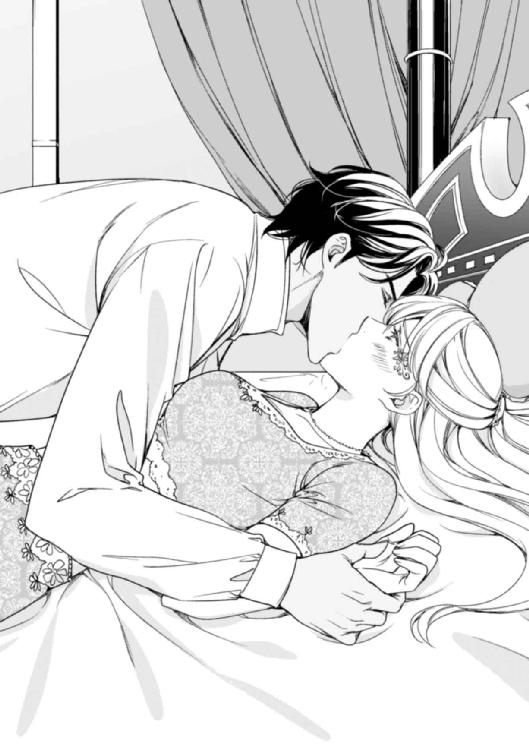
「なにがどう違うと？ 再会してまだ間もないのに、もう嵐の日に起きたことの続きをしようというのか？」
「ぁ、んッ......！」
その言葉でわかった。彼は覚えている──最後の夜のことも、嵐の日に起きたできごとについても。
ラシードの指が、ドレスの胸元にかかった。そこをゆっくりと引きおろして、白く柔らかな乳房をあらわにする。
「ほう......、綺麗だな。胸の先の薄い色は、あの頃のままだ」
彼の唇が、目の前にあるピンク色の切っ先を含んだ。最初はごく緩く吸って、それが徐々に強まり、硬くなった乳首を舌で転がしては甘噛みしてくる。
「ぃ、あッ、あんッ！ ふ、ぁッ......、ラ......シード......！」
「こめかみに施した化粧の意味を知っているのか？ それは、ここの主である王に処女である自分を捧げたいという意志を表すものだ」
「なっ......、ああんっ！」
そんな意味があるだなんて知らなかった！ さっきルクサーナが言っていた素敵なこととは、ラシードとこんな風に抱き合うことを指していたのだろうか？
そうだとしても、もう抗えない。初めての体験だというのに、彼の甘く意地悪な愛撫に、身も心ももう蕩けきってしまっている。
もう片方の乳房を齧るように口に含むと、ラシードはキスに濡れた乳首を指先で摘んだ。
「あんっ！ ぁ、あ......あん、ん......！」
ひっきりなしに漏れる声を壁を飾る真珠貝が弾いて、ジャスミンの全身を羞恥にまみれさせる。
「いい声だ。男をその気にさせて、狂わせるような......」
ジャスミンが喘ぐたびに、胸元から立ち上る濃厚な香りが、一層香りたった。身体の奥から、熱が湧き出てくる。なにか抑えきれない感情が、彼女を飲み込もうとしている。
「どうする？ ここまでは八年前と同じだ。だが、これから先にあることは、ただの戯れじゃない。きちんとした、男女の営みだ。まさに、アラビアン・ナイトに描かれている世界だ。しかも、君が昔読んでいた子供用の改編などされていない、たまらなく淫靡で、融けるほど甘い睦み合いだ」
「ひ、ぁッ......！」
敏感になった乳首を、硬い歯列で甘く噛まれて、ジャスミンは身体を激しく反りかえらせた。
その拍子に、寝床の横に置いていた香油入りの杯が、コトンと音を立てて倒れてしまう。新たに匂い立つ香りに、ラシードはふと、そちらを見る。
「これは？ ルクサーナが作っている香油か？ ああ、これを使ったのか。だから、こんなにもたっぷりと淫らな蜜を溢れさせているのだな。なるほど......君は、僕に処女を奪ってもらいたいらしい」
「ち、違......ぁあッ......！」
ラシードが、舌先で乳暈の縁をなぞった。
「違う？ こんな恰好で誘っておいて、今更よく言えたもんだ」
いきなり胸の先を強く吸われ、歯と舌で硬くなった乳首をしごいてくる。
「あンッ......！ や、ぁっ......ん！」
まるで熱病に罹ったみたいに、全身が熱く震える。いつの間にか、溢れ出る蜜が太腿の内側をしとどに濡らしていた。唇を噛み締め、声が漏れるのを止めようとするのに、まるで功を成さない。それどころか、そうすることで余計淫らな気持ちになってしまう。身体が淫靡に波打ち、つま先がベッドを離れラシードの背中の上で重なり合う。
「ひあっ......！ あ、ああッ！」
彼の長い指が、ジャスミンの濡れた丘陵の割れ目に沈んだ。そして、すぐにぷっくりと膨らんだ淫芽の頂を見つけて、そこをコリコリと指先で嬲ってくる。仰け反った拍子に、着ているものをすべて剥ぎ取られた。胸元を離れ、腹の上を下りてきたラシードの舌先が、熱く腫れた頂に触れた。
「ぁあ！ ラシ......、は......、あぁっ！ あ、あぁ......！」
凄まじい快楽が全身に広がり、ヴァギナに与えられる初めての愛撫が、ジャスミンの呼気を奪い去ってしまう。
「......ひ......、ッ......」
ふっくらと盛り上がる丘を割られて、溢れ出る蜜の中をラシードの舌先が泳いだ。彼のキスが更にジャスミンの丘を侵食する。ラシードは、そのほとりに指先を遊ばせ、ジャスミンが焦れて背中を仰け反らせた瞬間、蜜を垂らす泉の中に深々と指を潜り込ませた。
「ひっ......！ んっ......」
身体に指を含まされた一時、彼女の身体はびくりと震え、石のように硬直した。だけど、すぐに唇に戻ってきたキスに蕩けて、差し込まれたラシードの舌を味わい、甘い声を上げ喘いだ。
すると、身体の緊張も徐々にほぐれ、蜜泉の入口が、僅かに蠢きだす。
「いい子だ......、もうこんなに欲しがってる......」
ラシードは、ねだるようにひくついている彼女の泉から指を抜き去り、おもむろに身体を下にずらして、濡れた丘に唇を寄せた。
「まるで百合のつぼみのようなヴァギナだ......。もう甘く香りたっている上に、溢れるほど蜜を垂らしている」
滴る蜜を、じゅるりと舐め上げ、ラシードは彼女の両の太腿を腕の中にきつく挟みこんだ。そうやって腰を固定しておき、柔らかな丘の割れ目を、舌先でじっくりと味わっていく。
凄まじい快感がジャスミンの全身を貫き、意識が遠のきそうになる。
「ラシード......、ぁ、あああっ......！」
こんなことをするのはこれが初めてなのに、気がつけば羞恥よりも欲望の方が勝っている。
彼に触れて欲しい──ただそれだけを望み、それ以外のことは考えられなくなる。
どうすればいいか、わからない。でも、一時でも早く彼と融け合いたいという想いが、熱病のようにジャスミンの思考を侵食していく。
喘ぎ、身体を震わせるジャスミンを見て、ラシードは彼女の唇にキスを移動させて、舐め採った蜜を口移し、更に舌を強く絡ませる。
「あの時の君はまだほんの子供だった......だが、今はもう十分に大人だ。今回は我慢しない......君の処女を奪って、君のすべてを僕で満たしてやる」
身体をいったん離すと、ラシードはジャスミンの両の脚を腕の内側に高く抱え上げた。彼女の肌に真珠貝が映す小さな虹が揺らめく。さっきまでラシードのキスを受けていた蜜の泉に、彼の硬く反り返った蜜茎があてがわれる。
「ラシー......ド......、ぁあ......」
ジャスミンは、思い切って閉じていた目蓋を開け、目の前のラシードに視線を合わせた。
思い返せば、どれほど彼とこうなることを望んでいただろう？ 初めて会った時、彼の瞳に引き込まれた。まだ恋というものを知らないまま彼に恋して、そうと自覚して気持ちを募らせた矢先に手の届かない存在になってしまって──。
「......は、ぁ......」
泉の入り口をほぐすみたいに、彼の切っ先が浅く入ってきては丘の上へと滑っていく。
「ひ、ぁあっ！ あ、あ......あああんっ！」
ラシードの高ぶりがジャスミンの蜜泉に沈み、突然身体の真ん中に鈍い痛みを感じた。だけどそれは驚くほど甘美で、すぐに全身を突き抜けるような快楽にとって代わった。
指と舌で愛撫されてすっかり腫れあがった淫芽を、ラシードの指がくにくにと捏ね回した。
途端に目の前でまばゆい七色の光がはじけて、腰が浮き上がった。
「あ......あぁッ！」
そのまま突き上げるようにして身体を貫かれて、瞳をじっと見据えられる。目の前にあるラシードの瞳が、宙を舞う虹を捉え黒いオパールのように妖しく光っている。ゆったりと満足げに微笑む口元は、彼がすべてにおいて王である風格を感じさせた。
「気持ちいいのか？ ......まだ知ったばかりなのに？」
唇が触れる位置でそっと囁かれて、ジャスミンは我もなく繰り返し頷いてしまう。見つめてくる瞳が優しく感じられて、まるで嵐の日に戻った様な気分になる。
蜜泉に沈み込んだラシードのくびれが、ジャスミンの中にある敏感な襞をめくり上げては撫で下ろしてくる。
「ぃ、あ......、あ......、ひ、んっ......」
彼が少し動くだけでも、叫びだしそうに感じてしまう。泉の奥から、蜜があふれ出すのがわかる。
いったいどうしたらいいのかわからず、ジャスミンは自分の上にのしかかっているラシードの背中にしがみついた。
「ラシード......」
唇をつけていなければ、息が苦しいような気がする。もっと身体を混じりあわさなければ、身体がどこかへ飛んでいってしまいそうで不安になる。
「可愛いことをする......」
彼の左腕に、肩を抱え込むように抱かれて、左胸を右の掌に鷲掴みにされた。
「君といると君の家に滞在した時の充実した日々を思い出すよ。森に行って野ウサギに餌付けしたり道すがらに生っている木の実を摘んで食べたり......」
「ぁ、んっ......あ、んっ......！」
ゆっくりと深く腰を振られながら、指先で硬くなった胸の先を転がされる。身体の内側を、彼のものにじっくりとかき混ぜられている。
もっともっと欲しい。身体中を彼でいっぱいにしてしまいたい。こんな淫らな考えを持つなんて！ でも、どうしようもなく身も心もラシードを欲している。
これも媚薬のせい？ それとも......。
文字通り裸になった今、彼への本当の気持ちが剥き出しになった。
「ラシード......」
〝愛してるわ......、あなたを愛してるわ、ラシード！ たとえ、あなたが本当に愛を必要としない人であっても〟
「ぁ、ん、......ふ......、あッ......」
自分の気持ちを素直に認めた途端、身体に感じる熱の色まで変わった気がした。
「どうした......？ 急に身体が柔らかくなったようだ......、んッ......、それに......ああ、すごい......、まるで吸い付くように締め付けてくる......」
繰り返される抽挿に蕩けながら、ジャスミンはラシードの頬を掌に包んで、自分からキスをして舌を絡みつかせた。
ラシードは、より一層身体を密着させ、貪るようなキスを返してくる。
「ひ、ぅ、あぁッ......！」
ジャスミンの中でミシミシと質量を増していく彼の猛りが、彼女の淫壁を内側から押し広げていく。硬くめくれ上がった先端の段差が、抜き差しするごとに濡れそぼって敏感になっている内襞を引っ掻く。ゆっくりと捏ねるように中を探られていると、突然我もなく叫びだしそうに感じてしまう部分がある。
「い......ッ......、ラシ......ドッ......、そこ、い、やぁっ......！」
身体が跳ねるほど激しく反応する彼女を見て、ラシードは口角を持ち上げて満足げに、にやりと微笑む。
「ここがいいんだな？ ......あぁ、また蜜が湧き出てきたな」
軽く腰を引き、ずぶ、と熱い肉塊を押し戻されるたびに、ジャスミンの唇からは吐息のように長く切なげな嬌声が零れた。
ラシードの逞しい両の肩に、ジャスミンの細い指先が食い込み、振り乱す金髪がベッドの上で乱れもつれる。
「だ......め、いゃ......あ、あ、ぁッ......！」
容赦ないラシードの腰の動きが、ジャスミンの豊満な乳房を揺らした。ペンダントにしている真珠の指輪は、彼女の髪の毛に絡みついてラシードには見えていない。つま先から、凄まじい快楽が押し寄せてきた。
「あ、ラシ......ドッ......、こ......怖......いっ......、あ、あ......！」
あまりの快感におびえる彼女を、ラシードが攻め立てて更なる絶頂へと追い詰めていく。
「大丈夫だ、僕がいる......。さあ、達するんだ......。怖がらなくていい......」
ラシードは、襞の奥に潜む蜜泉を抉るように刺激し、限界まで張りつめた蜜茎を最奥まで埋め込んでくる。
「ジャスミン......」
ラシードの声が耳元で優しく響いて、押し寄せる波のようだった腰の動きが、優しくリズミカルな抽挿に変わった。
「ぁ、あ......ふ......」
身体が蜜のように蕩けていく。甘く濃密な悦楽の中に、とろとろと蕩けていく......。
「ぁ、あ、んッ！ は......ぁ、ん、ん......！」
彼のものを食む膣の奥が激しく痙攣した。ぎゅうぎゅうと彼を締め付け、その硬さを淫襞の中に取り込んでしまうみたいに。
夢中ですがりついたラシードの背中に、赤い爪の跡が残った。重なり合った二人の身体を、虹色の光が包み込んで鮮やかに色を放つ。
ジャスミンは、ラシードともう一度目を合わせキスをしながら、ほんの少しだけ残っていた意識を、彼の腕の中に手放してしまった。
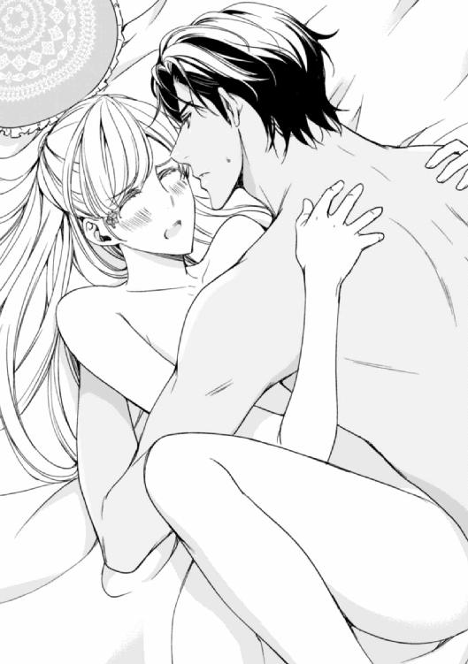
「ん......」
唇の上をなにか硬いものが触れたような気がして、ジャスミンは閉じていた目蓋をぱちぱちと瞬かせた。
なんだか頭がはっきりしない。一瞬自分がどこにいるのかわからなくなり、慌ててベッドの上に起き上がった。窓の外には、もう夜の闇が広がっている。虹色を放っていた真珠貝の壁が、しっとりとした飴色に染まっている。部屋の隅に置かれたティーポットにも似たアラビアのランプからは、炎と共になにか甘い香りが立ち上っている。
〝私、いったいどうしたのかしら......〟
なんだろう？ 今までにないほど、身体がずっしりと重いし、胸の先がじぃんと火照っている。
何気なく胸元に手をやり、指先でそこにあるであろう真珠の指輪を探した。だけど、いくらデコルテを探しても、触れるのは素肌ばかり。
「......え......？」
はっとして下を向くと、見えたのは裸の乳房と、なにもまとわないむき出しの下肢。
「やっ......！」
途端に記憶が蘇ってきて、ラシードに抱かれた時の痴態が頭の中を駆け巡った。
恥ずかしさのあまり、おろおろとあたりを見回すけど、身につけるべきものがなに一つ見当たらない。壁際の椅子にかかるドレスを見つけて、それを取ろうとして腰を浮かせた。その途端、背後から伸びてきた腕に身体を抱きとめられてしまう。
「どこへ行くんだ。まだ夜は終わってはいないが？」
「ラシード！」
薄暗くて、彼がいることにまるで気付かなかった。
「ああ、私だ。ずいぶん長い間眠っていたが、疲れが溜まっていたのか？ うん？」
これまでの彼の冷たい態度とは打って変わって、まるで甘やかすような話し方だ。彼のたくましい腕が、胸元をすっぽりと覆っている。背中に彼の硬い筋肉を感じる。腰に当たっている硬い何かが、さっきから気になって仕方がない......。
「えっ......、ど、どうかしら......。お蔭様で夜はよく眠れているし、食べ物も美味しいし、どこもかしこも美しいし快適だし......、ぁっ......」
ラシードが、ジャスミンの首筋にそっと舌を這わせた。そんな小さな刺激に、彼女の全身は小刻みに震え始める。
「ひ、昼間、ルクサーナと一緒にあなたが飼っている動物たちを見に行ったの。ラビも一緒だったわ。あの子、私にとてもよく懐いてくれているのよ。いつも、抱っこしてくれってせがんでくるんですもの......」
裸のままくどくどと話すようなことではないけど、黙っていると胸の鼓動を聞かれてしまいそうで、とりとめもないことをぺらぺらと喋り続けた。
「そうか。それはよかった」
話しながら耳たぶを食まれて、身体のありとあらゆる先端が敏感に反応する。
「君が眠っている間に、イギリスから手紙が届いた。差出人は、君の妹のエレインだ。テーブルの上に置いておいたから、後で読むといい」
「エレインから？ ありがと......あンッ......」
我慢できず小さく喘ぐと、ラシードは彼女を抱く腕をほどき、ベッドの上に仰向けに寝かせた。
そして、両の乳房を掴んで、やわやわと揉みしだき始める。
「ぃ、や......ぁんッ......」
目の前で乳房を揺すられ、指先で柔らかな乳暈をくすぐられる。
「君の乳房の味も感触も、舌がちゃんと覚えていた。さあ、もっと味わわせてくれ」
身体を仰向けに横たえられ、ラシードが上から覆いかぶさってくる。唇を重ねられて、うっとりと目を閉じると、左の頬に慣れ親しんだ指輪の輪郭を感じた。僅かに顔を左に向けると、頬を覆うラシードの中指に、彼がくれた真珠の指輪が嵌められている。
「あ......、その指輪......あなたのお母様の形見だと聞いたわ」
「ああ、そうだ。ずっと持っていてくれたんだな」
「ええ、無くさないようペンダントにして、肌身離さず持っていたの」
「そうだったのか」
こめかみと頬に小刻みにキスを落とすと、ラシードはジャスミンの目の前に指輪を示した。
「あの日、君の胸にキスして、どうしても離れがたく思って......。それで、僕の唇と舌の代わりに、これを残したんだ。君のここを、愛撫した証として。君が、いつまでも僕のことを忘れないでいてくれるように、と」
ラシードの指が、彼女の胸の先を摘み、軽く弄んだ。
「んッ......」
唇が重なると同時に、歯列を割りラシードの舌が入ってくる。裸の肌に、彼の身体の熱を感じて、知らぬ間に掌を彼の背中に這わせている。
「忘れてない......、私、あなたのことをずっと......ぁ、あっ！」
徐々に降りていく彼の舌が、両方の胸の先を巡り、緩くしなる腰の上に滑っていく。
「は......、ァン......、あ......！」
柔毛の中にある頂を軽く吸われ、びくりと腰が浮いてしまった。なにか小さく硬いものが頂に触れて、中にある芯をくるくると嬲ってくる。ガクガクと膝が震え、思わず物欲しそうに腰を揺らめかせてしまう。
「ひ、あぁ、んッ......ん、んっ！」
ラシードの指と共に、その丸いものが蜜泉の中に沈んだ。もうすっかり熱を帯びた膣壁の襞の中を泳いで、ジャスミンの一番の場所を擦り上げる。
「な、なに......？ なにか、中に......入って......、あ、ん、んッ！」
もう媚薬は使っていないはずなのに、どうして？ さっきよりも、もっと身体が融けてしまいそうに感じる。初めて知らされた自分の中に潜む淫欲のありかを、さっきから執拗に攻められている。硬いそれでとんとんとノックするように刺激されたり、襞の中に埋め込むようにこすり付けられたり。その度にベッドから背中が浮き、つま先にぎゅっと力がこもった。
「ああ、指輪だ。真珠で君のここを可愛がっているんだ。ほら、こんな風にも」
真珠の丸みが、淫壁の上でくるくると円を描き始める。
「あッ！ ンあっ......！」
抱かれている腰が何度も跳ね、喉に吐息が留まって息が苦しくなる。もう少しで達するというその時、いきなり指を引き抜かれ、すぐに硬く勃起した淫茎をじゅぷりと差し込まれた。
「ぁ！ あ、ぁあああ......！」
凄まじい快楽がジャスミンを襲って、彼を含んだ蜜泉が悦びに震え、どっと蜜を溢れさせる。
繰り返し痙攣する膣の中で、ラシードのものが更に硬さを増す。
「ラシ......ド......、ん......ッ、ん、ぁ......！」
繋がったまま脚を高く掲げられて、しとどに濡れる淫泉の中にずっぷりと彼が入っているのを目の当たりにする。
「いやぁ......」
恥ずかしくて仕方ないのに、身体がそんな仕打ちを悦んでしまう。
「はずかしいか？ 僕の物を、こんなにも悦んで咥え込んで......あぁ、すごい......。油断すると達してしまいそうになる......」
まるで打ち付けるように、ずぷずぷと彼のものを抜き差しされ、あまりの悦楽に耐え切れず絶叫する。
「は......、あンッ！ あ、ぁ！」
「ジャスミン......！」
ジャスミンの最奥に口付けたラシードの蜜茎は、その中で繰り返し力強く脈打ち、彼女の中に自身の精を満たしていく。ジャスミンの身体は、彼のものを味わうように戦慄き、まるで嚥下するみたいに中を波打たせている。
ラシードは、まだ震えている彼女の身体を抱き寄せ、首筋にキスを落とした。しばらくそのままで抱き合い、じんわりと残る睦み合いの余韻に身を任せている。
ジャスミンは、改めて自分とラシードの間に起きたできごとを思い返してみる。
それは、彼女がラシードに恋をした時から、ずっと頭に描いてきた夢のような展開。彼と結ばれ、彼を愛し、愛される──。
〝ずっと彼が好きだったわ......。その想いが、やっと通じたのね〟
ジャスミンの口元に、微笑みが浮かんだ。ふと思い立って、髪につけていたカメオの髪飾りを外し、掌に乗せた。
〝もしかして、これって身を守ってくれるだけじゃなくて、願いごとまで叶えてくれるの？〟
イギリスを出る時は、彼への想いを断ち切ろうとしていたのに、思いがけずこんな風に彼と身体を重ねている。
きっとこれは、幸運をももたらしてくれるお守りに違いない──。
思い込みと言われればそれまでだけど、今はそれが信じられる気がする。
こうなったら、彼に想いを告げよう。
長年彼を想っていた気持ちを伝え、同時に彼の気持ちも確認するのだ。
その上で、今後どうしたらいいか決めればいい。
そう思い、ジャスミンは手の中のカメオをぎゅっと握りしめた。今となったら、なぜもっと早く彼に素直な気持ちを打ち明けなかったのかと、自分を叱りたくなる。
最後の夜、体裁など気にせず、彼の呼び掛けに応えてドアを開けていたらどうだったろうか？
身分の差や、ちっぽけなプライドなんか捨てて、さっさと彼に告白の手紙を書いていれば、どうだったろう？
そんなことを考えていると、もう一秒でも早くラシードに想いを伝え、彼の気持ちを確かめたいという衝動に駆られる。
「ジャスミン、一つ聞きたいことがあるんだが」
「ええ、いいわ。私も、あなたに話したいことがあるの」
ラシードは、肩肘を立ててジャスミンを見つめた。その様は、まるで精悍で美しい獅子のようだ。うっとりと彼に見惚れているうち、ジャスミンの開いた掌から、カメオが落ちてしまった。
「これは？」
ラシードは、ベッドの上に落ちたカメオを拾い上げた。
「ふむ......素晴らしい工芸品だな。上質なコンク貝が使われている。ピンクから白へのグラデーションがとても綺麗だ」
彼は、感心したようにそれを目の前に掲げた。そして、じっくりとその細工に目を凝らしている。カビールは良質な真珠の生産地だ。カメオの髪飾り同様、加工するかそのまま輸出すれば利益が望めるだろう。
「ええ、素敵でしょう？ それは、ここへ来る前に、バーニーからもらったものなの。作りも素晴らしいけど、それだけじゃないのよ。私にとって、すごく意味のある大切なものなの」
やはりこれは、身を守るだけではなく、願いを叶えてくれる、幸運のお守りに違いない。そう思えば思うほど、なにもかもうまくいくような気がした。
〝イギリスに無事帰ったら、バーニーにお礼を言わなきゃ。そして、これを彼に返そう。そうすれば、きっと彼にもふさわしい人が現れるわ〟
そう思い、ジャスミンは口元に小さな微笑みを浮かべた。
微笑んでいる彼女の顔をじっと見ていたラシードは、カメオをジャスミンに返すとおもむろにベッドの上で身を起こした。
そして、さっきよりも低くゆっくりとした調子で話し始める。
「これは、シュルツ氏からの贈り物か？」
「ええ、そうよ。彼が、ここに来る前に、是非受け取ってくれって、私にくれたものなの」
「......そして、君はこれを大切にし、肌身離さずもっている......」
「ええ、そうよ。落としたら、大変だわ」
ジャスミンは、カメオを握りしめながら、ふとカメオの裏にメッセージが書かれていることを思い出した。
バーニーが、亡き妻に宛てた愛の言葉だ。だが、それを言う前にラシードが先に口を開いた。
「──そうか。わかった」
一瞬きつく目蓋を閉じたラシードは、目を開き、ジャスミンの顔をじっと見つめた。そして、カメオを彼女に返し、おもむろにベッドの上で身を起こした。
「さて......ジャスミン。今後のことだが──」
上から響いてくる彼の声に、ジャスミンは目を瞬かせてラシードを見上げた。
その顔は、いつの間にかとても冷たい表情を浮かべている。さっきまで寄り添っていた身体が、やけに距離を置いた場所に移動している。
「もう夜も遅いし、お互いに疲れている。単刀直入に言おう──君と関係を持ってしまったことについては、それなりの保障はさせてもらう。君がそう望むなら、このままこの国に残ってくれてもいい」
「えっ......？ 関係......保障って、ラシード......それってどういうこと？」
ついさっき融けるほど抱き合った熱が、急激に冷えていくのを感じた。
彼の真意を測りかねて、ジャスミンはそれきり口を噤み、彼の言葉を待った。気持ちを伝えようという決心は、もうすっかり行き場を失ってしまっている。
「保障というより、償いと言った方が相応しいか。まぁそれくらいは当然だろう。いくら媚薬に惑わされていたとはいえ、愛し合ってもいない、その上婚約者もいる君の処女を奪ってしまったんだから」
〝愛し合ってもいない？〟
ラシードの言葉に、ジャスミンは激しく動揺した。彼は、いったいなにを言っているのだろう？
さっきまでキスをし、身体を熱く交わらせていたのに、なにをいきなり──。
「僕は王でありシークだ。将来的には、妃となる人を迎え子を生す必要がある。不幸なことに、僕の第一王妃候補だった人はもう亡くなってしまったが、僕のところには政治的に意味もあり国益にもなる結婚話が、ひっきりなしに持ち込まれる」
ジャスミンの唇が、わなわなと震えだした。ラシードの言わんとしていることが、彼女の頭の中で徐々に明確になっていく──。
「結婚については、兼ねてから長老たちにうるさく言われている。具体的な話は、追々決まっていくだろうし、この際相手選びは長老たちに任せようと思う。だが、君は妃になるわけではないし、長老たちに相談するまでもない。異国の女性であることが異例だが、これについては目を瞑ってもらおう──」
「待って！」
ようやくラシードが言っている意味がわかり始めて、ジャスミンは声を上げた。
「それは......、私を妃としてではなく、妾としてハーレムに囲うってことなの？」
「囲うというのとは少し違う。それに、君をハーレムに置くつもりはない。ここではない違うところに君専用の宮殿を用意させるつもりだ」
妃ではない、妾として！ それどころか、将来的には妃を迎え、しかもそれは一人に限ったことではない──。
ラシードの申し出を理解すると同時に、ジャスミンは、全身の熱が急激に冷めていくのを感じた。
「ラシード......！ いったいなにを言っているか理解できない......。あなたは、私がそれを受け入れるとでも思っているの？」
起き上がり、そばにあったヴェールでできる限り裸の身体を隠した。
「実際そうするしか選択肢がないのではないか？ 君はもう処女ではない。それとも、それを隠して婚約者と結婚するつもりか？」
彼は、なにを言っているのか──。さっきまで身体を熱く交わらせていたのが嘘みたいに、ラシードの声は平坦で身震いするほど冷たく聞こえる。
「愛し合ってもいないのに、私をこの国に留めておくと？ 妃でもなく妾として！ 専用の宮殿？ あなたはいったい私になにを求めているの？」
ジャスミンの問いかけに、ラシードは意外そうな顔をして眉を顰めた。
「求める......？ 僕は君になにも求めようとは思わない。君は僕に処女を捧げた。そのかわり、僕は君に今後の生活の保障を与える。ただそれだけのことで、それ以上でも以下でもない」
「そんなのまっぴらだわ！」
気がつけば、ジャスミンは声を上げて叫んでいた。
せめて、愛を求めると言ってくれれば！ やはり、彼が言ったことは本当だった。彼は、愛を求めない──。さっきの行為には、愛はなかった！ ただ単に、身体を合わせるだけの、愛のない行為だったのだ。
「私は、妾になるつもりなんかないし、一人の男性を他の女性と共有する気もないわ！ しかも、そこには、愛もないのよ？ どうしてそんな状態でこの国にいられると思うの？ 冗談じゃないわ！」
そう言い終え、肩を上下させるジャスミンを見据えて、ラシードは僅かに首を傾げ、口元に薄い笑みを浮かべた。
「愛......。君の言う愛とはなんだ？ 婚約者がいながら、他の男に処女を捧げてしまう君が言う愛とは？」
「ラシード！」
あまりにもひどい物言いに、ジャスミンは声を失って持っていたヴェールをきつく握り締める。
「君とシュルツ氏は愛し合って婚約をしたんだろう？ なのに、君は僕に抱かれた。それはなぜだ？ 君の得意の好奇心か？」
ラシードの言葉に、ジャスミンはますます混乱した。
「実は、さっき届いたエレインからの手紙には、僕宛のものも入っていた」
「えっ？ あなた宛ての手紙？」
エレインが、わざわざラシード個人に宛てて手紙を書いた──。普段からあまり手紙を書かない彼女が、いったいなにを書き送ったのだろう？
「ああ。彼女は、手紙に書いていたよ。兄上のパトリックが亡くなった後、諸事情があって君と君の家族は、住んでいた邸宅や領地を失ってしまったそうだね」
「ええ......。そうよ」
エレインが、なぜわざわざそんなことまでラシードに書き送ってきたのか不思議だったが、それは間違いなく事実だ。
ラシードは、ふと目を細めジャスミンの持っていたヴェールの裾を摘んだ。
「どうやら君は今現在、財政難に陥っているようだね。そして、それをどうにかしようとして、実に懸命な決断をしたんだ。すなわち、誰か借金の肩代わりをしてくれる、金持ちの男性と結婚をしようと──」
ジャスミンは信じられない思いでラシードを見た。いったい彼はなにを言い出すのだろう？
冗談にも、言っていいことと悪いことがある。とはいえ、彼が冗談を言っているとは到底思えない──。
「違うわ！ 私は、お金のために婚約なんかしないわ！」
一度はそうした方がいいのかと思ったりしたけど、やはりそれは正しい結婚の形ではない。
「ほう。だとしたら、君は婚約者を愛しているというんだな？ だったら、なぜ僕に処女を捧げた？」
「それは──」
〝あなたを愛しているから〟
いっそ、そう言ってしまおうとも思った。それに、一応プロポーズはされたものの、バーニーとの婚約は、単なる便宜上のことだ。
だけど、ラシードの気持ちを知ってしまった以上、彼にそれを言って、今更なんになるだろうか。
それに、ちゃんと説明しようとすれば、ラシードへの気持ちも話すことになってしまう。
それを隠して上手く説明できる自信はないし、なによりも、彼はジャスミンから愛など求めていない。愛どころか、なにも求めようとは思っていないのだ──。
ジャスミンは、絶望的な思いで、彼から目を逸らした。
〝彼は私を愛していない。ただ単に、身体を求めただけ。そして、私をお金のために行動する女だと思っている──〟
ジャスミンの沈黙を受け、ラシードは再び口を開いた。その顔には、氷のように冷たい表情が浮かんでいる。
「どうも矛盾してるな。君はお金のために婚約したんじゃないと言う。だとしたら、君は婚約者に愛を感じて婚約した。だが、ここへ来てあっさり僕に処女を捧げ、悦楽に耽った。いったいなぜだ？ 女性とはかくも移り気で打算的なものだということか？ だったら、ここにいればいい。僕は君が必要とする金額を差し出す。君は、僕が好きな時に抱かれる。どうだ？ それで全て丸く収まるし、君の計画通りになるってわけだ」
「計画通り？ ラシード......！ それは、どういう意味？ ちゃんと説明してくれなきゃわからないわ」
自分の声が、震えているのがわかる。彼がなにを言い出すにせよ、自分がそれを受け入れられるとは到底思えなかった。
「それは申し訳ない。僕も少し混乱しているものでね......。違っていたら教えてくれ。君は家族思いの心優しい女性だ──。家族の財政を立て直すために、いろいろと頭を巡らせたんだろう。今は、愛よりもお金を優先すべき時だ。つまり、君は婚約者と僕を天秤にかけた。そして、より多くの富をもたらしてくれるだろう僕を選び、処女を差し出したんじゃないのか？」
何か言おうとするジャスミンを、ラシードの瞳が制した。
「──ともかく、君はこの国へ一人でやってきて、僕に処女を捧げた。そして、身体の悦びを知り、それに溺れた。実際、君との行為はすばらしかったからね。やはり、僕を選んで正解だったかい？ 僕もそう思うよ。君が婚約者と愛し合っていたにしろ、冷静に考えてみて、僕に乗り換えたほうが得策だからね」
「ラシード！」
彼は、ジャスミンが予想し得る答えの中で最悪のものを彼女に寄越した。
ラシードが言っているのは、ジャスミンが打算的で計算高い女だと言っているようなものだ。
つまり、彼はこう思っている。彼女がラシードに身を任せたのは、より多くの対価を得ようとしたからだと──。
ジャスミンは、絶望的な思いで彼の瞳を見つめた。二人の視線が交錯する。
「君は賢い。昔からそうだったね。昔も今も、僕は君に翻弄され、踊らされる。しかし、驚いたよ。まさか処女の君に誘惑され、君を心から愛している婚約者から、君を奪う卑劣な男をやらされてしまうとはね！」
咄嗟に振り上げたジャスミンの右手を、ラシードの左手が捕らえた。そして、そのまま腕の中に彼女を抱き込み、荒々しく唇を重ねる。
「んっ......！ ぃ、やっ！」
ラシードは、抗うジャスミンの唇をキスで追いかけ、身体を隠していたヴェールを奪い去った。
「愛なんか、よくよく考えたら、ない方がいいと思わないか？ そんなものは、邪魔なだけだ。嫉妬や謀略、争いごとなど招きたくないなら、義務と権利だけの結びつきでいい。その方が管理しやすいし、簡潔でわかりやすい」
あらわになったジャスミンの乳房を、ラシードの掌が鷲掴みにしてくる。
「愛なんかない方がいい......？ その方が管理しやすいですって？ いったい、あなたはなにを......ぁっ！」
「素直に認めたらどうだ？ ここにいれば、君は自由だ。アレックスのように、広い世界を見ることもできるし、探検の旅に出るのも可能だ。王である僕が、それを叶えてやる」
ラシードの指が、ジャスミンの蜜泉の中に沈んだ。すると、また一気に身体が熱くなり、そうしたくないというのに彼の指をきつく締め付けてしまう。
「媚薬なんかなくても、幸い僕たちは身体の相性がすこぶるいいみたいだ。この調子なら、すぐに子供もできるだろうし、そうすれば君の地位も確立する。どうだ？ 実際、シュルツ氏に抱かれるよりは、何十倍も悦びを感じられるはずだ」
「あ、ぁあッ......！」
彼の指に反応して、身体のあちこちに熱を感じる。だけど、心が痛い。
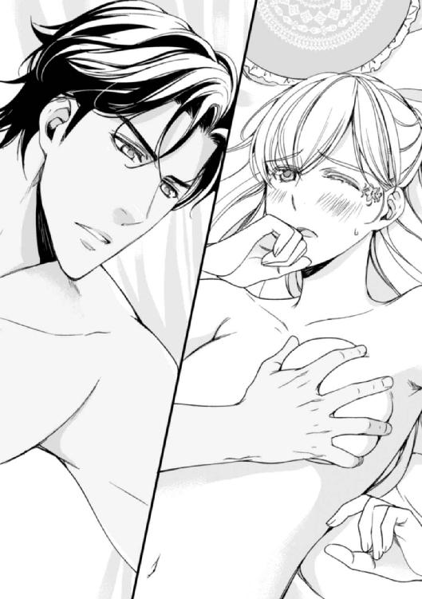
〝ラシードは、私を蔑んでいる......！ 肉欲と打算で心をうつろわせたと思っている！〟
「忘れてはいけないのは、君が大切な友達であるアレックスの妹だということだ。過去にちょっとした個人的な繋がりもあったわけだし、どうせなら仲良くやろう。心からの愛がなくても、身体ではこんなにも愛し合える。ほら、言っている先から蜜が溢れているぞ」
「あ、んっ！ は......ウンッ！」
「ジャスミン、ちょっとした好奇心で聞くんだが、君は本当に婚約者を愛していたのか？ それとも、そちらの愛も打算だったのかな？」
ラシードは、ジャスミンの蜜泉の中を弄りながら、空いた指で淫芽を摘み硬くしこってきた芯を指先で捩じってくる。
「あ、ぁあッ......！ い、やぁ......！」
いきなり脚を左右に広げられて、そそり立った淫茎を蜜泉のほとりにあてがわれる。
ランプの灯りに照らされ、琥珀色に染まる先端がぬらぬらと艶めいている。押しのけて、嫌だと言えばいいのに、なぜかそうできない。こんなにも侮辱され、愛がないことを告げられているのに、身体のみならず心がまだ彼を愛し、欲している。
「ジャスミン......。なぜ答えないんだ......」
低く抑えた彼の声に、なぜか怒りとともに苦痛が潜んでいるような気がするのはなぜだろう。
それに、優しさも......。それとも、ただの気のせいだろうか......。
「んッ......！ ぁ、あ......」
ラシードが、ゆっくりと奥深く入ってくる。そして、じっくりと味わうように腰を動かし、襞の一枚一枚を奏でるように抽挿を繰り返してくる。
そんな風にされると、また濡れてしまう。こんな状況になってもなお、想ってしまう。
今も愛しているのに、もっと愛してしまいそうになる。愛がないなら、いっそ冷たく抱いて、捨て置いてくれた方が心が傷つかずに済むのに──。
さっきのことがなければ、泣きたいほど優しいラシードの腰の動きに、ジャスミンは心と身体がばらばらのまま絶頂を迎えた。
お互い無言のまま身支度を整え、呼吸の乱れが収まるのを待つ。ジャスミンは、立ち上がったラシードが手にしたランプの炎をじっと見つめた。黄金でできたランプには、向かい合っている獅子が描かれている。
「あなたにとって、私は白い動物たちと同じなのね。だけど、彼らに注がれる愛すら、私にはくれないんだわ......」
ひとり言のようにつぶやいたジャスミンの言葉に、ラシードはただ黙ったまま彼女の身体に柔らかな絹の織物を掛けてやった。
「アレックスは必ず見つける。それだけは約束する」
そうつぶやいたラシードは、くるりと背を向け、視線を合わすことなく部屋の外に去っていった。
◇ ◇ ◇
ラシードと身体を重ねて数日が経ったある日の午後、ジャスミンはルクサーナと共に庭にある噴水のほとりに座っていた。
ここのところまるで元気のないジャスミンを気遣い、ルクサーナはイギリスのお茶に甘いナツメヤシの実を添えたものを侍女に用意させ、彼女に勧めた。
ラシードとの間になにが起きたか。それについては、ある程度はルクサーナにも話してある。
彼の胸の内まではわからないが、自分の本当の心と事実だけは彼女に伝え、わかってもらった。
「ラシードは、ああ見えて繊細なのよ。あなたに関する誤解については、今は無理でも少しずつ解いていかなくては。あなたたちの間には、二つの大きな問題があるわ。一つ目は、彼があなたの本当の気持ちを理解していないこと。そしてもう一つは、彼自身が、本当の気持ちを偽ったままでいることだわ」
ルクサーナのセピア色の瞳が、ジャスミンの藍緑色の瞳を見つめる。
ラシードの本当の気持ち？
彼女は、この期に及んでもまだ彼の中にジャスミンへの愛があることをあきらめていない。
そして、本当の姉のように彼を庇護し、信じているのだ。
「ジャスミン、わかってあげて。彼は、きっとあなたを愛している。だけど、王としての立場と、これまでに起きた悲劇が、彼が愛に正直になることを許さないのよ。彼をわかってあげて。そして助けて。このままだと、彼は愛を遠ざけたまま生きて行くことになる。そんなの駄目よ......だって、あなたたちは本当は、心から愛し合っているのに......！」
美味しいはずのお茶も甘い果実も、まるで味気ないし色あせて見える。
彼女は、執拗に彼がジャスミンを愛していると言うけど、耳の奥に残るラシードの冷めた声と愛を否定する言葉が、それを信じさせてくれない。
いっそ、彼の愛を盲目的に信じることができたら──。
「でも、ここまで話がこじれてしまっては、もうどうしようもないと思うわ」
ジャスミンは、味のしないお茶を一口飲み、ため息をつく。
「それに、どのみち私には無理よ......。この国の生まれでもないし、彼にとって何の利益ももたらさない......。仮にラシードのそばにいるとしても、妃としてじゃない......」
先王のハーレムに生き、彼を愛したルクサーナにとって、ジャスミンが言わんとすることは容易に察せられる。
「わかってるわ。愛する人を他の人と共有するなんてこと、あなたには耐えられないわね」
ルクサーナは、ジャスミンの白い手にそっと掌を重ねた。
「それについては、私にはどうしようもできない。ただ、ラシードがあなたをここではなく、宮殿に住まわせるつもりなのは、きっと特別なわけがあるんだと思うわ」
「どうかしら......。でも、私はどのみちここにはいられないわ。妹とも約束したの。必ずアレックスを見つけて帰って来る、って。それに、もう私には指輪がないのよ」
八年前にラシードがくれた真珠の指輪が。
ラシードが真珠の指輪を使って彼女を愛撫したあの日、彼はそれを指にはめたまま持ち去ってしまっていた。かつて彼が自分のことを忘れないでいてくれるようにと願い、胸の先につけてくれた指輪は、もう二度と彼女の元には帰って来ない。二人を繋いでいたそれは、永遠に彼女から離れていってしまったのだ。
それから一週間ほどが経ち、一見平穏な日々が続いている。気晴らしにと、誘われていったルクサーナの宮殿は美しかった。届けられたエレインからの手紙にも、特になにも問題は起きていないしバーニーも順調に回復していると書いてあった。
ただ、あれから一度もラシードと会っていない。ハーレムの中はおろか、宮殿の中にも姿が見えず、アシムによれば、ずっと隣国のアジャスタ国に行ったきりなのだという。
「ジャスミン様！」
その日の午後、アシムがハーレムの中に駆け込むようにして入ってきた。
「どうしたの？ そんなに慌てて！」
ジャスミンが振り返ると、普段決して取り乱したりしないアシムが、珍しく息を切らしている。
「アレックス様が見つかったそうです。そのことを知らせるラシード陛下からの使者がたった今到着しました」
アレックスが見つかった！
彼は元気で、命に別条はないという。
そして、使者が言うには、ラシードは、とりあえずジャスミンにアジャスタ国まで来て欲しいらしい。詳しいことは、彼女が現地に着いてから、ラシードが直接話すと──。
「いったいどうしたのかしら？ なんだか心配だわ......。ねぇ、ジャスミン。私もあなたと一緒にアジャスタ国に行くわ」
ルクサーナが言うと、ジャスミンは不安そうだった表情を、ほっと緩めた。
「ええ、ありがとう。そうしてくれると私も心強いわ」
大急ぎで準備し、アシムを始め何人かの従者を連れてアジャスタ国へと向かった。隣国であり、多少の国交はあるものの、両国の関係はまだ細く歴史も浅い。
アジャスタ国の王であるハーキム・ワハブ・サッタールは、齢五十七歳にして三人の妃と十人の子供がいる。閉鎖的で頑固な性格ゆえに他国との交流を嫌い、その分文化的な遅れはあるものの国として結束力は近隣諸国の中で随一と言われている。
宮殿のある都まで二日を要して、やっと辿り着いたジャスミンは、待っていたラシードから驚きの事実を聞かされてしまう。
「アレックスは、今牢につながれている。彼は砂漠で怪我を負い、この国の王女であるアイーシャ姫の一行が、ラクダで移動中に拾われたらしい。そして彼女の宮殿に連れて帰られたはいいが、意識が混迷する中で姫の顔や肌を見てしまったらしい。しかも、かなりの部分を......」
アジャスタ国は、アラブの国の中でも特に戒律が厳しい。いきさつはどうあれ、これは由々しき事態だ。しかも、相手は一国の王女なのだ。
「なんですって......、じゃあ、アレックスはどうなるの？ まさか......」
恐怖の色を顔に浮かべるジャスミンに対して、ラシードはきっぱりと首を振った。
「アレックスは大丈夫だ。国同士の関係性もあるし、王もそこまで厳しい罪には問わないだろう。そうでなくても、僕が責任を持って交渉する。必ずアレックスを助け出してみせる。それは、君との約束でもある」
ラシードの強い意志を持った視線が、ジャスミンの瞳を捉らえた。その瞳を見ただけで、信じられる。ジャスミンは、こっくりと頷き、彼の瞳をじっと見つめ返す。
「さぁ、王のところへ行こう。僕たちは、表向きは王の客人ということになっている。実際、今後両国の関係について話し合いも平行しておこなっているんだ」
アジャスタ国はカビール国よりも歴史は古く、宮殿も主にレンガでできており、カビールのものと装飾は似ているものの、決定的に色彩の豊かさがない。それでも、その規模の大きさは見る者を圧倒するほどで、一行が石畳の回廊を歩く音が、まるで楽器の中にいるように四方に響いている。
「ようこそ、アジャスタ国へ。遠路はるばるたいそうご足労でしたな」
玉座に座り、迎えてくれた王ハーキムは、事前に聞いていたほどには強面でもなく、ジャスミンやルクサーナに関して言えば、むしろ好意的に思えた。
ここアジャスタ国でも、女性は同じように肌を隠している。しかし、意外にも顔は目元だけしか出さないカビール国とは違い、髪の毛さえ隠せば顔は出してもいいみたいだ。例に倣い、ジャスミンたちもいつも顔を覆っているニカブを取り、髪の毛だけをきっちりと隠してみる。
「すごいわね。なんだかドキドキするわ。いくつか国を渡り歩いてきたけど、どこの国も家族以外の人の前でこんなに肌を出すことってなかったもの」
小声で話しかけてくるルクサーナは、久々に訪れた外国に少々興奮気味だ。
王族を始め部族の重鎮や従者が入り混じる謁見の場では、アレックスの件は一切口にしないようラシードに言われている。さすがに王族に関係することとあって、ラシードがここへ訪れた真の目的を知るものはあまりいない様子だった。
ほどなくして、ラシードは王と話し合いの場へ、ジャスミンとルクサーナはすぐに宮殿内の客室に案内され、彼女たちは部屋で荷物をほどいていた。
「せっかくここまで来たのに、アレックスに会えないなんて......。今どうしているのか、心配で堪らないわ。どうにかして会えないかしら......。それに、アイーシャ王女にもお会いしてお礼を申し上げなくては」
事前に申し出ていたものの、今のところアレックスにはラシードだけが会うことを許されている。
「とりあえずお兄様は元気にしていらっしゃるんでしょう？」
「ええ、ラシードが言うには、とても元気らしいわ。まったく、自分の置かれている状況を理解しているのかしら？ アレックスは、昔から楽天家すぎるのよ」
深いため息をついて、ジャスミンはふと部屋の入り口を見た。
「あら？ あなたは？」
見れば、部屋の入り口に男の子が立っている。まだ小さいが、たぶん王族のうちの一人なのだろう。薄い山吹色のカンドゥーラに身を包んで、こちらを見てにこにこ笑っている。
「はじめまして、私はジャスミン・バークリーよ。あなたは？」
アラビア語で話しかけると、男の子は嬉しそうな顔で部屋に入ってきた。
「はじめまして。僕はリゲル・ワハブ・サッタールです」
はきはきと答えるその少年は、どうやら王の一番末の息子らしい。
「まあ、この国の王子様なのね。よかったらお菓子をどうぞ」
持参していた甘いお菓子をあげると、リゲルはにっこりと笑い、お礼を言った。日頃から子供好きのルクサーナは、慣れた感じでリゲル相手にちょっとした手遊びを始めた。歳を聞くと、今年で七歳になるという。リゲルは、すぐに二人と打ち解け、特にルクサーナにはあれこれと話しかけて、楽しそうに笑い声を上げる。
数時間の後、リゲルが従者と共に帰っていってから、ジャスミンは部屋の片づけをしているルクサーナに向けて言った。
「ルクサーナったら、あっという間にリゲルと仲良しになったわね。すごいわ。子供の扱いに慣れているのね」
「まあね。私がまだ小さい時、同じように奴隷として集められた子供たちと、大きなテントの中で支えあって暮らしていたから。あの頃のことを、たまに思い出すのよ。辛いことも多かったけど、友達がいて楽しかった。たぶん、リゲル王子にはそんな風に思える友達がいないんだと思うわ」
その日から、リゲルはちょっとした合間をみてはジャスミンたちのもとを訪れるようになり、三日目の夜には、ついにルクサーナと一緒に眠りたいと駄々をこねた。
王の許可を得て、ルクサーナが王子の部屋に泊まりに行くということになったが、それ以来リゲルはルクサーナにより一層べったりになってしまっている。
「リゲル王子の母親である第二王妃だった方は、彼を出産した時に亡くなったらしい。そして、彼は小さいながら、そのことをとても気に病んでいるそうだ。王がそう教えてくれたよ」
到着して四日目の午後、王との話し合いから戻ってきたラシードが、ジャスミンの部屋を訪れて言った。
「彼がもっと小さい頃、誰かが王子に吹き込んだようだ。王子が生まれるのと引き換えに、王妃がなくなったんだと──それを聞いて以来、王子はあまり笑わなくなってしまったそうだ」
「ひどいわ。誰がそんなことを......。リゲルはまだ子供なのに......」
ルクサーナは小さな声でつぶやき、辛そうな顔で下を向いた。
「この国の医療は、ずいぶんと遅れている。それを改善するためにも、王は貿易以外にも他国との交流をすべきだという考えに思い至ったそうだ」
その件に関しては、カビール国は全面的に協力する準備がある。アレックスの件を差し引いても、両国の民が健康を保ち、共に発展していくことは、砂漠に住む人々にとっても決して悪いことではない。そうラシードは考えているのだ。
「カビール国は、これまでもヨーロッパとの貿易に関して、アジャスタ国に助言や支援をしてきた。王は、これからもカビール国にはいろいろと協力を要請したいと言っておられる。そのことについてもやぶさかでない。王は、あれでなかなかの交渉術を心得ている。協力なくしては、アレックスの開放もないと言いたいのだろう」
交渉は引き続きラシードとハーキムとの間で行われており、ジャスミンはあいかわらずアレックスとは会えないまま、手持ち無沙汰な日々を送っている。
ラシードはと言えば、滞在中に何度かカビール国に帰国し、両国間の条例の締結に向けて日々忙しくしている。
「アレックスが心配だわ......。鎖で繋がれているわけでもないし、食べ物を与えられていないわけでもないけど、もうずっと幽閉されたままでいるんですもの......」
アレックスが捕らえられているのは、宮殿近くに建てられた塔の地下なのだという。
「でも、とりあえず元気ではいるらしいわ。これも全部ラシードのお陰ね......。彼がいなかったら、きっとこんな風に交渉すらできなかったでしょうね」
アジャスタに来て七日目の午後、ジャスミンはルクサーナと一緒にお茶を飲んで話していた。
と、そこへラシードが入って来て、たった今言い渡されたと言うハーキムからの提案について話し出した。
「ここへ来て、王がとんでもないことを言い出した......。彼は、ジャスミン──君を自分の妃に迎えたいと言っている。そもそも君をここに呼んでくれと僕に要請したのも、そういった思惑があってのことだったらしい」
「えっ？ 私を......？」
突然のことに言葉を失ったジャスミンは、厳しい表情を浮かべて立ち尽くしているラシードの顔を見入った。
「君がアレックスを探しに来ていることを、王に話したりするんじゃなかった......。王は、今後他国との交流を進めていくためにも、英語を話す異国の花嫁を迎えることをもともと考えていたそうだ。そして、もし受けてもらえるなら、アレックスの罪は一切問わないと約束するそうだ」
「まさか、そんな！ それじゃあジャスミンを人身御供として差し出せと言っているようなものじゃないの！」
それまで黙って聞いていたルクサーナが、立ち上がって声を上げた。
「事実、そう言っているんだと思う。王は、貿易や医療に関する話し合いに関しては、比較的柔軟な考えを提示して、こちらの要望もほぼ飲んでくれている。が、ことアレックスの件に関しては人が変わったように頑固だ。だが、こればかりは受け入れることはできない......ばかばかしい！ ぜったいに駄目だ！」
ラシードの低く唸るような声が、部屋の中に響いた。
「ええ、もちろんだわ！ でも、どうすれば......。もしそれを断ったら、アレックスのことはどうなるのかしら？」
ルクサーナは、眉を曇らせてラシードを見る。
「それについては、今後の話し合い次第だ。両国間で交わす条例のこともあるし、さほどひどいことは言ってこないと思うが......」
「そうね......」
ルクサーナは、沈痛な面持ちでジャスミンに視線を移した。ジャスミンは、しばらくじっと壁際の椅子に座り、考え込んでいた。そして、下を向いたままおもむろに立ち上がると、なにかを決心したかのように、ぐっと顔を上げた。
「私、ハーキム陛下とのお話をお受けしようと思うわ」
「なんですって？」
ジャスミンの言葉に、ルクサーナが驚きの声を上げた。
「ジャスミン！ 君は自分がなにを言っているかわかっているのか？」
ラシードは、ジャスミンのそばに駆け寄り、彼女の腕を掴んだ。
「ええ、わかっているわ。だって、それが一番確実な方法でしょう？ 私は、彼を助けるためにイギリスを出て、こんなところまで来たのよ。だから、そうするのよ。少なくとも、前向きに考えて、ハーキム陛下と一度それについて話してみようと思うわ」
そう言い切った割には、最後の方の言葉が、あきらかに震えている。
「それに、これを断ったら、今後この件であなたやあなたの国に迷惑がかからないとも限らないわ」
「駄目だ！ それを僕が許すとでも思っているのか？」
ラシードは、ジャスミンの腕を掴む手を彼女の背に回して、そのまま無言で自分のために用意された部屋へと引っ張っていく。
「ラシード！ なにをするの？ 離して！」
「いいから来るんだ！」
部屋に着くと、ラシードはジャスミンを腕に抱きこみ、石畳から一段高くなった寝床へと押し倒した。
「君を行かせない！ そうさせるわけにはいかない！ 絶対に、だ！」
激しく感情を溢れさせている彼の瞳が、薄暗い部屋の中で鈍く光を放つ。
「どうして？ だって、それが一番いいのよ！ アレックスを助けなきゃ。妹と約束したのよ、必ず連れて帰って来るって」
ジャスミンが起き上がろうとしても、ラシードは全力でそれを阻止する。
「離して、お願い──」
「駄目だ！ 僕だって君と約束した！ 君を守ると──。君はもう覚えていないだろうが、確かに約束した。君がもし、将来僕の元に来るようなことがあれば、僕が君を全力で守ると！」
それまで懸命にもがいていたジャスミンの身体が、突然動きを止める。
彼が言った言葉──それは、まぎれもなく八年前の嵐の日に、彼がジャスミンに言ってくれた言葉だ。
「覚えてるわ！ 忘れてなんかない......一言一句、覚えているわ」
それを聞いたラシードの唇が、かすかに震えた。
「『君がもし、将来僕の元に来るようなことがあれば、僕が君を全力で守ってあげるよ。君が恐怖に捕らわれたら、それを粉々に蹴散らしてあげよう』って......」
ラシードの腕が、彼女の身体をきつく抱き締め、唇を強く押し付けてくる。
「......ラ......シ......、んッ......」
久々に感じた彼の熱と力強さに、ジャスミンの全身は一瞬にして蕩けた。
「覚えていてくれたのか......。だったら、なおさらのことだ......！ 君をハーキムの妃にするくらいなら、僕の心臓を抉り取って王に差し出したほうがマシだ！」
「ぁ......ッ！ ぃ、ラシードッ......！」
ジャスミンが着る紅色のドレスを、ラシードの手が捲り上げる。そうして、唇に貪るようなキスを落としながら、性急に身体を繋げようとする。
「いけないわ、ラシード......、こんな......ッ、あ、ァンッ！」
他国の宮殿の一室、しかも王の来賓のための部屋で、こんな淫らな行為に及ぶなんて。抵抗するジャスミンだったが、男であるラシードの力には抗えずに、あられもない恰好にさせられてしまう。
「君はわかってない......。僕がどんなに君を......！」
「ぁ、あ、んッ......、ぅ......！」
声が漏れないよう、キスで唇を塞がれ、いつの間にかもう濡れそぼっていた蜜泉の中に深々と彼のものを埋め込まれた。最奥に到達してもなお強く突かれて、ジャスミンは気が遠くなるほどの恍惚を味わいながら、目の前にあるラシードと視線を合わせた。
〝あの時と同じ瞳......。私を守ると言ってくれた、あの時と同じだわ......〟
行為は強引で一方的でも、抱き締めてくれている腕や瞳に優しさを感じる。あいかわらず、彼を前にしただけで、心が震え身体が反応する。
「ラシード......、なにがわかっていないの？ お願い......、ちゃんと言って？ あなたは、さっきなにを言おうとしてたの？」
ジャスミンの問いに、ラシードは重ねていた胸元をいきなり引き剥がした。
身体は繋がっているのに、心だけ引き離されたみたいに。
「君はわかってない......。僕がどんなに君を愛しているか......」
「なんですって......？ 私を......愛しているって......？」
思いがけない彼の言葉に、ジャスミンは頭を混乱させたまま、言いよどんだ。繋がったままの身体が、彼の言葉に敏感に反応する。
「で、でも......、あなたは私にはなにも求めないと言ったわ......！ 愛なんか必要ないって......わからない......、ラシード。だったら、なぜ私を遠ざけるの？ 愛しているって......私の身体だけ愛しているということ？」
「違う、ジャスミン！ 決してそうじゃない。僕は......君を心から愛している。だけど、君は僕を愛していない。それがわかっていながら、僕は君を何度も──」
ラシードが、苦しそうな表情を浮かべる。その様は、さっきまでの冷徹な彼とはまるで別人のようだ。いきなり身体から彼のものを抜き去られて、身体の中が空っぽになってしまったような気がした。
「ラシード......！ なにを言うの......。愛してる......愛してるわ！ 私だってあなたを愛してるわ！ 心から、愛してる......！ もう八年も前から！」
ジャスミンの叫びに、ラシードは驚いたように彼女の瞳を覗き込んだ。
「本当か......？ でも、待ってくれ。じゃあ、あの手紙は......」
「手紙？ 手紙って──」
「エレインが僕にくれた手紙だ。それには、君がここへ来た目的──アレックスの件とは別の、もう一つの目的について書いてあった」
もう一つの目的とは、ジャスミンが、ラシードへの想いをきっぱり断ち切ってしまうというもの。それを彼はエレインの手紙で知ったのだろうか。だとしたら、なぜあんなにも冷たい仕打ちをしたのだろう──。
「ねぇ、ラシード、エレインの手紙には、なにが書いてあったの？」
ジャスミンの真剣なまなざしを前に、ラシードはしばらくじっと考え込むようにして彼女の顔を見つめていた。
「君の家族が負った負債の件と、そのせいで君が意に沿わないことをしようとしている、と......」
ラシードの顔には、混乱した表情が浮かんでいる。
「ラシード......。私は、あなたを愛してるわ。それだけは、間違いないし、私の本当の心よ。......お願いだから、信じて──」
絡み合う視線が、お互いの気持ちを知りたがっている。
「よし、わかった。君にエレインからの手紙を見せよう。あいにく、途中雨にでもあったのか、一部字が滲んでしまっているが」
ラシードは、手紙を取るために立ち上がった。
そして、手渡されたエレインからの手紙──それは、彼が言うとおり一部の字が雨に滲み、読み取れなくなってしまっていた。
「親愛なるラシード陛下
取り急ぎ 用件のみの手紙をお許しください。
かつてひと夏を共に過ごしたことを、覚えていらっしゃいますか。
ジャスミンと私は、今でもあなたのことを話したりしています。それくらい、あなたと過ごした夏は思い出深いものでした。
すべてを正直に書きます。そのうえで、あなたの判断にすべてをお任せしま......
ジャスミンは、あなたの国に、アレックスを探しに行きました。それは、私たち姉妹の第一の目的です。そして、ジャスミンには、もう一つの重大な目的があるのです。
それは、あなたと再会して......
私たち姉妹は、亡兄パトリックの......
全財産を失い、住むところさえなくなくなり......
そのため、姉は、本当に愛している人への想いを捨て、好きでもない......
......の贈り物を、肌身離さず持っています。
それだけ、贈り主の事を想っているのです。それだけ深く愛しているんです。
......本当の気持ちを......
......うか、姉を止めてください。彼女は、自分の意に沿わないことをしようとしています。
このままでは、みんなが不幸になりそうで、怖いのです。
あなたが、正しい判断をされることを信じています。どうか、姉を正しい方向に導いてください。決して、判断を誤らせないでください。それは、あなたにしかできないのです。
エレイン・バークリー」
全体を通すと、字が滲んでいる部分はそんなに多くはない。だけど、その読めない部分のせいで、エレインが伝えようとしている内容が、微妙にわかり辛く、しかも取り方によってはとんでもない勘違いを引き起こしてしまいそうな文面になっている。
「ラシード、これをあなたはどう解釈したの？」
聞くのが怖い気もする。だけど、間違いが残らないよう、ちゃんと確認しておかなければ。
ジャスミンに促され、ラシードは話し始める。
「最初これを読んだとき、君は借金のせいでシュルツ氏と婚約を決めたと思った。そして、もしかして、手紙に書かれている〝本当に愛している人〟というのは、僕のことじゃないかと思った。君は僕に処女を捧げてくれたし、なにより、本当にすばらしい時間を過ごせたから──」
ラシードは、ジャスミンの髪の毛を指で梳いた。彼の大きな掌を感じて、ジャスミンは彼の目を見ながら、気持ち良さそうに目を細めた。
「君は、僕があげた指輪を肌身離さずもっていると言ってくれた。だから、もう間違いないと思い、僕は天にも昇る気持ちになったよ──。だけど、そう思った矢先に、君がシュルツ氏から贈られたカメオの髪飾りを見てしまった。君はそれが、意味のある大切なもの、肌身離さず持っている、と言ったね」
ジャスミンは、はっと息を飲み、僅かに首を縦に振った。
「僕は混乱した──。もしかして、手紙を見て、そうだと思っていたことは、とんでもなくおめでたい思い違いなんじゃないかと......。つまり、二人の愛を誓う言葉が刻まれたその髪飾りこそが、手紙に書かれていた〝贈り物〟であり、シュルツ氏こそが、君の〝愛する人〟なんだと──」
ラシードの顔に、苦しそうな表情が浮かぶ。ジャスミンは、彼の腕に縋りついて頭を振った。
まさか、エレインの手紙が、そんなとんでもない勘違いを導き出していたとは──！
「違うわ！ ラシード、それこそ思い違いよ！ エレインの手紙に嘘はないし、彼女があなたになにを言おうとしているのかもわかるわ！ 彼女は私を心配し、私のためを思って──。ああ、全部説明させてちょうだい！」
ジャスミンは、ラシードに、これまでの経緯を話した。長兄の死から、バーニーとの婚約話が出るまでのいきさつ、ここへ来る決心をした時のことや、カメオの髪飾りを渡された理由。そして、カメオがいかに、この旅でお守りとしての役目を果たしているか、を──。
「......じゃあ、君はシュルツ氏を愛しているわけじゃないのか？」
「私が愛しているのは、あなたよ、ラシード！ 神に誓って！」
ジャスミンの言葉に、ラシードはしばし呆気に取られたように動きを止めた。
「バーニーとは、実際は婚約していないの。もちろん、彼は真摯な気持ちで申し出てくれたわ。でも、それは男女の愛から出たものじゃないの。亡くなった兄に対する恩返しの気持ちからなの」
「──婚約はしてない......。なぜそれを言わかったんだ？ もしや、僕がそれを聞こうとしなかったせいか？ 君は僕になにかを伝えようとしていたのに──」
ラシードの顔に、悔恨の色が浮かぶ。
「いいえ、これについては私が悪いの。元々、未婚の男女が長旅をするっていう体裁の悪さをなくすための嘘だったの。でも、私にはもう一つ、ここへ来る目的があった──この旅の中で、あなたへの想いを断ち切ること。それをするのに、婚約者がいるってことにした方が上手くいくんじゃないかと思って──」
今更ながら、自分がとった行為を呪いたくなる。
胸の奥が痛くなり、涙がこみ上げてくる。
「わ......私、ずっとあなたのことを想っていたわ。好きだったの。たぶん、初めて会った時から。だけど、あなたは八年前に私の前から消えてしまった。私、待っていたの。きっとあなたからの連絡があると信じてたわ。でも、違ってた。あなたは連絡をくれなかったし、自国で王になってもう私のことなんか忘れたんだと......だから、私も忘れなきゃって......、ぁっ......」
彼女の頬を伝う涙をキスでぬぐいながら、ラシードは、ゆっくりとジャスミンの中に入ってくる。ゆったりとした波のような抽挿に、ジャスミンは恍惚となり、上体を仰け反らせる。その首筋にキスして、ぴったりと身体を重ね合わせた。
「それは違う、ジャスミン......！ 君を忘れたことなんかなかった。忘れようと努力したし、実際忘れたと思っていた。だが、そうじゃなかった。君に再会して、思い知ったよ......僕は、君のことを愛している。八年前、君に会って、君の唇と胸にキスをしたのは、君を心から想っていたからだ」
ラシードのキスが、ジャスミンの唇を塞いだ。甘く蕩けるようなキスと、身体に与えられる緩い快楽が彼女の蜜泉をうごめかせる。
「僕は、君に嫌われたと思っていた。嵐の日の夜、君は部屋に閉じこもって出てこなかったね。だから、君と話そうと夜中に君の部屋の扉を叩いた。だけど、君からもらえたのは素気ない言葉で......」
「ああ、ラシード......！」
なんということだろう。八年前のあの夜、二人は想い合いながらすれ違っていた。
本当に些細な行き違いだ。だけど、それがその後の二人の人生を、これほど大きく左右するとは──。
「あの時、私はまだ十五歳だったのよ！ いろんなことに慣れていなかったの。初めての愛だったのよ......だから、あなたにキスをされて、どうしていいかわからなくて......」
「そうだったのか？ 僕はてっきり君に拒絶されたものと思っていた。そして、男としてのくだらないプライドが、君への想いを邪魔して......！ 僕だって君を愛している！ ジャスミン......。心からだ。愛してる......もうずっと前から」
彼の言葉に、ジャスミンの目が驚きで見開かれる。囁くような彼の告白と共に、甘いキスがジャスミンの唇を溶かした。
「僕は、初めて君を見た時、君のキラキラした藍緑色の瞳に心奪われたんだ。君の自由な心、個性、全てが僕を魅了して止まなかった──僕の方こそ、子供だった。子供なら、いっそ素直に気持ちを伝えればよかったのに──」
ゆっくりと愛でるように膣の中を奏でられて、溢れ出る蜜の中にラシードの茎幹に淫襞が絡みついて痙攣する。
「国に帰ると、いろいろなことが僕を待ち受けていた。そんな中、僕はイギリスで得た自由な発想を忘れてしまっていた......一国の王である自分と、君を愛する一人の男としての自分──それは、相容れないものだと思い込んでいた。だが、そうじゃない。どうするかは、僕の意志で決め、その上で歩むべき道を行けばいいんだ──」
「ぁあ、ラシード......。お願い、もう動かないで......。あなたの、大切な言葉を......、聞き逃してしまうわ......」
ジャスミンの懇願に、ラシードはしぶしぶながら動きを止め、彼女の身体をいったん解き放った。そして、改めて唇にたっぷりとしたキスを落として、彼女の身体をしっかりと胸の中に抱え込み、更に軽く唇を求め舌を絡めた。
「君がアレックスを探すためにこの国に来ると知らせを寄越した時、正直逃げ出したい思いに駆られた。君に会うのが怖かったんだ。かつて胸に抱え、無理矢理押さえ込んだ想いが、また燃え上がってしまうんじゃないかと......」
ラシードは、掌でジャスミンの身体の線をなぞり、胸の先を指の間に挟んだ。
「そして、案の定そうなってしまった。君を一目見るなり、僕は君を欲した。できることなら、八年前のような関係になりたいと──同時に、頭の中で警鐘が鳴った。君に関わっちゃいけない。僕に関わると、君はきっと不幸になると......君を巻き込みたくない。君を愛すれば愛するほど、僕から遠ざけなければいけないと思ったんだ」
ジャスミンは、顔を上げてラシードの瞳を見つめた。
「だから私を遠ざけたの？ 私のためを思って......？」
「そうだ。君を僕の母の二の舞にしたくなかった。王として、父のように妃や愛妾を持つ中で、君が辛い思いをしたり危険に身を晒されることがあってはならないと思った。だけど、見事失敗した。君を遠ざけるどころか、媚薬で蜜を垂らす君の処女を奪って──」
「それについては、あなたのせいじゃないわ......。だって、私はずっとそうしたいと──。母は、私に男女のことを詳しく教えてくれる前に亡くなってしまったけど、なんとなく、そういったことをするなら、あなたとって......思い続けていたんですもの」
恥ずかしそうに俯いたジャスミンの頬に、ラシードはそっと鼻先を擦り付けた。
「よかった......。君にまた会うことができて......。君とこうして話し、分かり合えてよかった。僕は、カビール国の王として僕のやり方で国を維持し発展させる。そして、一人の男として君を愛する。妾など僕には必要ない。ただ、君一人だけを愛することを誓う──。ジャスミン、僕は、君を愛している──」
「ラシード！ 私もよ！ 私もあなたを愛しているわ！」
どちらともなく唇を重ねて、互いの身体をきつく抱き締めあった。ややもすれば、また睦み合ってしまいそうになる身体を、なんとか抑え込んで甘いキスだけに留めておく。
熱に染まるジャスミンの右の胸の先に、真珠の指輪がそっと置かれた。
「ジャスミン、またこれを受け取ってくれないだろうか。これは僕の真の心だ。これを渡すのは、君をおいて他にいない。僕の妃になってほしい。受けてくれるか？」
「もちろんだわ、ラシード......！」
ジャスミンの顔に、喜びが溢れた。
繰り返しキスをし、何度も愛を誓い、またキスをした。
「ジャスミン──」
ラシードは、身を起こすと同時に、横わたっている彼女の身体を抱き起こした。
二人は、かつて岩陰でそうしたように、ベッドの上で抱き合って座った。まるで八年前のあの日に戻ったみたいに──。
「こうしていると、昔に戻ったみたいな気分になるわ。雷に追われて、岩の下に逃げ込んだわね」
「そうだったね。全部覚えている。君は、僕の手紙を大事そうにドレスの胸にしまっていた。あの手紙はまだ持っているのか？」
「もちろん、持っているわ。でも、あの時の雨に濡れて、エレインからの手紙みたいに、字が滲んじゃったの。あれよりも、もっとひどい状態だわ。だから、なにが書いてあるのか、全く読めなくなってる」
「そうか......。では、僕が書いたアラビア語も、読めないままだったのか？」
「ええ。何かに書き写しておけばよかったわ。そうしていれば、後でアラビア語を勉強した時に読め......、あぁんっ！」
ラシードは、ジャスミンのもう片方の胸の先を指で挟んだ。乳暈がぷくんと盛り上がると、彼はそこを愛しそうに唇に含み、舌でそろそろと輪郭をなぞる。
「ぁ、んっ......。ラシ......ド......」
「忌々しい雨だ......。だが、あの雨がなければ、君と岩陰に隠れることもなかったんだな......。あぁ、今すぐに君が欲しい。だが、君とこうして分かり合えた今、一刻も早くハーキム陛下と話しあわねば──」
ラシードは、ジャスミンの唇にキスをし、穏やかな顔で微笑んだ。そして、すぐに表情を引き締め、勢いよく立ちあがった。
「さあ、そうと決まれば一刻も早くアレックスを連れてカビール国へ帰ろう。僕は、これからハーキム陛下のところに行って両国間の条例案を確認してくる。できる限りの誠意を示して、必ず彼を取り戻してくる。君は、部屋に戻って帰国の準備をしておいてくれるか」
ジャスミンは頷き、身支度をし、部屋を出て行くラシードの背を見送った。
しかし、自分の部屋に戻ろうと廊下に出たとたんに、あらかじめそこに潜んでいたのだろう男たちに取り囲まれつかまってしまった。声を上げる隙もないまま見知らぬ男の肩に担がれ、なにか嗅ぎ薬のようなものを嗅がされ、意識が遠のいてしまう。
ふと気がついて辺りを見回すと、ひどく殺風景な部屋のベッドに寝かされていた。痛む頭を堪えながら、横になった身体を起こしてみる。
「ジャスミン！ よかった、気がついたのね！」
壁際に寄りかかり、様子を伺っていたらしいルクサーナが、急いで駆け寄ってくる。
「ルクサーナ！ ここはどこ？ いったいなにがあったの？ ラシードはどこ？」
「落ち着いて、ジャスミン。ここは船の上なの。私たち、イタリア行きの船に乗せられているのよ」
「イタリア行きの船......？ どうして？」
そう言われてみると、部屋は潮の香りに満ち満ちている。
改めて部屋の中を見回してみると、壁に小さな丸窓があり、窓の外に水しぶきが上がっているのが見える。家具らしきものは、粗末なベッドとテーブルセットのみ。壁も床もむき出しの板のままだし、どうみても船旅を楽しむための設備ではない。
ジャスミンは、もう一度ルクサーナの方に目線を戻した。すると、彼女の背後に見える壁際に、黒髪の男の子が丸くなって眠っているのが目に入った。
「あっ、もしやリゲルなの？ なぜ彼がここに？ どういうこと？ もう......なにがなんだかわからないわ！」
「ええ、そうでしょうね、私もかれこれ三時間ばかり頭が混乱しっぱなしよ。私が知っていることを話すわ。いろいろとショックなこともあると思うけど、落ち着いて聞いてね......」
そこからルクサーナが話してくれたことは、ジャスミンをしばらくの間絶句させた。
ことの発端は、アレックスとアジャスタ国のアイーシャ王女のこと──既に王女の肌を見た罪で投獄されているアレックスだが、それに加え、新たに判明した事実がある。それは、二人が既に身体の関係にあり、こともあろうに王女のお腹にはすでにアレックスの子供がいるというのだ。
そのことを知ったハーキムは当然激怒し、アイーシャをアレックスがいる塔の別の部屋に幽閉し、事実確認ができ次第、アレックスに制裁を加える予定なのだと。
「アレックス......なんてことを！」
事情はどうあれ、未婚の女性を──しかも、一国の王女を身ごもらせるなどと！
「いったいどうしたらいいの？ アレックスはどうなるの......。制裁って、もしや......」
ジャスミンの頭の中に、最悪の事態が思い浮かぶ。
「きっとラシードが奔走してくれているはずだわ。でも、かなり難しい事態になっているのは事実よ」
誰が漏らしたのか、その話は既に宮殿に出入りするアジャスタ国のシークたちの耳に入っており、国を挙げての問題となっているという。
アジャスタ国は、国民の団結も強いせいもあって、仲間を脅かす存在には厳しく、極刑もいとわない国だ。彼等はハーキム同様怒り狂い、その矛先がアレックスだけでなく。今やその妹であるジャスミンにまで及んできたのだ、と。
「ハーキム陛下は、このままだとあなたまで投獄されかねないと思って、そうなる前にあなたを逃がそうと思ったのよ。こんな事態になってしまっては、もう妃には迎えられない。だけど、一度は妃にと望んだ人ですもの。そこで、一番追っ手が伸びなさそうな海路でってことになって、急遽出港直前だった貿易船に乗せてもらったのよ」
ルクサーナは、すっかり打ちのめされてるジャスミンに寄り添い、彼女の背をそっと撫でた。
「それで、どうしてあなたとリゲルまで？」
「ああ、私たちはね──」
ルクサーナは、いたずらっぽく肩をすくめ。少しだけ微笑んで見せた。
「私が王に直訴したの。ジャスミンを一人で船に乗せるわけにはいかない、乗せるなら私もってね。だけど、まさか持ち込んだ私たちの荷物の中にリゲル王子が紛れ込んでいるとは思わなかったわ」
「だって、僕はルクサーナさんと一緒にいたかったんだ！」
いつの間に起きていたのか、リゲルが泣きそうな顔でこちらを見ている。
「まあ、リゲル。起きたの？」
ルクサーナが手を差し伸べると、リゲルは嬉しそうな顔で彼女のそばに座った。
王子は、ここ何日かでルクサーナにますます懐いてしまったみたいだ。
「いい子ね、リゲル。誰もあなたを責めちゃいないから、安心してね」
ジャスミンがアラビア語でそう言って微笑むと、リゲルは安心したようにルクサーナと顔を見合わせ、微笑みあう。その姿は、まるで本当の親子みたいだ。
「でも......どうしたらいいの。私はともかく、アレックスが......。兄がどんな目にあうかと思うといてもたってもいられない気分よ。ここに連れてこられる前、ラシードは言っていたわ。これから王に会って話をするって」
「たぶん、すれ違いになったんだと思うわ。ハーキム陛下は、私たちと一緒に港まで来たのよ。最後まで船を見送ってくれて......。一国の王がそこまでしてくれるとは、正直驚いたわ」
「そうだったの？ 国王自らが見送りに......。どうしてそこまで？」
「さあ、なぜかしらね」
なぜか微笑んだ顔でそう言ったルクサーナは、まだ眠そうなリゲルを壁際のベッドに寝かしつけに行った。そして、それが済むと彼が起きないようそっとジャスミンのそばに戻ってくる。
「どうやら嵐が近づいてきているみたい。かなり船が揺れだしたわ。私は小さい頃に乗りなれているけど、あなたは平気？」
「ええ、なんとか」
なるほど、さっきから揺れが激しくなっているし、窓の外では、横殴りの雨と荒れた波が入り混じっている。それに、なんだかドアの外がやけに騒がしいみたいだ。
「リゲルは、私を母親のように思ってくれているの。私も、リゲルのことが大好き。彼と一緒にいると、幸せな気分になれるわ。だから、慕ってくれるのがとても嬉しいのよ」
「さっきあなたたちが寄り添っているのを見て、本当の親子みたいだって思っちゃったわ。まだほんの数日しか一緒にいないのに、不思議ね。きっと、お互いに惹かれあうものがあるのね」
ジャスミンの言葉に、ルクサーナはにっこりと微笑んで頷く。
その時、ドーンという横揺れの衝撃と共に、船が大きく傾き、扉の外では男たちの怒声が聞こえてきた。
「きゃあっ！」
「なっ、なにっ？」
ジャスミンが急いで丸窓に駆け寄って外を覗くと、すぐそばに黒々とした船体が迫っているのが見えた。
「海賊だわ！」
後ろから覗き込んでいたルクサーナが叫ぶ。
「これと同じ色や形の船を何度も見てきたのよ。きっとそうよ、間違いないわ！」
彼女は、じっと窓の外を見つめながら、瞳に恐怖の色を滲ませている。ルクサーナは、過去海賊に襲われて奴隷になってしまった身だ。窓から離れた彼女は、唇を噛み、今にも倒れてしまいそうに震えている。そんな彼女を見て、ジャスミンは、自分がしっかりしなければと、くじけそうになる気持ちを奮い立たせた。
「落ち着いて、ルクサーナ。あなたはリゲルのそばにいてあげて。とりあえず、部屋の扉を塞いで様子を見ましょう」
ジャスミンは、テーブルと椅子を動かし、扉の前に横倒しに積み重ねた。
「万が一のことがあっても、毅然とした態度をとりましょう」
リゲルのことを思い、アラビア語でそう言って後ろを振り返ると、ルクサーナとリゲルが抱き合ったまま、力なく頷くのが見えた。
「大丈夫よ。なにかあったら、私があなたたちを守るわ。たとえ力及ばなくても......。ルクサーナ、それがこれまであなたが私にしてくれたことへの恩返しよ」
「ジャスミン......」
思えば、イギリスを出て遠いカビールに到着したはいいが、一人異国の地で途方にくれていたのをなにかと助けてくれたのはルクサーナだった。そして、船に乗るジャスミンの身を案じて、一緒に乗り込んでくれたために、再び海賊の恐怖に巻き込まれてしまっているのだ。
なんとしてでも、無事に帰る──。
ジャスミンは、胸元に手をやり、そこに忍ばせてある真珠の指輪に誓った。
〝ラシード、きっとあなたのもとに帰るわ！ せっかく愛し合えたのに、海賊なんかに邪魔されてたまるもんですか！ それに、私にはカメオの髪飾りだってある──〟
不安そうな顔二人に、にっこりと笑いかけると、ジャスミンは努めて明るい声を出した。
「私は、実のところ結構なお転婆なの。異国の生活にもずいぶん慣れたし、もうそろそろ本領を発揮するわ。平気よ、もし誰か襲って来ようものなら、ぶちのめしてやるわ！」
「まあ！」
ルクサーナは、ジャスミンの威勢と乱暴な言葉に、驚きの声を上げると共にくすくすと笑いだした。
「あなたったら、本当に素敵ね。ラシードが好きになるのもわかるわ」
扉の外は、あいかわらず怒声が聞こえ、ドタドタと忙しく走り回る音も聞こえてくる。そして、突然扉を激しく叩く音が聞こえ、見知らぬ男の声に部屋を出るように促される。
「駄目よ！ 開けちゃいけないわ、ジャスミン！ きっと海賊に捕まってしまう！ そして、また奴隷としてどこかへ売られてしまうわ！」
「ええ、ルクサーナ！ わかっているわ。そこを動かないで。リゲル王子を守っていて！」
しばらくして扉を叩く音が止み、また走り回る足音だけが聞こえだした。
「諦めたのかしら？ それとも......」
丸窓の外に見える黒い船は、更にこちらに近づいてきている。そして、なぜか窓の位置にまで海面が迫っており、ついには窓全体が水の中に入った。ジャスミンたちが乗っている船は、明らかに沈もうとしている。
「ルクサーナ！ 船が......、ここを出ないと！ この船は沈没する！ このままだと溺れ死んでしまうわ！」
「でも......！」
窓の外とジャスミンの顔を交互に見たルクサーナは、どうしたらいいかわからないといったように首を振った。ジャスミンは、部屋にあった長い棒切れを掴んで、片方の手でテーブルと椅子を扉からどけ始めた。
「守るわ。あなたたち二人を守ってみせる！ なんとしてでも三人で助かって、港に帰りつくのよ！」
椅子を引きずるガタガタという音と共に、扉を叩く音がまた聞こえてきた。こうなったら、正面から立ち向かうしかない。幸か不幸か、船が沈みそうになっているから、そのどさくさに紛れて準備されているはずの装載艇か、最低限なにか海の上に浮かんでいられる物を見つけよう。
ジャスミンは、そう腹を括り、勢いよく椅子をどけ、外にいる者の侵入に備えた。すぐさま扉が開き、ジャスミンは頭の上に振り上げた棒を、入ってくる男の頭めがけて降り下ろした。
咄嗟に棒を避けた男が、扉を開け放ち、ジャスミンめがけて飛び掛ってくる。
「ジャスミン！ 僕だ！ ラシードだ！」
抱き締めてくる力強い腕、聞きなれた声。
「ラシード！」
「ああ、僕だ！ さあ、早くここを出るんだ！ 嵐が来ているし、この船はもうじき沈没する！」
ラシードに引き連れられ、三人は部屋の外に出て甲板に続く階段を上った。甲板に出ると、自分たちが乗っていたのが、ごく小規模な帆船であることがわかった。そして、それを挟むようにして二隻の船が対峙し、たくさんの男たちが帆船の先で三日月刀による争いを繰り広げている。一方の船は、部屋の丸窓から見えた黒く大型のアラブ船で、もう一方のものは同じ規模のガレオン船だ。
「こっちだ！」
促され、カビール国の旗が掲げられたガレオン船に乗り移った。甲板を下り、用意されている部屋に行って鍵をかけるよう言われる。
「ラシード！ あなたは？」
「僕はこの戦いのけりをつけなくてはならない。カビール国の王として、仲間と共に海賊を駆逐し、アジャスタ国の乗組員を全員助け出すんだ」
そう言ったラシードは、きびすを返し、また戦いの場に戻っていく。その背中には、王として生きる者の決意が漲っている。
「無事で......！ どうか無事で、ラシード！」
ジャスミンの心からの叫びに、ラシードは背を向けたまま手に持った三日月刀を振り上げ、応えた。
空には黒い雲が広がり、降り出した雨が、どんどん強くなってきた。嵐がどんどん近づいてきている。ジャスミンは、その後の時間をただひたすらにラシードの無事を祈り、涙を堪え続けた。
◇ ◇ ◇
吹き荒んでいた嵐も去り、満天の星と満月に照らされ、見渡す限りの海は真珠を散りばめたようにきらきらと煌いている。
その日の夕方、港に船を出迎えていたハーキムは、船から降りてきたリゲルを見るなり、彼に駆け寄ってその小さな身体をかき抱いた。
「ラシード陛下！ よくぞ無事に帰られた......！ 心からの感謝を......、よくぞ......ああ、リゲル！」
ハーキムは涙ながらに礼を言い、宮殿に帰り着くまでの間、リゲルを膝の上に乗せたまま片時も離さなかった。
その日の夕方、港に出迎えリゲル王子の姿を見るなり彼を胸に抱いたハーキムは、涙と共にラシードに礼を述べた。
ジャスミンら三人を自国の船に匿った後、ラシードは嵐の中、海賊との死闘を繰り広げた。結果、アラブ船に乗っていた海賊たちを残らず捕らえ、嵐の中その船を曳航してアジャスタ国の港に帰ってきたのだ。
海賊たちは投獄され、後は厳しい制裁を待つのみ。
幸い味方で命を落とす者もおらず、その夜宮殿では労いの宴が催された。肝心のアレックスは、その後の話し合いで、宮殿の一角にある部屋に移送されている。
夜遅くなってアレックスとの面会を許されたジャスミンは、涙と共に兄妹の再会を喜んだ。それと同時に、兄のあいかわらずの楽天家ぶりに呆れかえり、彼を大声でどなりつけた。
「アレックスったら、どんなにみんなに心配をかけたかわかってるの？」
初めは比較的鷹揚に構えていたアレックスだったが、パトリックの死やそれに伴う一連のできごと、自分を助けるために人々がどんなに尽力したかを聞くと、途端にしおらしくなり無言でぽろぽろと涙を流した。そこからはもう、二人とも涙を流しながら改めて無事を喜び、一段落ついたところで、お互いに知りたかったことを質問し、答え合った。
「アイーシャ王女とはどういういきさつだったの？ お腹に赤ちゃんがいるって本当？」
アレックスは頷き、彼女との出会いから今までのことをかいつまんで話し始める。
「砂漠で馬を走らせている時、馬が蠍に驚いて暴走を始めたんだ。僕は砂漠でたった一人で迷子になった。水も食料もなく、ほとんど錯乱状態で辿り着いたのが、アイーシャが旅の途中で設営していたテントだった。そこから、彼女個人の宮殿に連れて行ってもらって、徐々にその......親しくなって、まぁ......」
ぼそぼそと言葉を濁すアレックスの背中を、ジャスミンは思い切り強く叩いた。
「まぁ、じゃないわよ！ 相手は一国の王女様よ？ 軽率にもほどがあるわ！ あなたがそんな人間だとは思ってもみなかったのに！」
「わかってる！ 本当に、そうだ！ 確かに軽率すぎる行動だった。だが、二人とも本気なんだ。身分の違いだって百も承知している。だけど、だからこそ、どうしても離れがたくて......」
「アレックス......」
がっくりと肩を落とす兄の背中を、ジャスミンはそっと掌で撫でさすった。
「わかるわ。わかるけど......」
国籍も身分も違う者同士の恋が、どんなに茨の道であるかはよくわかっている。それだからこそ、余計求め合ってしまうことも、身をもってわかっている。
「今は、大人しく話し合いの結果を待つしかないわ。アイーシャ王女には会えていないの？」
「実は、彼女の侍女や宦官が上手く見張りを懐柔してくれていてね。投獄されていた間も、何度か顔を合わせたりしている。アイーシャは、すごくバイタリティに溢れているんだ。君とよく似たところがあるから、二人はきっと気が合うだろうな」
そんな軽口を叩くアレックスだったが、イギリスで最後に見た時に比べるとかなり頬がこけている。それを見ると、相当の苦労を強いられていたことは間違いない。
帰港してからほとんど寝る間もなくハーキムらと話し合いを持っていたラシードは、二日目の夜に頬に無精ひげを蓄えたままジャスミンの部屋に帰ってきた。
「終わった......！ なにもかも一応の解決策を見つけた。だから──」
「きゃあっ！ ラ、ラシードッ......ん、ぁ......ンッ！」
部屋に入るなりジャスミンに抱きついたラシードは、文字通り獣のように彼女に襲い掛かり寝床に押し倒した。
着ていた濃緑色のドレスの前を乱暴にはだけられ、あらわになった胸の先をきつく吸われる。
「ぁ、んっ......！ ラシ......、あぁっ......！」
唇を重ねられ、ジャスミンは喘いだ。ラシードは、彼女の太腿を持ち上げ、すでに抑えきれないほど猛っている茎幹を濡れた蜜泉の深々と差し入れて来た。
「ひ、あぁっ！ あッ......！ ああああっ......！」
乱暴すぎる挿入だというのに、恥ずかしいほど感じてしまっている。ラシードに触れられ、求められるだけで濡れてしまう。自分がこんなにも淫らな身体をしていたなんて、彼に抱かれるまでまるで知らないでいたのに。
「あ、あぁ......、んっ......！」
声が外に漏れないよう気遣ってはいるけど、閉じようとする唇をラシードが執拗に舌先でこじ開けてくる。
「どうしてこんなに濡れてるんだ？ まるで、僕にこうされるのを待っていたみたいだ......、あぁ、ジャスミン、そんなに締め付けないでくれるか？ そうでなければ、直ぐに果ててしまいそうだ」
眉間に深い皺を刻みながら、ラシードが甘い声でジャスミンの耳元に囁く。
「む......無理よ......、だ、って......勝手に身体が......、あ、あんっ！ あぁっ......！」
アラブ文字が装飾されている漆喰の壁に、二人の熱い息遣いがじんわりと染み込んでいく。
ラシードの硬さが、ジャスミンの襞の奥に潜む秘密の場所を執拗に攻め立てている。激しすぎる抽挿のせいで、どうしても声が漏れてしまう。ジャスミンは、そばにあった紫色のヴェールを手に取り、それをきつく噛みしめることで嬌声を押し殺した。
こみ上げる快楽の波にもまれるうち、ヴェールがジャスミンの口元と首にゆったりと絡みついた。ジャスミンの白い肌の上に、鮮やかな紫が映える。それを見たラシードは、彼女の顔をじっと見つめ、見惚れたように目を細めた。
「美しい......。君の肌は、真珠よりも滑らかで、君の中は砂漠を照らす灼熱の太陽よりも熱い......」
一度ぎりぎりまで蜜茎を引き抜かれて、そのまま試すような表情で上から見据えられる。
少しでも腰を引けば、繋がりが解けてしまう。そんな不安定で、最小限の挿入を保ったまま、ラシードは口元をふっと綻ばせた。
「そうやって、快楽の淵に追いやられている君は、特別に綺麗だ。どんな宝石よりも輝いている」
ゆったりと微笑んだ彼は、いきなりずぷりと蜜茎を泉の中に差し戻した。最奥まで貫き、また引いてと、様々な角度からジャスミンの中を愛撫していく。
唇にヴェールを噛んだまま、耐えていた彼女だったが、ここへきてそれが難しくなってくる。
「ジャスミン、あぁ......、ここだね？」
ラシードの硬く反り返った切っ先が、ジャスミンの下腹の内側を抉った。
「っく......ぅ......、んっ......！ ん......！」
脳天に響くような甘い衝撃に襲われ、ジャスミンはぎゅっと眉根を寄せ、激しく身を仰け反らせる。
「くくっ、そんなに声を聞かれるのが恥ずかしいか？ ジャスミン、君は慎み深いな......。でも、安心するといい。今はお客は僕たちだけだし、となりの部屋のルクサーナは、さっき僕が来る時にリゲルと一緒にどこかよそへ行った。だから、君がどんなにいやらしい声を上げても、誰にも聞かれる心配はない」
おおかた、今夜はリゲルの部屋で一緒に眠るのだろう。ジャスミンは、それを聞いて幾分ほっとして身体の緊張を緩めた。
「......あっ......」
彼女の身体が柔らかくなった途端に、ラシードは、ジャスミンの身体に入ったまま、彼女の身体をくるりと反転させる。そして、うつ伏せたまま膝を立たせ、腰を高く突き出させた。彼女の口元には、まだ紫色のヴェールが下がっている。ラシードはその両端を右手に取り、左手を彼女の腰の上に置いた。
「ふ......、ぁっ......うっ......」
ラシードが、ゆらゆらと腰を揺らめかせながら、ヴェールをゆっくりと自分の胸元へと引っ張っていく。ジャスミンは、ベッドの上に両手を付き、上体を上げて四つん這いになった格好を強いられてしまう。こんな動物のような格好をし、後ろから蹂躙されている。恥ずかしくてたまらないし、こんな体位では、何もかもラシードに見られてしまう──。
「ラ、シー......ん、っく......、ん、ふ......」
口をヴェールで塞いでいるせいで、上手く喋れない。それをいいことに、ラシードは徐々に抽挿を強め、ヴェールを更に手繰り寄せて彼女の顔に後ろから唇を寄せた。
「こうして君の中に後ろから入っていると、まるで、君に騎乗しているみたいだ。君は、世界でもっとも美しく妖艶な、僕だけの白い獣だ──」
「あッ......！ ふ、ぅううっ、っく......！」
じゅぶじゅぶという水音を立て、ラシードが彼女の双臀に腰を打ちつけてくる。それは徐々に早まり、強弱を加えながら、ジャスミンの中を暴き、とろかせている。
「んっ！ ん、ぅっくぅ！ う！ う......！」
下腹に宿る熱が、大波となって全身に広がっていく。
ラシードは、快楽に歪む彼女の顔を横向かせ、ヴェールを取り去った上で、なおも腰を揺らめかせる。
轡となっていたヴェールを取り去られて、ジャスミンは大きく息を吸い込み、そばにきたラシードの瞳を見た。
「ラシードったら......っ、あ！ あっ、あああっ、ラシードッ......！ あ、あああああっ！」
彼の切っ先が、彼女の最奥──もっとその奥へと続く部位を強く突き、ぐっと質量を増す。
ラシードは、ジャスミンの唇をキスで塞ぎ、彼女の腰を強く抱きしめ、更に奥まで腰を沈めた。
「ふ、......！ ぅ......！ ん、んッ！」
ジャスミンの中で、淫欲が弾け、火花のように全身にくまなく広がって身体をしびれさせる。
そのまま崩折れるように身体をベッドに倒し、うつ伏せたまま背中にラシードの体重を感じている。
「あぁ、ジャスミン......！」
ジャスミンの中でラシードの蜜茎が脈打つと同時に、彼女の最奥がビクビクと痙攣する。
ぐったりと寝そべったジャスミンの身体から、ラシードがそっと抜け出す。そして、彼女の身体を正面から抱きよせ、唇に軽くキスをしてにっこりと微笑んだ。
「ひ、ひどいわ、ラシードったら......っ。私をあなたの白馬と一緒にしたわね」
ジャスミンは、軽く頬を膨らませて、ラシードを睨みつけた。
「そっ、それに、あんな恰好をさせるなんてっ！」
だけど、驚くほど感じてしまった。あれほど淫らな体位で交わるなんて、ものすごく後ろめたい。
「あんな恰好？ 後ろから君を攻め立てたことかな？ でも、動物ではあれが普通の交尾の仕方だ。一番自然な愛し合い方だよ」
「も......、だから、私を動物扱い......ん、ん......」
ラシードの舌が、彼女の唇の淵をなぞり、そのまま中へと滑りこんだ。すぐさま二人の舌が絡み合い、向き合った身体がぴったりと重なり合う。
「人間は、動物の一種だ。君を動物扱いして、なにがいけないのかな？ あれほど感じ、気持ち良さそうにしていたくせに」
ラシードは、からかうようににんまりと笑い、ジャスミンの胸の先を摘んだ。
「あんっ！」
まだ敏感な胸の先を緩く捻られ、ジャスミンはびくりと身体を震わせて喘いだ。
「ひどいわ。......いいわ、見てらっしゃい。いつか仕返ししてあげるから。覚えていて」
ジャスミンが、わざと怖い顔をしてみせると、ラシードは鷹揚に頷いて微笑みを浮かべた。
「ああ、君の仕返しを楽しみに待っておくことにしよう。さて──」
ラシードは、仰向けに寝そべり、ジャスミンの身体を胸の上に抱き寄せた。
「ひとまず落ち着いた。ジャスミン、君は時として僕を暴走させるし、同時に抑制を掛けてくれる大事な存在だな」
ジャスミンは、彼の逞しい胸の上に右の耳を当てた。ラシードは、腰に押し当てられた彼女の乳房に指先を遊ばせている。
「あなたの心臓の音が聞こえる......。とても力強い。聞いていると、安心するわ。さあ、話を聞かせて。どんな風に決着がついたの？」
ラシードは、胸の上に広がる蜂蜜色の金髪を緩く撫でて、順序だてて話し始める。
「うん、まずアレックスだが、アジャスタ国は、彼に対して罪は問わないことになった。理由としては、やはりアイーシャ王女との間に子を生し、生まれてくる子の父となる人だからだ。子を生した以上、彼等は結婚し、夫婦となる。そして、そのことによって、アイーシャ王女は王族としての地位を失うことになるそうだ」
「まあ......。つまり、アイーシャ王女はもう王女ではなくなる......。もしや、そのまま国を追放されてしまうの？」
「いや、そこまで厳しい処分ではない。ハーキム陛下と親子関係に変わりはないしね。だが、ここまでことを荒立てたのだから、おとがめなしというわけにはいかないらしい。それは、国民に対する彼の王としてのけじめであり、配慮だろう」
「そうなの......。それについて、二人はどう思うかしら......」
「その件なら、もう二人とも聞かされている。アイーシャ王女自身、それでかまわないと言っているし、アレックスも本人同様異論はないそうだ。さっき二人の顔を見てきたが、まったく動じてない。むしろ、結婚後はどこに住もうとか、楽しそうに話していた」
「そうなの？ じゃあよかったわ。生まれてくる子についても、きっと心配ないわね」
ハーキムは一見強面だが、実は誰よりも子煩悩らしい。きっと、アイーシャ王女への愛情は王族を離れても変わらないだろう。
だからこそ、彼は、自身の息子であるリゲルが宮殿を抜け出し、ルクサーナを追って行ったことをひどく気に病んでいたという。王はリゲルのことを深く愛していながら、忙しさのせいでつい何日も顔を合わせない日々を送っていたのだ。
リゲルは宮殿を出る際に手紙を残しており、そこには実質たった一人の肉親である父が、そばにいてくれない寂しさが拙い文字で綴られていたという。そして、それを見て自責の念に囚われているハーキムを気遣ったルクサーナは、彼とリゲルの間を上手く取り持ち、同時に王自身とも心惹かれ合う仲になったようだ。
「まあ......！」
思いがけない組み合わせに、ジャスミンは心底驚いて呆気にとられた。だが、そう言えばなんとなく思い当たる節がある。一国の王がわざわざ港まで船を見送りに来たのは、ルクサーナを想ってのことだったようだ。
「すごいわ......。なんだか、怖いくらい丸く収まったのね」
「ああ、あそこまでこじれていたのに、本当によかった」
ラシードは、ジャスミンの蜂蜜色の金髪をゆっくりと撫でた。その手つきは、とても優しい。
「ハーキム陛下は、今回の君の働きに心から感謝しておられる。リゲル王子は、船の中で君が自分たちを守る為に、命をかけて楯になろうとしたことを王に話したんだ。彼は、この国の皇太子だ。君は、将来のアジャスタ国の王を身を挺して守った勇者なんだ」
「えっ......、そんな。だって、あの時は無我夢中だったわ。ルクサーナには日頃の恩もあるし、彼女は海賊が来たと知って、ひどく怖がってた。リゲル王子はまだ小さいし、私が守らなきゃいけないって思ったのよ」
「まったく、君って人は......」
ラシードは、ジャスミンの身体に腕と脚を絡めて、彼女をすっぽりと包み込んだ上で額に唇をつけた。
「だけど、あまり無茶はしないでくれ。僕が心から愛するたった一人の人を失わせないでくれ......。それだけは、君に跪いてでもお願いする」
「ん......」
ジャスミンが上を向くと、すかさずラシードのキスが彼女の唇を捕らえた。
「大丈夫よ。だって、私のことはあなたが守ってくれるんですもの。八年前も、一昨日もちゃんと私を見つけ出して守ってくれた。だけど、私はただ守られているだけじゃ嫌だわ。私だって、あなたを守りたい。今度あなたが海賊と戦うようなことがあったら、絶対に加勢するわ。そのためにも、三日月刀の扱いを学ばなくちゃ」
ジャスミンは、ラシードの上で上半身を起こして、彼の上に馬乗りになる。
「なんというじゃじゃ馬だ。その調子で、一生僕を翻弄するつもりなのか？」
「ええ、そうよ。お嫌かしら？」
「いや、願ったり叶ったりだ」
ラシードの手が、ジャスミンの腰に掛かった。
「一国の妃たる者、それくらい勇ましい方がいい」
蜜が溢れ出る泉のほとりに、ラシードの切っ先がゆらゆらとぬかるむ。
「綺麗だ......。まるで、ヴィーナスだな。砂漠の王をも手懐ける美しき覇者だ。さあ、胸にキスをさせてくれ」
ジャスミンが彼の方にかがみこむと、首から下げた真珠の指輪がラシードの頭上に揺れる。
「ラシード、二度と私を離さないでね」
ジャスミンは、軽く腰を持ち上げ、ゆっくりとラシードの中心に向けて身体を沈めていく。
「ぁ、あ......んッ......、ラシード......、ぁ、あっ......」
「誰が離すものか。もう二度と......、絶対に、だ」
彼女の熱い蜜泉の中に痛いほど硬くなった男根を飲み込まれて、ラシードはその心地よさに酔いしれ、ジャスミンの身体を波に浮かぶ小舟のように揺らめかせ続けた。
◇ ◇ ◇
砂漠の国であるここカビール国では、婚礼に関する儀式が通常一週間に渡って行われる。
その中には、王族やシークたちとの顔合わせや、その家族たちとの祝賀会への参加といった政治的な行事も多数含まれている。行事が行われるのは主に夜から深夜にかけてで、結婚前ということで、日々行事が終わっても帰る部屋は一緒ではない。
その間、必要に応じて花婿と花嫁は同席するが、当然その時の花嫁はアバヤで全身を隠してしまっているし、二人の間で満足に会話もままならない。
昨日行われた国としての公式行事では、黄金でできた玉座に二人して並び、カビール国の旗を背景に何時間もの間粛々と祝いの言葉を受け続けた。その間、お互いに目を合わせることもできなければ、会話すら交わすことも許されていない。
結婚の儀でも、男女別は徹底され、それぞれが別の部屋で祝い、花嫁のいる会場に花婿だけやってきて、その場にいる女性たちの祝福を受ける。だが、ジャスミンの美しい花嫁姿を見られる男性は、花婿を除けばごく一部の親族のみということになる。
長かった婚礼の儀式もやっと結婚の儀を残すのみ。ジャスミンは、疲れを見せることもなく日々複雑な儀式に挑んできた。
雲ひとつない晴れ上がった空に、真珠のような満月が昇っている。周りには、無数の星が瞬き、まるでこれから行われるジャスミンとラシードの結婚式を祝福しているみたいだ。
ジャスミンがイギリスを離れ、カビールにやってきて今日でちょうど一年になる。
本当はもうとっくに結婚の意志は固まっていたけど、異国の花嫁を迎えるに当たって、まわりの説得と必要な準備に、ここまで時間がかかってしまったのだ。
その間、起きたできごとといえば、アレックスとアイーシャが無事結婚をして、二人の間に可愛らしい男の子が生まれたこと。
アレックスと結ばれ、王族ではなくなったアイーシャだったが、それについてはまったく意に介しておらず、聞いていた話どおりむしろそのことを喜んでいるみたいだ。
二人の結婚式はアジャスタ国にある宮殿の一つで行われ、王族ではなくなるとはいえ、王の娘として盛大かつ厳粛に式は執り行われた。その後、夫婦はカビール国の国賓として招かれ、ほぼ三カ月の間宮殿に滞在した。その間に、ジャスミンとアイーシャは姉妹の様に仲が良くなり、今では二人一緒になってアレックスを口撃することもあるくらいだ。その後、二人が新居を構えたのはロンドンにあるタウンハウスで、イギリスに渡ってからのアイーシャは、そこでの新しい生活を心から楽しんでいるようだ。
二人の結婚式を行うにあたって、陰ながら花嫁の準備を手伝っていたのは、ルクサーナだった。
もうすっかりリゲルに懐かれ、ハーキムとも愛し合うようになった彼女は、その後ハーキムの妃に迎えられて、今はアジャスタ国の代四王妃として幸せに暮らしている。
そして、ジャスミンが一番驚いたのは、その間イギリスで留守番をし続けてくれていたエレインとバーニーが、いつしか愛し合うようになっていたことだ。
最初こそただバーニーの腰の看病をしていただけのエレインだったが、日々を共に過ごし、いろいろと話をしてお互いを深く知っていくうちに、気持ちが変化していったという。それはバーニーも同じだったようで、ジャスミンとラシードの結婚話が進んでいく中、今から三カ月前に無事結婚式を挙げて夫婦になっている。
この一年の間に、ジャスミンは三回の結婚式に招待され、ここカビール国とアジャスタ国、遠くイギリスを忙しく行き来しながらやっと今日の良き日を迎えたのだ。
「エレイン！」
「ジャスミン！」
香を焚きしめた真っ白なドレスを身につけ、ヘナの染料で手と足に花嫁の化粧を施されているジャスミンは、久しぶりに会う妹を見て歓声を上げた。
長かった婚礼の儀式もやっと結婚の儀を残すのみ。ジャスミンは、疲れを見せることもなく日々複雑な儀式に挑んできた。
雲ひとつない晴れ上がった空に、真珠のような満月が昇っている。周りには、無数の星が瞬き、まるでこれから行われるジャスミンとラシードの結婚式を祝福しているみたいだ。
「いよいよね！ 本当におめでとう！ ああ、なんて綺麗な花嫁なの！」
真っ白なドレスの胸元は真珠を使った精巧な刺繍が施されており、スカートの部分も同様に真珠を使った美しい紋様が描かれている。いつも身に付けていた真珠の指輪は、改めてペンダントトップに再加工され、花嫁の額を飾っている。
「あなたも綺麗よ、エレイン。そのドレス、二人で選んで決めたの？」
エレインが着ているのは、鮮やかな空色のドレスで、全体に金糸の刺繍が施してあり、彼女にとてもよく似合っている。
「ええ、私とバーニーとで。でも、面白いわね。結婚式の当日、花嫁と花婿が別々の会場で祝うなんて。せっかくのドレスも、夫や親族以外には見せないとか......でも、なんだかそれも秘密めいていて、わくわくするわね！」
いつになくはしゃいでいるエレインの髪には、カメオの髪飾りがつけられている。
それは、一度ジャスミンからバーニーの手元に戻り、改めて彼からエレインに贈られたものだ。
これまでの活躍同様、きっとそれは、これからのエレイン達にすばらしい幸運をもたらしてくれることだろう。
「ジャスミン、今日は本当におめでとう！ また会えて嬉しいわ」
女性たちが祝う部屋の入り口に、ややアラブ訛りの英語が聞こえてきた。
「アイーシャ！ いらっしゃい！」
今朝、アレックスと共にカビール国に到着したばかりだというアイーシャとは、デヴォン州の教会で行われたエレインの結婚式以来だ。アレックスの方は、到着して早々ちらりと顔を見せてくれて、先にお祝いの言葉をもらっている。
「みんな、来てくれてありがとう！ ああ、ルクサーナ！ さあ、みんなこっちに来て」
「おめでとう、ジャスミン。この日が迎えられて、どんなに嬉しいか......！」
ジャスミンは、ひとしきりルクサーナと抱き合い、微笑みあう。彼女は、ジャスミンの花嫁の準備を整えるために半月前にカビール国に入り、結婚に関係するしきたりや作法を伝授し、いろいろと面倒を見てくれている。
「ハーキム陛下ももういらしてるの？」
「ええ、さっきリゲルを連れて到着したところよ」
「そうなの。リゲルにも早く合いたいわ。アイーシャ、あなたはもうハーキム陛下に会いに行ったの？」
ジャスミンの言葉に、アイーシャはこっくりと頷く。
「ええ、ここに来る前に会いにいって、そのままテオを預けてきたの。もう孫が可愛くて仕方ないみたいよ」
テオという名前は、夫婦に名付けを依頼されたハーキムが、苦労して考えた名前だ。
夜になり、式の時間を迎えると人々は花びらを撒き散らしながら踊り、食べ物を摘みながら楽しい時を過ごしている。
そこへ、満を持して登場したのは、絹でできた真っ白なカンドゥーラを着込み、その上に真珠と金糸で縁を飾ったローブを羽織ったラシードだった。
頭には、同じく白のゴトラを被り、颯爽と歩く姿は誰もが嘆息するほど堂々としていて美麗だ。
彼は、人々が口々に祝いの言葉をかける中、まっすぐにジャスミンのもとに向かって歩いてくる。そして、彼女の隣に立ち、ゆったりと微笑む。
「ジャスミン」
「は、はいっ......」
うっとりと見とれているところに、突然耳元でそう囁かれた。ジャスミンは、全身がラシードを想う甘い熱に火照るのを感じた。その額には、真珠が輝いている。
「疲れていないか？ 今夜、やっと同じベッドで眠れる。君を今夜寝かすつもりはないんだがね」
あからさまな睦み合いへの誘いに、ジャスミンの胸は激しく上下し、彼を見上げる藍緑色の瞳はじんわりと潤んでくる。
「疲れてなんかいないわ」
「そうか？ じゃあ式は少し早めに切り上げさせてもらおう」
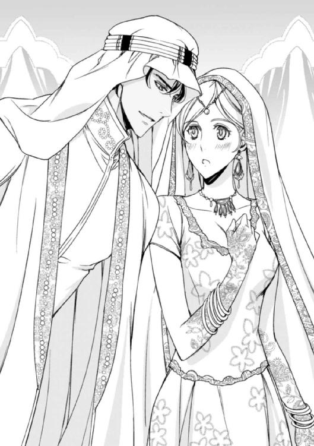
それからの一時間を、祝福の言葉と歓声と共に過ごした二人は、その場にいる人々に見送られながら結婚後、初めて夫婦の寝室に入った。
そこは、床をアラブの紋様で飾られ、黄金色の壁一面を花や動物たちのモチーフが描かれた広々とした一室。天蓋つきのベッドには色とりどりの花びらが敷き詰められ、部屋の真ん中にはジャスミンの花を浮かべたお湯が用意されている。
「さあ、我が花嫁、ジャスミン」
厳かなキスと共に着ているものを脱がされ、蜜色のランプの光の中、一矢纏わぬ姿でお互いの腰に腕を回した。
「やっと君を抱ける。ここ半月ほどの禁欲は、今までに経験した中で一番の苦難だった」
「ふふっ......、ラシード......、ぁ......」
首筋から胸に下りてきた彼の唇が、胸の突端を含んだ。柔らかな乳暈を硬い歯列でしごき、紅色に染まる乳首を舌先で転がす。
「や、......んっ、ラ......シードッ......、ぁ、んッ......、ああっ」
左腕で双臀を引き寄せられ、右の指で蜜泉の湿り気を確かめられる。
「もう十分に溢れているな」
「ん、ッ......」
指が緩やかな抽挿を何度か繰り返して、抜きさる時にまたどっと蜜を外に溢れさせる。軽く達した途端、がくりと膝が折れてしまい、咄嗟に支えられた身体を横抱きに抱えられた。そして、花びらが香るベッドに横たえられ、そっと両脚を左右に広げられる。
「きみの身体にあるオアシスは、枯れることを知らないようだな」
ジャスミンの濡れた蜜泉に口付けたラシードは、唇の先で丘陵の上に潜むピンク色の頂をくすぐった。そして、舌を硬く尖らせ、それを彼女の中に深々と沈み込ませる。
「あ、んっ......、いゃ......ぁ......」
あがき、握り締めた手の中の花びらが、芳しい香りを放つ。細かな紋様が描かれたつま先が絡み合ったまま天井を指し、それを押し分けるように起き上がったラシードは、ぎりぎりまで張りつめた蜜茎を彼女の蜜泉の中に沈み込ませた。
「ああああっ......！ ラシー......ド......。ぁ、あ......」
彼女の濡れた蜜壁はひくひくと悦び、彼の形に添って細やかな痙攣を起こし始める。
「ああ、気持ちいい......。そして、落ちつく......」
ラシードは、張りつめたくびれでゆっくりと蜜壁を探って、最奥を更に押し広げるようにトン、と強く突いた。
「あッ！ あぁ......！ まだっ......、駄目ぇ......、あ、あッ......！」
ジャスミンの身体がびくりと跳ね、たった一度突かれただけなのに、目の前で閃光が弾けた。
「もう達したのか？ そんなにも僕に抱かれるのを待ち望んでいたとは......」
結婚を決め、密かに睦み合う日々の中で、ラシードは毎回手を変え品を変え、いろいろな方法や攻め方でジャスミンを翻弄してくる。
ある時は、望むことをなんでもしてくれる優しいランプの魔人のように。またある時は、女神を崇め傅くエロティックな神官みたいに。
今日は、きっとちょっと意地悪で高飛車な暴君を演じるつもりだ。そう思うと、それに同調するように心が彼の前に跪いてしまう。なんでも言うことを聞き、彼の前にひれ伏す。実際そうされてもおかしくはない。彼は一国の王であり、砂漠の国のシークだ。
十五歳の夏、ジャスミンはラシードを一目見たその時から、彼に惹かれ彼だけを求めてきた。
必要とあらば、彼のつま先に口づけ、愛して欲しいと懇願することも厭わないくらいに。
「ええ、そうよ。あなたに抱かれたくて......。あなたが欲しくて堪らなかったわ......ぁンっ！」
身体の奥にある彼の猛りが、一層硬さを増す。
「あ、ぁ......、ラシ......ド......。身体......とろけちゃ......ぅ......あ......ッ」
「んっ......、今日はやけに感じているな......そんなにこれが好きか？ どうした、瞳が潤んでいるな。なにかして欲しいことがあれば、口に出して言ってみるがいい」
促され、ジャスミンは頬を熱く火照らせて言った。
「わたしも......、してあげたいの。あなたを愛したい。あなたがしてくれるみたいに......お願い、私にも......させてくれる？」
唇の端でにっと微笑んだラシードは、おもむろに身を引き、寝床の上に片膝を立てて座った。
そして、寝床の端に置いてある一冊の本に気付き、それを手に取って開いた。
「ふむ......これはなんだ？ 僕の妃は、昨夜なにを読み、学んだのかな？」
ラシードが持っているのは、美しい装丁がなされ、たくさんの挿絵が入った「アラビアン・ナイト」の本だ。
「あッ......！ それは......」
ジャスミンは、慌てて起き上がりラシードが持つ本に手を伸ばした。だけど、彼は一瞬早く身を引き、思わせぶりに本を開き、中を見て意味ありげに目を細めた。
「ふむ......、これはこれは......。とんでもなく淫らなことが書いてある本だな。挿絵も淫靡極まりない」
「ルクサーナがくれたの。花嫁になった夜に役に立つだろうって」
「なるほど。昔、君がアラビアン・ナイトの本を見ている時、いつか本物を見せてあげると言ったが、ルクサーナが僕の代わりに用意してくれたようだな。......うん？ ここに孔雀の羽を挟んだのは君か？ これを僕にしようとしているのかな？」
ラシードが開いている本の見開きには、裸の男女が描かれている。男は今ラシードがそうしているように寝床の上に片膝を立てて座り、女はその脚の間に顔を埋め、恍惚とした表情を浮かべている。
ジャスミンがうっすらと唇を開くと、ラシードは彼女に手を差し伸べ、魅惑的な征服者の表情を浮かべた。指先に誘われるまま顎を上向け、四つん這いになった恰好のままラシードの方へ近づいていく。
「今夜の君は、妖艶な白豹のようだ。美しく、たまらなく淫らな、僕の一番のお気に入りだ」
彼の唇にキスをし、濡れた舌先を徐々に下へとずらしていく。突起した喉元から、逞しく厚い胸板に。そして、硬く割れた腹筋の上で待つラシードの屹立した淫刀へと。
「......は、ぁ......ッ」
初めて目の当たりにする光景に、ジャスミンの唇から熱いため息が零れた。双臀を高く掲げ、肩を低く落として、彼の切っ先を舌で舐め唇の中に含んでいく。
頭の上で、ラシードが低く呻く声が聞こえた。口いっぱいに含んでいるのに、到底入りきらない彼のものが、一層質量を増してびくりと震える。おもむろに前かがみになったラシードが、あらわになっている蜜泉に指を差し入れ、ぷっくりと腫れた淫芽を掌でしごいてくる。
「んッ......！ ん、っ......！」
できる限り飲み込み、舐め上げることを繰り返しながら、彼からの愛撫を蜜泉に受け続けた。
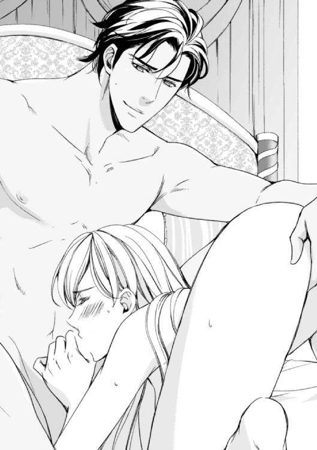
「ん、ッ......、ッ......、んッ！ ンんっ！」
あまりの悦楽に耐え切れず腰を振り、口の中にある彼の高ぶりを強く吸うと、いきなり肩を押さえつけられ、身体を後ろから羽交い絞めにされた。
「ぁ、いやぁ......」
唇がまだ彼のものを欲している。なのにそのまま背後位で入れられ、たちまち享楽の縁に追い詰められてしまう。
「妃となって初めての夜に口淫するとは......。ジャスミン、君はなにもかもが素晴らしいよ」
「ひ、ぁあンッ！」
腰を持たれ、思い切り強く突かれながら、ジャスミンは彼の愛を一心に受けることの悦びに咽んでいた。彼に抱かれ、恍惚の波に溺れながら、ふと思い出すままに質問をしてみる。
「ね......え、昔、あなたが書いてくれた手紙......」
ジャスミンは、傍らに置いてある螺鈿の小箱を指差した。
「これか？」
ラシードは、小箱に手を伸ばし、中にしまわれた紙片を摘んだ。それは、かつてラシードがジャスミンに宛てて書いた手紙だ。色合いは様々だが、どれもみな雨に濡れたために書かれている字が滲んで読めない部分がある。
「手紙に、アラビアの言葉で何か書いてあったのに、雨で消えてしまっているの。私、ずっとそれが気になっていたのよ......。あれは、なんて書いてあったの？ 調べようとしたけど、うろ覚えだったし、どうしても分からなかったの。いつか教えてくれるって言っ......、あぁんッ......！」
ジャスミンの問いに答えないまま、ラシードは彼女を深く突いて、指先で淫芽を軽く押して、コリコリと押しつぶしながら囁く。
「あぁ、あの言葉か......。そうか、雨で滲んで読めなかったんだな。あれは〝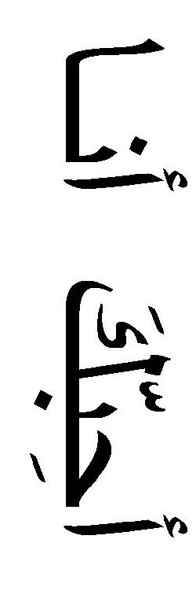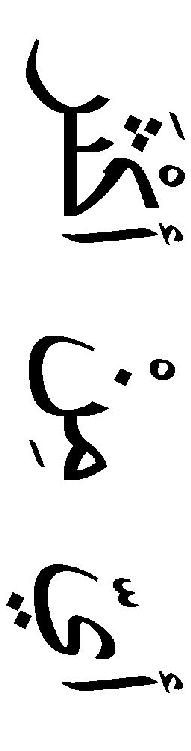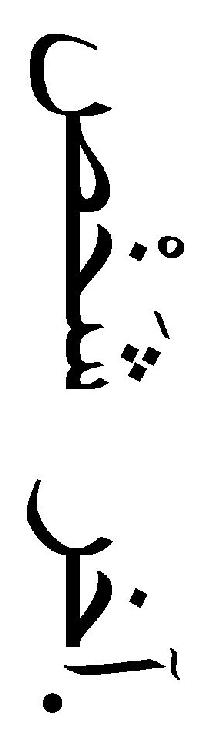〟......今ならもうわかるね？ 誰よりも君を愛しているっていう意味だ」
「あぁ、ラシード......」
また軽く達して、ジャスミンは恍惚とした表情を浮かべる。
「この言葉が消えていなかったら、君は僕のメッセージを受け取ることができていたのに......。僕の手紙と言い、僕宛にエレインが書いてくれた手紙と言い、僕たちは雨になにかと邪魔をされるね」
エレインは、あの手紙が引き起こした勘違いの件を聞かされ、ショックを受けてしまった。挙句、その後半年ほど手紙を書くのをやめてしまい、ジャスミンは、それを宥めるのに苦労してしまった。だがそれも、今となっては、笑い話だ──。
「だけど、雨が私たちを寄り添わせてもくれたわ」
ジャスミンの耳の奥に、あの日鳴り響いていた雷鳴と雨の音が聞こえてくる。
「そうだな。だが、もう邪魔をされる心配はない。ここは砂漠の国だ。雨など降らないのと同じだ」
ラシードは、ジャスミンを貫きながら、正面を向かせた。そして、勃起して震えている淫芽に指を添え、包皮を剥き、淫芯を剥き出しにする。
「あッ......、やぁっ......んっ！ あンッ！ ああああんッ！」
爪の先で小刻みにそこを嬲られ、ジャスミンは耐え切れず絶叫する。
「や、やらし......。王のくせにっ......、シークのくせに、なんて淫らなことをっ......」
「王だからなんだ？ 王だってただの男だ......。君を愛し、君にひれ伏し、君の奴隷となって君のつま先に口づけもする......」
耳朶を甘く噛みながら、ラシードが低く囁く。
「アッ！ ひ、ンッ......、そ、それ、い、......あ......！ あ、あアッ、あ......！」
「君を抱きたくて仕方なかった。君に思い切り淫らな恰好をさせて、君の全部を舐めて、噛んで、屠って。君の内側を全部暴いて、犯して......」
「ん、ぁ......ッ......！ ラシード......！ ラシード......ッ！」
ジャスミンの淫泉がラシードによって更に満たされて溢れた。二人はなおも獣のように交じり合って、灼熱の蜜夜の中に身体を溶け込ませた。
◇ ◇ ◇
アラブの紋様が描かれた大理石の床の上に、何枚もの紙が並んでいる。その前にいるのは、ゆったりとしたアバヤを着たジャスミンと、薄い草色のカンドゥーラを着たアレックスだ。
「じゃあ、これで原稿はでき上がりだ。あとは、ロンドンの出版社に届けて発行を待つのみだな」
アレックスは、頭を覆うゴトラを指でしごきながら、彼女に向けてにっこりと笑いかけた。
「ええ、やっとここまでこぎつけたわね。お疲れ様！ さあ、今夜は私設祝賀パーティを開きましょう」
ジャスミンがラシードの妃となり、カビール国に移り住んでもう二年になる。彼女は、女王の職務を忙しくこなしながら、アレックスと共同で本の編纂に取り組んでいた。それは、アレックスが砂漠のあちこちを探検して得た様々な留め書きや絵図を基盤にした物で、必要と思われる箇所にジャスミンの加筆修正が入っている。
「アレックス・バークリー第一冊目の探検記ね。次にどこへ行くかもう決まっているの？」
「ああ、今度はアイスランドに行こうかと思っている。あそこには、面白そうな洞窟や氷河があるらしいから」
「まあ、そうなの？ ここからもっと南に行くんだと思っていたわ。そうであれば、私もちょっとくらい探検に同行させてもらえたのに」
「アイスランドが終わったら南に行くつもりだ。その時は声をかけるから是非協力してくれ。君の飽くことのない好奇心は、妃になっても健在だな」
「ええ、もちろん！ それにしても、本を作るって面白いわ。私も何か書こうかしら。たとえば、イギリスのレディが、砂漠の国のお妃になるお話とか......」
「いいね。どうやら君には文才があるようだし。最近アラビア語で詩を書いているだろう？ ゆくゆくはあれも出版するといいよ」
「あ、ラシード──」
部屋にやってきたラシードが、ジャスミンの背後から唇にキスをした。ジャスミンはほんのりと頬を染め、二人にっこりと微笑み合う。
「やれやれ、君たちときたら！ 少しは遠慮してくれたまえよ。僕なんかもう半月もアイーシャとテオに会えていないっていうのに」
アレックスの息子であるテオとアイーシャは、本の出版に奔走するアレックスの留守を利用し、アジャスタ国に里帰りをしているのだ。
「君たち兄妹は本当に仲がいいな。ジャスミン、アレックスに付いて探検に行くのはいいが、僕のことをあまりほったらかしにしないでくれよ。それに、あまり危険なところはやめてもらいたいな」
「ええ、わかっているわ、ラシード」
もう一度キス。それを見せ付けられているアレックスは、呆れたように肩をすくめ、大袈裟にため息をついた。
「まあ、それはさておき、さっきの本を書くって話、本当に考えてみたらどうだ？ イギリスに帰ったら、早速出版社に打診してみよう」
アレックスの言葉に、ジャスミンは驚いたような表情を浮かべる。
「それ本気で言っているの？」
「ああ、本気だ。なんせ実際自分の身に起きたことだからね。外を飛び回る探検もいいが、君の頭の中にあることを文章にまとめてみるいい機会だ。事実でもフィクションでもいい。ここはじっくり取り組んでみたらどうだ？ その仲の良さからして、そろそろ子宝にも恵まれそうだし」
「まあ！ アレックスったら！」
実のところ、もう一週間ほど月のものが遅れている。もしかして、赤ちゃんができたのかもしれない。もう少し様子をみてからラシードに言おうと思っているけど、どうやら彼はうっすら感づいているみたいだ。
「僕もそれに賛成する。君をしばらくの間おとなしくさせておく必要もあるようだしね。でき上がって出版する際には、大々的に宣伝をうとう。どうだい、ハニー？」
「ええ、ありがとう。物語を書くことについては、本気で考えてみるわ。現実に起きた、夢の様な恋のお話──きっといい本が書けるような気がする」
ラシードは頷き、被っていたゴトラをアレックスの顔をめがけて放り投げた。そして、ジャスミンの唇にもう一度キスを落とし、微笑みあう。
「なにをするんだ！ おおかたまたいちゃついているんだろう！」
アレックスが、目隠しをされたまま不平を言う。
「当たり前だ」
ラシードが答え、ジャスミンの唇の中にもう一度舌先を溶け込ませる。
ここは砂漠の国──アラビアン・ナイトが語り継がれた場所だ。
二人だけのアラビアン・ナイトは、これからも永遠に続いていく。
─了─
あとがき
こんにちは。有允ひろみです。トパーズノベルスでの二作目を書かせていただきました。
このたびは、『冷徹シークと灼熱の蜜夜』をお求めいただき、ありがとうございます。
一作目の舞台は、十八世紀初頭のイギリスでしたが、今回はそこより遥か南にある砂漠の国が恋の舞台となります。
主人公は貴族の子女ですが、訳あって国を離れ、灼熱の国に実の兄を探しに行きます。そこでかつて恋をしたアラブのシークに再会し、恋も再燃する──。
夢見がちな乙女なら、誰もが一度は憧れるアラビアン・ナイトの世界を織り込みつつ、決して色恋に流されるだけではないヒロインを描こうと努力いたしました。
いかがでしたでしょうか。
この物語を書くにあたり、いろいろな本を読み、サイトを閲覧しました。
実在するアラビアン・セレブの方々のお顔や生活スタイルを知るたび、私自身どんどん砂漠の国に惹かれ、執筆はさておき、彼等自身についてあれこれと調べたりして。
私事ですが、物語を書く時には、まずはプロットを決め、次に誰かしらヴィジュアル的なモデルを設定します。
そこからいろいろと妄想を膨らませていくのですが、物語にのめり込んで書くためにも、毎回そのモデルに軽く恋をしてしまいます。こういうのって、俳優の方が共演した相手役に本気になってしまう──というのと似ているのかな？ などと思ったりしました。
今回のイラストも、前作同様ＯＤＥＫＯ先生にお願いする事ができました。「冷徹だけど灼熱」な男ラシードと、彼を想い続ける「一途なお転婆娘」ジャスミンを、すばらしく魅力的に描いていただきました。心から感謝しております。先生のイラストに恥じない物語を書かなければと、より一層頑張ることができました。重ね重ねお礼申し上げます。
また、いつもお世話になっている担当様、いろいろと相談に乗ってくれたり、励ましてくれる友人達にも心から感謝いたします。
そして、この作品を読んでくださった読者の皆様にも、感謝の言葉をお伝えしたいと思います。皆様あっての今の私です。本当にありがとうございます。
また次の本でお目にかかれますよう、引き続き頑張ってまいりますので、どうぞよろしくお願い申し上げます。
二〇一六年七月吉日
有允ひろみ
トパーズノベルス
同時配信二〇一六年七月二九日配信予定
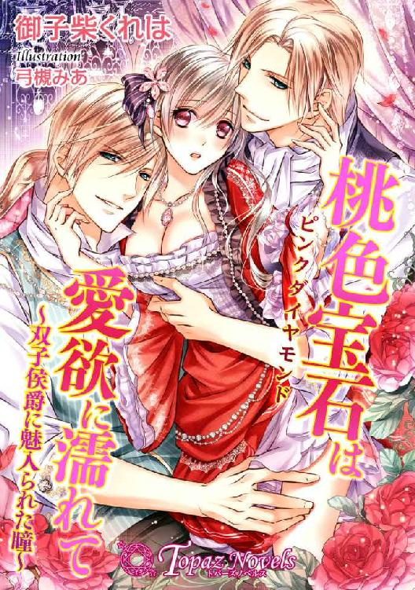
桃色宝石は愛欲に濡れて～双子侯爵に魅入られた瞳～
【書下ろし・イラスト十枚入り】
著作：御子柴くれは
イラスト：ＯＤＥＫＯ
「お願い、ですっ......もう、こんなことは──んあっ......ああっ......」
伯爵家の長女・アンジェリカは婚約を結んだウィリアム侯爵の城に滞在中、ウィリアムの双子の弟・ブラッドリーに純潔を奪われてしまう。自分の子を侯爵にする野望を持つブラッドリーにアンジェリカは関係を強要され......。
トパーズノベルス
近日配信二〇一六年八月二六日配信予定
二人のシークとハレムの秘された甘い夜
【書下ろし・イラスト八枚入り】
著作：茅原ゆみ イラスト：緒田涼歌
「お前の美しさは罪だ。だから俺たちの手で罰してやろう」
ユリアは、ハスィール王国の第一王子のアサードに茶会に招かれるが、その席で薬を盛られ眠りに落ちる。目覚めると寝室で、アサードに唇を奪われた。第二王子のファリスも現れ、二人がユリアの純潔を散らそうとして......！
皇太子の淫靡な束縛～仙女は禁断の桃源郷へ堕ちて～
【書下ろし・イラスト十枚入り】
著作：麻倉とわ イラスト：有馬かつみ
「ああ、なるほど。この程度ではご不満ということか？ もっと恥ずかしいことをしてほしいのだな？」
仙女の紫珠は、逃げた霊猫を追って下界へ迷い込む。運悪く賊に捕まり、霊猫を人質に取られてしまう。斉里国の皇太子・斉陽亮の暗殺を命じられた紫珠。しかし陽亮に見破られ失敗する。「誰の命令だ？ 話すまで何度でも犯してやる」
トパーズノベルス
冷徹シークと灼熱の蜜夜
電子第一版発行 二〇一六年七月二九日
著 者 有允ひろみ
イラスト ＯＤＥＫＯ
編 集 オフィスふたつぎ 二木由利子
デザイン 荒木香樹
発行所 会社名 アイデジタルパブリッシング
所在地 東京都渋谷区渋谷一‐八‐七
© Hiromi Yuuin / ODEKO / Ai digital publishing 2016
本書の一部、あるいは全部を無断で複製複写（コピー、スキャン、デジタル化等）、転載、上演、放送することは法律で特に規定されている場合を除き、著作権者、出版社の権利の侵害となるため禁止します。
本書を代行業者等の第三者に依頼してスキャンやデジタル化することは、たとえ個人や家庭内で利用する場合であっても一切認められておりません。